Chapter 4 Réalisation des analyses statistiques
Les vignettes suivantes décrivent la façon d’implanter différentes analyses statistiques. Reportez-vous au numéro de vignette indiqué par l’arbre décisionnel afin d’avoir un exemple de l’analyse statistique dont vous avez besoin.
Pour rappel, si jamais vous devez adapter le code ci-dessous pour construire un modèle statistique différent de celui rapporté, voici la syntaxe adoptée par R :
formula = y ~ x # effet principal de x sur y
formula = y ~ x + z # effets principaux de x et z sur y
formula = y ~ x + z + m # effets principaux de x, z et m sur y
formula = y ~ x + z + m + x:z # effets principaux de x, z et m sur y et interaction entre x et z sur y
formula = y ~ x*z + m # commande strictement équivalente à la ligne précédente
formula = y ~ x + z + m + x:z + x:m + m:z + x:z:m # analyse de tous les effets principaux, des 3 interactions simples et de l'interaction double sur y
formula = y ~ x*m*z # commande strictement équivalente à la ligne précédente4.1 Une seule VD numérique
4.1.1 Test t indépendant
4.1.1.1 Type de variables
Variable Dépendante : Numérique
Variable Indépendante : Catégorielle (2 catégories)
4.1.1.2 Packages nécessaires
4.1.1.3 Données réelles
# choisissez la ligne appropriée au format de votre fichier de données.
# si vos données sont dans un fichier .txt
my_data.ttest <- read.delim(file.choose())
# si vos données sont dans un fichier .csv
my_data.ttest <- read.csv(file.choose())
# si vos données sont dans un fichier .xls / .xlsx
my_data.ttest <- read_excel(file.choose())
# une fois vos données chargées, vous pouvez renommer vos noms de colonnes afin qu'ils correspondent à ceux utilisés dans le code ci-dessous
# Si vous ne souhaitez pas renommer vos noms de colonnes, sautez cette étape mais adaptez le code des parties suivantes en lui indiquant les noms de colonnes de vos données.
# On crée une nouvelle colonne pour votre variable dépendante continue (remplacez 'votre.nom.de.colonne' par le nom approprié)
my_data.ttest$VD1.cont <- my_data.ttest$'votre.nom.de.colonne'
# On crée une nouvelle colonne pour votre variable indépendante catégorielle (remplacez 'votre.nom.de.colonne' par le nom approprié)
my_data.ttest$VI1.cat <- my_data.ttest$'votre.nom.de.colonne'4.1.1.4 Données fictives
4.1.1.5 Déclaration du type de variable
4.1.1.6 Inspection visuelle des données
## Les graphiques situés sur la diagonale représentent la distribution des variables
## Les graphiques (ou les valeurs de corrélation) situés au dessus et en dessous de la diagonale représentent les associations deux-à-deux
ggpairs(my_data.ttest,
lower = list(continuous = wrap("smooth", alpha = 0.7), combo = "box_no_facet"),
upper = list(combo = "facetdensity", discrete = "facetbar"),
mapping = aes(alpha = 0.8)) + theme_bw()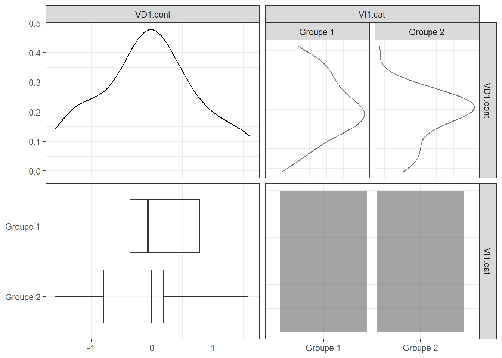
4.1.1.7 Analyse des données
# calcul du test t et stockage des résultats dans l’objet t.test
t.test <- t.test(formula = VD1.cont ~ VI1.cat,
data = my_data.ttest,
var.equal = TRUE)
# calcul des moyennes et écarts types pour les deux modalités de VI.cat
description.ttest <- my_data.ttest %>%
group_by(VI1.cat) %>%
summarise(
Mean = mean(VD1.cont),
SD = sd(VD1.cont),
N = n())
# calcul de la taille d'effet de VI1.cat sur VD1.cont (SMD / d de cohen)
cohensd.ttest <- rstatix::cohens_d(data = my_data.ttest,
formula = VD1.cont ~ VI1.cat,
var.equal = TRUE)
# obtention des différentes moyennes/écarts-types
description.ttest## # A tibble: 2 x 4
## VI1.cat Mean SD N
## <fct> <dbl> <dbl> <int>
## 1 Groupe 1 0.116 0.868 15
## 2 Groupe 2 -0.200 0.831 15##
## Two Sample t-test
##
## data: VD1.cont by VI1.cat
## t = 1.0194, df = 28, p-value = 0.3167
## alternative hypothesis: true difference in means is not equal to 0
## 95 percent confidence interval:
## -0.3192537 0.9518066
## sample estimates:
## mean in group Groupe 1 mean in group Groupe 2
## 0.1162924 -0.1999841## # A tibble: 1 x 7
## .y. group1 group2 effsize n1 n2 magnitude
## * <chr> <chr> <chr> <dbl> <int> <int> <ord>
## 1 VD1.cont Groupe 1 Groupe 2 0.372 15 15 small4.1.1.8 Graphique
ggplot(my_data.ttest, aes(x = VI1.cat, y = VD1.cont, fill = VI1.cat)) +
geom_boxplot(color = "black", outlier.color = "red") +
geom_jitter(size = 3, alpha = 0.4, width = 0.1) +
ylab("VD1.cont") + xlab("VI1.cat") +
theme_bw() +
theme(axis.title.y = element_text(size = 14, hjust = 0.5, face = "bold"),
axis.title.x = element_text(face ="bold", size = 14, hjust = 0.5)) +
scale_fill_grey(start = 0.8, end = 0.5) +
guides(fill = FALSE)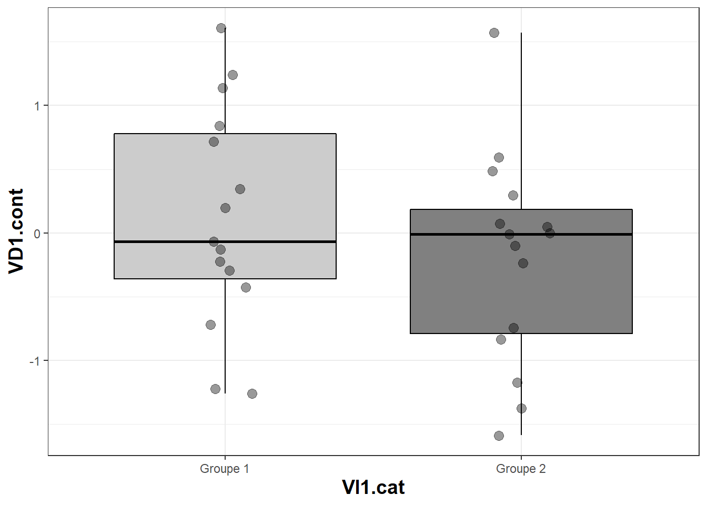
4.1.1.9 Interpretation
[1] “Les scores moyens du groupe 1 (M = 0.116, SD = 0.868, N = 15) et du groupe 2 (M = -0.2, SD = 0.831, N = 15) ne diffèrent pas statistiquement (t = 1.019, p = 0.317, d de cohen = 0.372)”
4.1.2 ANOVA à un facteur
4.1.2.1 Type de variables
Variable Dépendante : Numérique
Variable Indépendante : Catégorielle (3 catégories ou +)
4.1.2.2 Packages nécessaires
4.1.2.3 Données réelles
# choisissez la ligne appropriée au format de votre fichier de données.
# si vos données sont dans un fichier .txt
my_data.anova <- read.delim(file.choose())
# si vos données sont dans un fichier .csv
my_data.anova <- read.csv(file.choose())
# si vos données sont dans un fichier .xls / .xlsx
my_data.anova <- read_excel(file.choose())
# une fois vos données chargées, vous pouvez renommer vos noms de colonnes afin qu'ils correspondent à ceux utilisés dans le code ci-dessous
# Si vous ne souhaitez pas renommer vos noms de colonnes, sautez cette étape mais adaptez le code des parties suivantes en lui indiquant les noms de colonnes de vos données.
# On crée une nouvelle colonne pour votre variable dépendante continue (remplacez 'votre.nom.de.colonne' par le nom approprié)
my_data.anova$VD1.cont <- my_data.anova$'votre.nom.de.colonne'
# On crée une nouvelle colonne pour votre variable indépendante catégorielle (remplacez 'votre.nom.de.colonne' par le nom approprié)
my_data.anova$VI1.multicat <- my_data.anova$'votre.nom.de.colonne'4.1.2.4 Données fictives
set.seed(4321)
my_data.anova <- data.frame(
VD1.cont = c(rnorm(30)-1, rnorm(90)),
VI1.multicat = rep(c(1, 2, 3, 4), each = 30))
# On renomme les catégories de VI1.cat pour que les résultats soient plus lisibles
my_data.anova$VI1.multicat <- fct_recode(factor(my_data.anova$VI1.multicat),
"Groupe 1" = "1",
"Groupe 2" = "2",
"Groupe 3" = "3",
"Groupe 4" = "4") 4.1.2.5 Déclaration du type de variables
4.1.2.6 Inspection des données
## Les graphiques situés sur la diagonale représentent la distribution des variables
## Les graphiques (ou les valeurs de corrélation) situés au dessus et en dessous de la diagonale représentent les associations deux-à-deux
ggpairs(my_data.anova,
lower = list(continuous = wrap("smooth", alpha = 0.7), combo = "box_no_facet"),
upper = list(combo = "facetdensity"),
mapping = aes(alpha = 0.8)) + theme_bw()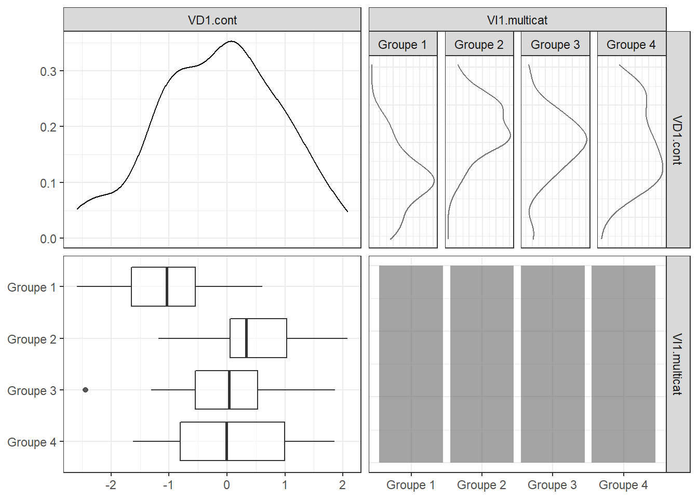
4.1.2.7 Analyse des données
# calcul de l'ANOVA et stockage des résultats dans l’objet anova.test
anova.test <- lm(formula = VD1.cont ~ VI1.multicat,
data = my_data.anova)
# calcul des moyennes et écarts types pour chaque modalité de VI.multicat
description.anova <- my_data.anova %>%
group_by(VI1.multicat) %>%
summarise(
Mean = mean(VD1.cont),
SD = sd(VD1.cont),
N = n())
# calcul des tests post hoc (comparaison de moyennes deux à deux) ajustées par une procédure tukey.
posthoc.anova <- emmeans(anova.test, pairwise ~ VI1.multicat, adjust = "tukey")
# calcul de la taille d'effet de VI1.multicat sur VD1.cont (SMD / d de cohen)
cohensd.anova <- rstatix::cohens_d(data = my_data.anova,
formula = VD1.cont ~ VI1.multicat,
var.equal = TRUE)
# obtention des différentes moyennes/écarts-types pour chaque groupe
description.anova## # A tibble: 4 x 4
## VI1.multicat Mean SD N
## <fct> <dbl> <dbl> <int>
## 1 Groupe 1 -1.04 0.850 30
## 2 Groupe 2 0.464 0.758 30
## 3 Groupe 3 -0.0927 0.946 30
## 4 Groupe 4 0.0700 1.03 30## Anova Table (Type II tests)
##
## Response: VD1.cont
## Sum Sq Df F value Pr(>F)
## VI1.multicat 36.727 3 15.081 2.371e-08 ***
## Residuals 94.169 116
## ---
## Signif. codes: 0 '***' 0.001 '**' 0.01 '*' 0.05 '.' 0.1 ' ' 1## $emmeans
## VI1.multicat emmean SE df lower.CL upper.CL
## Groupe 1 -1.0418 0.164 116 -1.4581 -0.626
## Groupe 2 0.4642 0.164 116 0.0479 0.880
## Groupe 3 -0.0927 0.164 116 -0.5089 0.324
## Groupe 4 0.0700 0.164 116 -0.3462 0.486
##
## Confidence level used: 0.95
## Conf-level adjustment: sidak method for 4 estimates
##
## $contrasts
## contrast estimate SE df t.ratio p.value
## Groupe 1 - Groupe 2 -1.506 0.233 116 -6.474 <.0001
## Groupe 1 - Groupe 3 -0.949 0.233 116 -4.080 0.0005
## Groupe 1 - Groupe 4 -1.112 0.233 116 -4.779 <.0001
## Groupe 2 - Groupe 3 0.557 0.233 116 2.394 0.0840
## Groupe 2 - Groupe 4 0.394 0.233 116 1.694 0.3313
## Groupe 3 - Groupe 4 -0.163 0.233 116 -0.699 0.8972
##
## P value adjustment: tukey method for comparing a family of 4 estimates## # A tibble: 6 x 7
## .y. group1 group2 effsize n1 n2 magnitude
## * <chr> <chr> <chr> <dbl> <int> <int> <ord>
## 1 VD1.cont Groupe 1 Groupe 2 -1.87 30 30 large
## 2 VD1.cont Groupe 1 Groupe 3 -1.06 30 30 large
## 3 VD1.cont Groupe 1 Groupe 4 -1.18 30 30 large
## 4 VD1.cont Groupe 2 Groupe 3 0.650 30 30 moderate
## 5 VD1.cont Groupe 2 Groupe 4 0.437 30 30 small
## 6 VD1.cont Groupe 3 Groupe 4 -0.165 30 30 negligible4.1.2.8 Graphique
ggplot(my_data.anova, aes(x = VI1.multicat, y = VD1.cont, fill = VI1.multicat)) +
geom_boxplot(color="black", outlier.color="red") +
geom_jitter(size = 3, alpha=0.4, width=0.1) +
ylab("VD1.cont") + xlab("VI1.cat") +
theme_bw() +
theme(axis.title.y = element_text(size = 14, hjust = 0.5, face="bold"),
axis.title.x = element_text(face="bold", size = 14, hjust = 0.5)) +
scale_fill_grey(start = 0.9, end = 0.5) +
guides(fill = FALSE)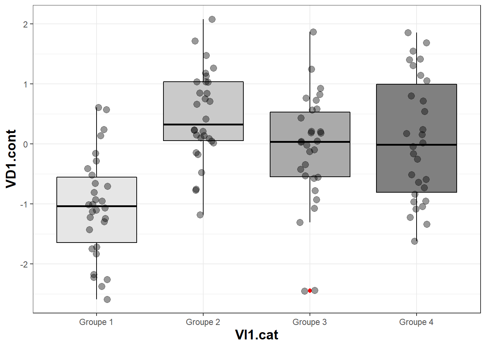
4.1.2.9 Interpretation
[1] “L’effet principal de VI1.multicat est significatif (F = 15.081, p = 2e-08). Les scores moyens du groupe 1 (M = -1.042, SD = 0.85, N = 30) sont significativement plus faibles que les scores moyens de 3 autres groupes (toutes les valeurs p ajustées < 0.00048, d de cohen > 1.055). Aucune autre différence n’atteint la significativité (toutes les valeurs p ajustées > 0.084, d de cohen < 0.65)”
4.1.3 Corrélation
4.1.3.1 Type de variables
Variable Dépendante : Numérique
Variable Indépendante : Numérique
4.1.3.3 Données réelles
# choisissez la ligne appropriée au format de votre fichier de données.
# si vos données sont dans un fichier .txt
my_data.correlation <- read.delim(file.choose())
# si vos données sont dans un fichier .csv
my_data.correlation <- read.csv(file.choose())
# si vos données sont dans un fichier .xls / .xlsx
my_data.correlation <- read_excel(file.choose())
# une fois vos données chargées, vous pouvez renommer vos noms de colonnes afin qu'ils correspondent à ceux utilisés dans le code ci-dessous
# Si vous ne souhaitez pas renommer vos noms de colonnes, sautez cette étape mais adaptez le code des parties suivantes en lui indiquant les noms de colonnes de vos données.
# On crée une nouvelle colonne pour votre variable dépendante continue (remplacez 'votre.nom.de.colonne' par le nom approprié)
my_data.correlation$VD1.cont <- my_data.correlation$'votre.nom.de.colonne'
# On crée une nouvelle colonne pour votre variable indépendante continue (remplacez 'votre.nom.de.colonne' par le nom approprié)
my_data.correlation$VI1.cont <- my_data.correlation$'votre.nom.de.colonne'4.1.3.4 Données fictives
4.1.3.5 Déclaration du type de variables
4.1.3.6 Inspection des données
## Les graphiques situés sur la diagonale représentent la distribution des variables
## Les graphiques (ou les valeurs de corrélation) situés au dessus et en dessous de la diagonale représentent les associations deux-à-deux
ggpairs(my_data.correlation,
lower = list(continuous = wrap("smooth", alpha = 0.7), combo = "box_no_facet"),
upper = list(combo = "facetdensity", discrete = "facetbar"),
mapping = aes(alpha = 0.8)) + theme_bw()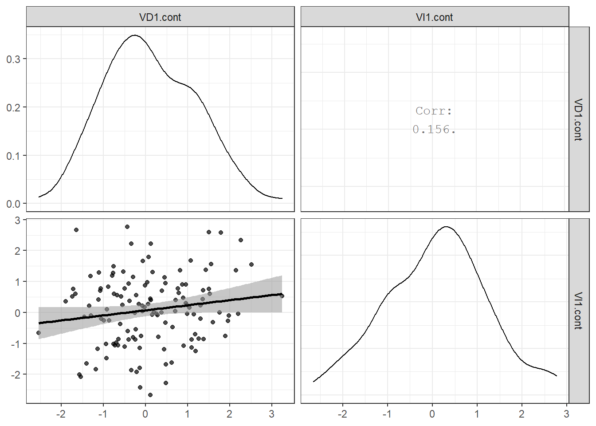
4.1.3.7 Analyse des données
# calcul de la corrélation et stockage des résultats dans l’objet correlation.test
correlation.test <- cor.test(formula = ~ VD1.cont + VI1.cont,
data = my_data.correlation,
method = "pearson")
# obtention des résultats de la correlation
correlation.test##
## Pearson's product-moment correlation
##
## data: VD1.cont and VI1.cont
## t = 1.7884, df = 128, p-value = 0.07607
## alternative hypothesis: true correlation is not equal to 0
## 95 percent confidence interval:
## -0.01649018 0.31972942
## sample estimates:
## cor
## 0.15613934.1.3.8 Graphique
# la droite représente la pente de l'effet de VI1.cont sur VD1.cont. La partie grisée autour de la droite représente l'intervalle de confiance à 95%
ggplot(my_data.correlation, aes(x = VI1.cont, y = VD1.cont)) +
geom_point(size = 3, alpha = 0.4) +
geom_smooth(formula = y ~ x, method = "lm") +
ylab("VD1.cont") + xlab("VI1.cont") +
theme_bw() +
theme(axis.title.y = element_text(size = 14, hjust = 0.5, face = "bold"),
axis.title.x = element_text(face = "bold", size = 14, hjust = 0.5))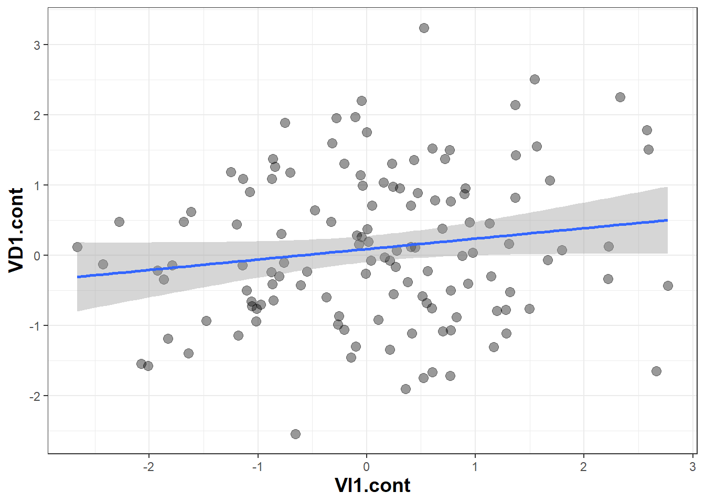
4.1.3.9 Interpretation
[1] “La correlation entre les variables VD1.cont et VI.cont est faible et la valeur p de cette association est marginalement significative (r = 0.156, 95% IC = [-0.016, 0.32], p = 0.076)”
4.1.4 ANOVA multifactorielle
4.1.4.1 Type de variables
Variable Dépendante : Numérique
Variables Indépendantes : Catégorielles (2 catégories ou +)
4.1.4.2 Packages nécessaires
4.1.4.3 Données réelles
# choisissez la ligne appropriée au format de votre fichier de données.
# si vos données sont dans un fichier .txt
my_data.anovafact <- read.delim(file.choose())
# si vos données sont dans un fichier .csv
my_data.anovafact <- read.csv(file.choose())
# si vos données sont dans un fichier .xls / .xlsx
my_data.anovafact <- read_excel(file.choose())
# une fois vos données chargées, vous pouvez renommer vos noms de colonnes afin qu'ils correspondent à ceux utilisés dans le code ci-dessous
# Si vous ne souhaitez pas renommer vos noms de colonnes, sautez cette étape mais adaptez le code des parties suivantes en lui indiquant les noms de colonnes de vos données.
# On crée une nouvelle colonne pour votre variable dépendante continue (remplacez 'votre.nom.de.colonne' par le nom approprié)
my_data.anovafact$VD1.cont <- my_data.anovafact$'votre.nom.de.colonne'
# On crée une nouvelle colonne pour vos variables indépendantes catégorielles (remplacez 'votre.nom.de.colonne' par les noms appropriés)
my_data.anovafact$VI1.cat <- my_data.anovafact$'votre.nom.de.colonne'
my_data.anovafact$VI2.cat <- my_data.anovafact$'votre.nom.de.colonne'4.1.4.4 Données fictives
set.seed(4321)
my_data.anovafact <- data.frame(
VD1.cont = c(rnorm(20)-0.5, rnorm(20), rnorm(20)+0.5, rnorm(20)),
VI1.cat = rep(c(1, 2), each = 40),
VI2.cat = rep(c(1, 2, 1, 2), each = 20))
# On renomme les catégories de VI1.cat et VI2.cat pour que les résultats soient plus lisibles
my_data.anovafact$VI1.cat <- fct_recode(factor(my_data.anovafact$VI1.cat),
"Groupe 1" = "1",
"Groupe 2" = "2")
my_data.anovafact$VI2.cat <- fct_recode(factor(my_data.anovafact$VI2.cat),
"Modalite 1" = "1",
"Modalite 2" = "2") 4.1.4.5 Déclaration du type de variables
4.1.4.6 Inspection des données
## Les graphiques situés sur la diagonale représentent la distribution des variables
## Les graphiques (ou les valeurs de corrélation) situés au dessus et en dessous de la diagonale représentent l'association entre les différentes variables
ggpairs(my_data.anovafact,
lower = list(continuous = wrap("smooth", alpha = 0.7), combo = "box_no_facet"),
upper = list(combo = "facetdensity", discrete = "facetbar"),
mapping = aes(alpha = 0.8)) + theme_bw()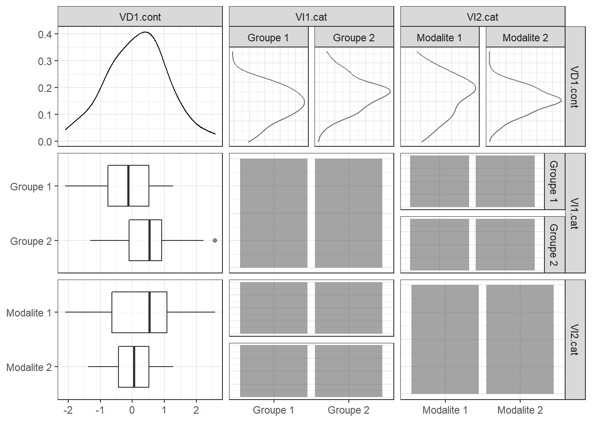
4.1.4.7 Analyse des données
# calcul de l'ANOVA et stockage des résultats dans l’objet anovafact.test
anovafact.test <- lm(formula = VD1.cont ~ VI1.cat*VI2.cat,
contrasts = list(
VI1.cat="contr.sum",
VI2.cat="contr.sum"),
data = my_data.anovafact)
# calcul des moyennes et écarts types pour lchaque modalité de VI.multicat
description.anovafact <- my_data.anovafact %>%
group_by(VI1.cat, VI2.cat) %>%
summarise(
Mean=mean(VD1.cont),
SD=sd(VD1.cont),
N=n())
# calcul des tests post hoc (comparaison de moyennes deux à deux) sans ajuster la valeur p
posthoc.anovafact <- emmeans(anovafact.test, consec ~ VI1.cat | VI2.cat, adjust="none")
# calcul de la taille d'effet de VI1.cat et VI2.cat sur VD1.cont (SMD / d de cohen)
my_data.anovafact$VI.comb <- interaction(my_data.anovafact$VI1.cat, my_data.anovafact$VI2.cat)
cohensd.anovafact <- rstatix::cohens_d(data = my_data.anovafact,
formula = VD1.cont ~ VI.comb,
var.equal = TRUE)
# obtention des différentes moyennes/écarts-types
description.anovafact## # A tibble: 4 x 5
## # Groups: VI1.cat [2]
## VI1.cat VI2.cat Mean SD N
## <fct> <fct> <dbl> <dbl> <int>
## 1 Groupe 1 Modalite 1 -0.506 0.965 20
## 2 Groupe 1 Modalite 2 0.125 0.670 20
## 3 Groupe 2 Modalite 1 1.01 0.806 20
## 4 Groupe 2 Modalite 2 -0.0407 0.618 20## Anova Table (Type III tests)
##
## Response: VD1.cont
## Sum Sq Df F value Pr(>F)
## (Intercept) 1.757 1 2.9149 0.0918473 .
## VI1.cat 9.170 1 15.2159 0.0002055 ***
## VI2.cat 0.898 1 1.4897 0.2260313
## VI1.cat:VI2.cat 14.215 1 23.5880 6.245e-06 ***
## Residuals 45.802 76
## ---
## Signif. codes: 0 '***' 0.001 '**' 0.01 '*' 0.05 '.' 0.1 ' ' 1## $emmeans
## VI2.cat = Modalite 1:
## VI1.cat emmean SE df lower.CL upper.CL
## Groupe 1 -0.5060 0.174 76 -0.852 -0.160
## Groupe 2 1.0142 0.174 76 0.668 1.360
##
## VI2.cat = Modalite 2:
## VI1.cat emmean SE df lower.CL upper.CL
## Groupe 1 0.1252 0.174 76 -0.221 0.471
## Groupe 2 -0.0407 0.174 76 -0.386 0.305
##
## Confidence level used: 0.95
##
## $contrasts
## VI2.cat = Modalite 1:
## contrast estimate SE df t.ratio p.value
## Groupe 2 - Groupe 1 1.520 0.245 76 6.192 <.0001
##
## VI2.cat = Modalite 2:
## contrast estimate SE df t.ratio p.value
## Groupe 2 - Groupe 1 -0.166 0.245 76 -0.676 0.5011## # A tibble: 6 x 7
## .y. group1 group2 effsize n1 n2 magnitude
## * <chr> <chr> <chr> <dbl> <int> <int> <ord>
## 1 VD1.cont Groupe 1.Modalite 1 Groupe 2.Modalite 1 -1.71 20 20 large
## 2 VD1.cont Groupe 1.Modalite 1 Groupe 1.Modalite 2 -0.760 20 20 moderate
## 3 VD1.cont Groupe 1.Modalite 1 Groupe 2.Modalite 2 -0.574 20 20 moderate
## 4 VD1.cont Groupe 2.Modalite 1 Groupe 1.Modalite 2 1.20 20 20 large
## 5 VD1.cont Groupe 2.Modalite 1 Groupe 2.Modalite 2 1.47 20 20 large
## 6 VD1.cont Groupe 1.Modalite 2 Groupe 2.Modalite 2 0.258 20 20 small4.1.4.8 Graphique
ggplot(my_data.anovafact, aes(x = VI1.cat, y = VD1.cont, fill = VI1.cat)) +
geom_boxplot(color="black", outlier.color="red") +
geom_jitter(size = 3, alpha=0.4, width=0.1) +
facet_wrap(~VI2.cat) +
ylab("VD1.cont") + xlab("VI1.cat") +
theme_bw() +
theme(axis.title.y = element_text(size = 14, hjust = 0.5, face="bold"),
axis.title.x = element_text(face="bold", size = 14, hjust = 0.5)) +
scale_fill_grey(start = 0.9, end = 0.5) +
guides(fill = FALSE)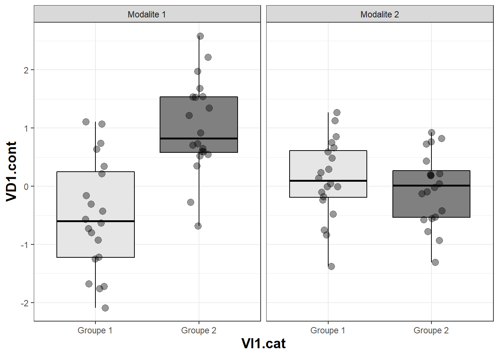
4.1.4.9 Interpretation
[1] “L’interaction entre VI1.cat et VI2.cat est significative (F = 23.588, p = 6.24e-06). La différence entre les scores obtenus par le groupe 1 et le groupe 2 est significative pour la modalité 1 de VI2.cat (moyenne groupe 1 = -0.506, SD groupe 1 = 0.965, N groupe 1 = 20; moyenne groupe 2 = 1.014, SD groupe 2 = 0.806, N groupe 2 = 20; p = 3e-08, d de cohen = -1.71), mais pas pour la modalité 2 de VI2.cat (M.grp1 = 0.125, SD groupe 1 = 0.67, N groupe 1 = 20; M groupe 2 = -0.041, SD groupe 2 = 0.618, N groupe 2 = 20; p = 0.501, d de cohen = 0.258)”
4.1.5 Regression linéaire multiple 1
4.1.5.1 Type de variables
Variable Dépendante : Numérique
Variables Indépendantes : Numériques
4.1.5.2 Packages nécessaires
4.1.5.3 Données réelles
# choisissez la ligne appropriée au format de votre fichier de données.
# si vos données sont dans un fichier .txt
my_data.regmult1 <- read.delim(file.choose())
# si vos données sont dans un fichier .csv
my_data.regmult1 <- read.csv(file.choose())
# si vos données sont dans un fichier .xls / .xlsx
my_data.regmult1 <- read_excel(file.choose())
# une fois vos données chargées, vous pouvez renommer vos noms de colonnes afin qu'ils correspondent à ceux utilisés dans le code ci-dessous
# Si vous ne souhaitez pas renommer vos noms de colonnes, sautez cette étape mais adaptez le code des parties suivantes en lui indiquant les noms de colonnes de vos données.
# On crée une nouvelle colonne pour votre variable dépendante continue (remplacez 'votre.nom.de.colonne' par le nom approprié)
my_data.regmult1$VD1.cont <- my_data.regmult1$'votre.nom.de.colonne'
# On crée une nouvelle colonne pour votre variable indépendante continue (remplacez 'votre.nom.de.colonne' par le nom approprié)
my_data.regmult1$VI1.cont <- my_data.regmult1$'votre.nom.de.colonne'
my_data.regmult1$VI2.cont <- my_data.regmult1$'votre.nom.de.colonne'4.1.5.4 Données fictives
4.1.5.5 Déclaration du type de variables
4.1.5.6 Inspection des données
## Les graphiques situés sur la diagonale représentent la distribution des variables
## Les graphiques (ou les valeurs de corrélation) situés au dessus et en dessous de la diagonale représentent l'association entre les différentes variables
ggpairs(my_data.regmult1,
lower = list(continuous = wrap("smooth", alpha = 0.7), combo = "box_no_facet"),
upper = list(combo = "facetdensity", discrete = "facetbar"),
mapping = aes(alpha = 0.8)) + theme_bw()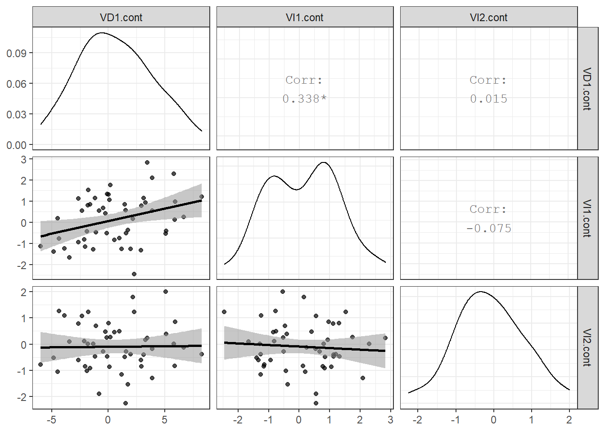
4.1.5.7 Analyse des données
# calcul de la régression multiple et stockage des résultats dans l’objet regmult1.test
regmult1.test <- lm(formula = VD1.cont ~ VI1.cont + VI2.cont,
data = my_data.regmult1)
# obtention des résultats de la régression linéaire multiple
## coefficients non-standardisés
summary(regmult1.test)##
## Call:
## lm(formula = VD1.cont ~ VI1.cont + VI2.cont, data = my_data.regmult1)
##
## Residuals:
## Min 1Q Median 3Q Max
## -5.2632 -2.1164 -0.3808 1.8615 6.6408
##
## Coefficients:
## Estimate Std. Error t value Pr(>|t|)
## (Intercept) 0.5084 0.4494 1.131 0.2636
## VI1.cont 0.9693 0.3908 2.481 0.0168 *
## VI2.cont 0.1477 0.4984 0.296 0.7682
## ---
## Signif. codes: 0 '***' 0.001 '**' 0.01 '*' 0.05 '.' 0.1 ' ' 1
##
## Residual standard error: 3.143 on 47 degrees of freedom
## Multiple R-squared: 0.116, Adjusted R-squared: 0.07835
## F-statistic: 3.083 on 2 and 47 DF, p-value: 0.05521##
## Call:
## lm(formula = VD1.cont ~ VI1.cont + VI2.cont, data = my_data.regmult1)
##
## Standardized Coefficients::
## (Intercept) VI1.cont VI2.cont
## 0.00000000 0.34115683 0.040762034.1.5.8 Graphique
# la droite représente la pente de l'effet de VI1.cont ajusté par l'effet de VI2.cat sur VD1.cont. La partie grisée autour de la droite représente l'intervalle de confiance à 95%
adjusted.slope.regmult1 <- as.data.frame(
effect(
term = "VI1.cont",
mod = regmult1.test))
ggplot(my_data.regmult1, aes(x = VI1.cont, y = VD1.cont)) +
geom_point(size = 3, alpha = 0.4) +
geom_ribbon(data = adjusted.slope.regmult1,
aes(x = VI1.cont, y = fit, ymin = lower, ymax = upper),
fill="grey", alpha = 0.8) +
geom_line(data = adjusted.slope.regmult1,
aes(x = VI1.cont , y = fit),
color = "black", size = 1) +
ylab("VD1.cont") + xlab("VI1.cont") +
theme_bw() +
theme(axis.title.y = element_text(size = 14, hjust = 0.5, face="bold"),
axis.title.x = element_text(face="bold", size = 14, hjust = 0.5))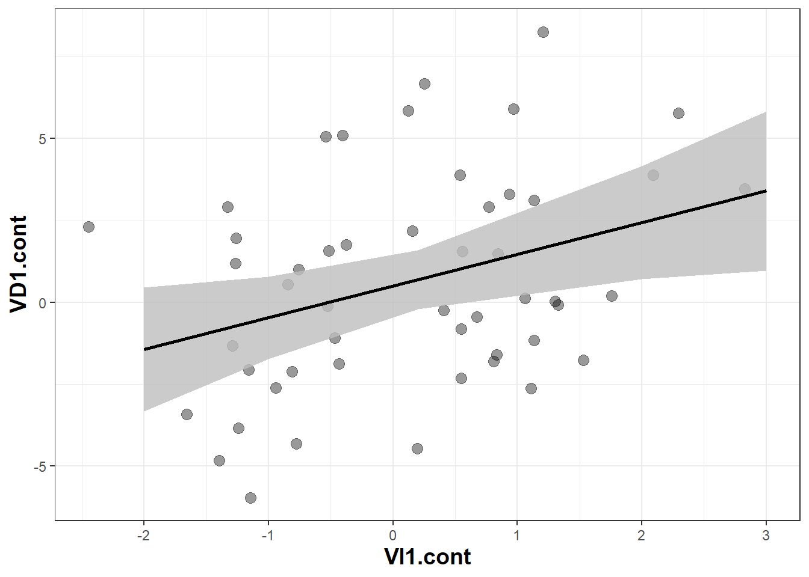
4.1.5.9 Interpretation
[1] “VI1.cont est significativement associé à VD1.cont même si l’on ajuste par l’effet de VI2.cont (b = 0.969, SE = 0.391, beta = 0.341, p = 0.017, N = 50)”
4.1.6 ANCOVA
ATTENTION : si votre variable indépendante principale est Numérique OU que vous faites une hypothèse d’interaction entre votre VI principale catégorielle et une autre covariable, reportez-vous à la section suivante Régression linéaire multiple 2.
Dans le cas contraire (votre VI principale est catégorielle ET vous ne faites pas d’hypothèse d’interaction entre votre VI catégorielle et une covariable), utilisez une ANCOVA décrite dans cette vignette.
4.1.6.1 Type de variables
Variable Dépendante : Numérique
Variable indépendante principale: Catégorielle (2 catégories ou +)
Autres variables indépendantes (covariables) : Numériques / Catégorielles
4.1.6.2 Packages nécessaires
4.1.6.3 Données réelles
# choisissez la ligne appropriée au format de votre fichier de données.
# si vos données sont dans un fichier .txt
my_data.ancova <- read.delim(file.choose())
# si vos données sont dans un fichier .csv
my_data.ancova <- read.csv(file.choose())
# si vos données sont dans un fichier .xls / .xlsx
my_data.ancova <- read_excel(file.choose())
# une fois vos données chargées, vous pouvez renommer vos noms de colonnes afin qu'ils correspondent à ceux utilisés dans le code ci-dessous
# Si vous ne souhaitez pas renommer vos noms de colonnes, sautez cette étape mais adaptez le code des parties suivantes en lui indiquant les noms de colonnes de vos données.
# On crée une nouvelle colonne pour votre variable dépendante continue (remplacez 'votre.nom.de.colonne' par le nom approprié)
my_data.ancova$VD1.cont <- my_data.ancova$'votre.nom.de.colonne'
# On crée une nouvelle colonne pour votre variable indépendante catégorielle (remplacez 'votre.nom.de.colonne' par le nom approprié)
my_data.ancova$VI1.cat <- my_data.ancova$'votre.nom.de.colonne'
# On crée une nouvelle colonne pour votre variable indépendante continue (remplacez 'votre.nom.de.colonne' par le nom approprié)
my_data.ancova$VI2.cont <- my_data.ancova$'votre.nom.de.colonne'4.1.6.4 Données fictives
set.seed(4321)
ancova <- rnorm(200)
my_data.ancova <- data.frame(
VD1.cont = rnorm(200) + 0.8*ancova,
VI1.cat = rep(c(1, 2), each = 100),
VI2.cont = c(rnorm(200)+0.8*ancova))
# on renomme les catégories de VI1.cat pour que les résultats soient plus lisibles
my_data.ancova$VI1.cat <- fct_recode(factor(my_data.ancova$VI1.cat),
"Groupe 1" = "1",
"Groupe 2" = "2") 4.1.6.5 Déclaration du type de variables
4.1.6.6 Inspection des données
## Les graphiques situés sur la diagonale représentent la distribution des variables
## Les graphiques (ou les valeurs de corrélation) situés au dessus et en dessous de la diagonale représentent l'association entre les différentes variables
ggpairs(my_data.ancova,
lower = list(continuous = wrap("smooth", alpha = 0.7), combo = "box_no_facet"),
upper = list(combo = "facetdensity", discrete = "facetbar"),
mapping = aes(alpha = 0.8)) + theme_bw()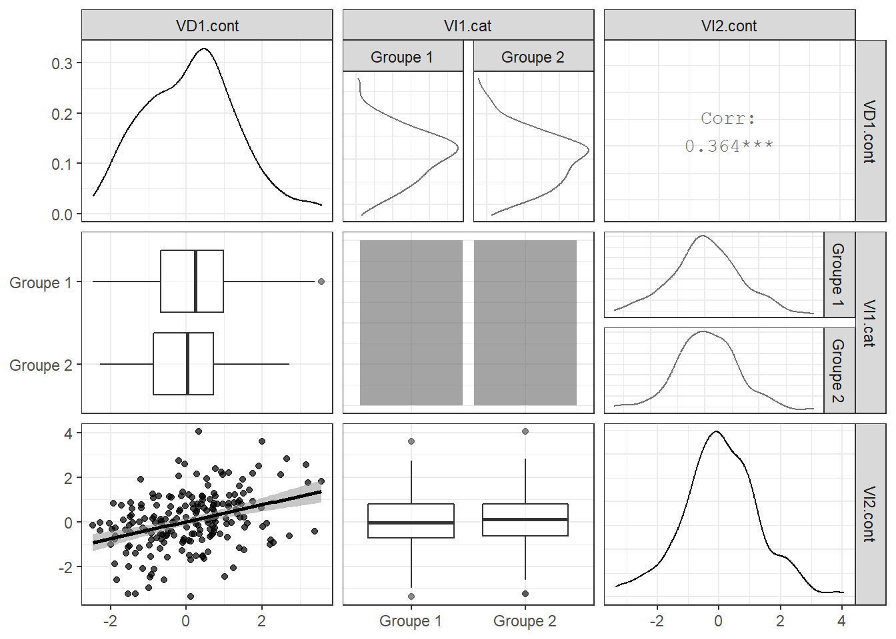
4.1.6.7 Analyse des données
# calcul de l'ANCOVA et stockage des résultats dans l’objet ancova.test
ancova.test <- lm(formula = VD1.cont ~ VI1.cat + VI2.cont,
data = my_data.ancova)
# calcul des moyennes marginales estimées et écarts types pour chaque modalité de VI1.cat
description.anovafact <- emmeans(ancova.test, ~VI1.cat)
# calcul de la taille d'effet de VI1.cat sur VD1.cont (SMD/d de cohen ajusté par VI2.cont)
cohensd.ancova <- esc_mean_se(
grp1m = summary(description.anovafact)$emmean[1],
grp1se = summary(description.anovafact)$SE[1],
grp1n = nrow(subset(my_data.ancova, VI1.cat == "Groupe 1")),
grp2m = summary(description.anovafact)$emmean[2],
grp2se = summary(description.anovafact)$SE[2],
grp2n = nrow(subset(my_data.ancova, VI1.cat == "Groupe 2")),
es.type = "d")
# obtention des différentes moyennes/écarts-types
description.anovafact## VI1.cat emmean SE df lower.CL upper.CL
## Groupe 1 0.2580 0.113 197 0.0359 0.480
## Groupe 2 -0.0369 0.113 197 -0.2591 0.185
##
## Confidence level used: 0.95## Anova Table (Type II tests)
##
## Response: VD1.cont
## Sum Sq Df F value Pr(>F)
## VI1.cat 4.349 1 3.4289 0.06556 .
## VI2.cont 39.391 1 31.0605 8.15e-08 ***
## Residuals 249.838 197
## ---
## Signif. codes: 0 '***' 0.001 '**' 0.01 '*' 0.05 '.' 0.1 ' ' 1##
## Effect Size Calculation for Meta Analysis
##
## Conversion: mean and se to effect size d
## Effect Size: 0.2632
## Standard Error: 0.1420
## Variance: 0.0202
## Lower CI: -0.0152
## Upper CI: 0.5416
## Weight: 49.57074.1.6.8 Graphique
# les barres d'erreurs représentent l'erreur standard.
adjusted.means.ancova <- as.data.frame(
effect(
term = "VI1.cat",
mod = ancova.test))
ggplot(adjusted.means.ancova,
aes(x = VI1.cat, y = fit, fill = VI1.cat)) +
geom_hline(aes(yintercept = 0)) +
geom_bar(stat = "identity", color = "black", alpha = 0.7) +
geom_errorbar(aes(ymin = fit - se,
ymax = fit + se),
width = .1, col = "black") +
ylab("VD1.cont") + xlab("VI1.cat") +
theme_bw() +
theme(axis.title.y = element_text(size = 14, hjust = 0.5, face = "bold"),
axis.title.x = element_text(face = "bold", size = 14, hjust = 0.5)) +
scale_fill_grey(start = 0.9, end = 0.5) +
guides(fill = FALSE)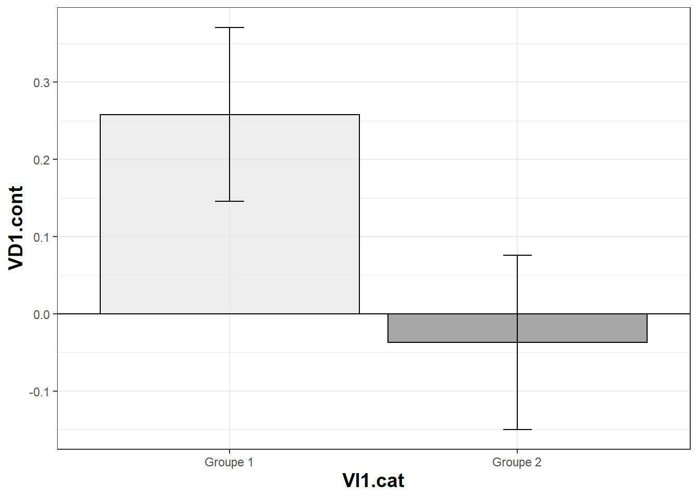
4.1.6.9 Interpretation
[1] “Les scores obtenus par le groupe 1 (moyenne groupe 1 = 0.258, SE groupe 1 = 0.113, N groupe 1 = 100) et le groupe 2 (moyenne groupe 2 = -0.037, SE groupe 2 = 0.113, N groupe 2 = 100) diffèrent de façon marginale lorsque la diférence est ajustée par l’effet de VI2.cont (F = 3.429, p = 0.066, d de cohen = 0.263)”
4.1.7 Regression linéaire multiple 2
ATTENTION : si votre variable indépendante principale est catégorielle ET que vous ne faites pas d’hypothèse d’interaction entre cette VI principale catégorielle et une autre covariable, reportez-vous à la section précédente MANCOVA.
Dans le cas contraire (votre VI principale est Numérique OU vous faites une hypothèse d’interaction entre votre VI catégorielle et une covariable), utilisez une régression linéaire décrite dans cette vignette.
4.1.7.1 Type de variables
Variable Dépendante : Numérique
Variable indépendante principale: Numérique
Autres variables indépendantes : Numériques / Catégorielles
4.1.7.2 Packages nécessaires
4.1.7.3 Données réelles
# choisissez la ligne appropriée au format de votre fichier de données.
# si vos données sont dans un fichier .txt
my_data.regmult2 <- read.delim(file.choose())
# si vos données sont dans un fichier .csv
my_data.regmult2 <- read.csv(file.choose())
# si vos données sont dans un fichier .xls / .xlsx
my_data.regmult2 <- read_excel(file.choose())
# une fois vos données chargées, vous pouvez renommer vos noms de colonnes afin qu'ils correspondent à ceux utilisés dans le code ci-dessous
# Si vous ne souhaitez pas renommer vos noms de colonnes, sautez cette étape mais adaptez le code des parties suivantes en lui indiquant les noms de colonnes de vos données.
# On crée une nouvelle colonne pour votre variable dépendante continue (remplacez 'votre.nom.de.colonne' par le nom approprié)
my_data.regmult2$VD1.cont <- my_data.regmult2$'votre.nom.de.colonne'
# On crée une nouvelle colonne pour votre variable indépendante continue (remplacez 'votre.nom.de.colonne' par le nom approprié)
my_data.regmult2$VI1.cont <- my_data.regmult2$'votre.nom.de.colonne'
# On crée une nouvelle colonne pour votre variable indépendante catégorielle (remplacez 'votre.nom.de.colonne' par le nom approprié)
my_data.regmult2$VI2.cat <- my_data.regmult2$'votre.nom.de.colonne'4.1.7.4 Données fictives
4.1.7.5 Déclaration du type de variables
4.1.7.6 Inspection des données
## Les graphiques situés sur la diagonale représentent la distribution des variables
## Les graphiques (ou les valeurs de corrélation) situés au dessus et en dessous de la diagonale représentent l'association entre les différentes variables
ggpairs(my_data.regmult2,
lower = list(continuous = wrap("smooth", alpha = 0.7), combo = "box_no_facet"),
upper = list(combo = "facetdensity", discrete = "facetbar"),
mapping = aes(alpha = 0.8)) + theme_bw()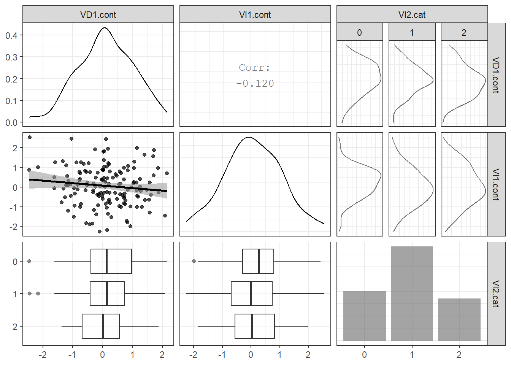
4.1.7.7 Analyse des données
# calcul de la régression linéaire multiple et stockage des résultats dans l’objet regmult2.test
regmult2.test <- lm(formula = VD1.cont ~ VI1.cont + VI2.cat,
data = my_data.regmult2)
# obtention des résultats de la régression linéaire multiple
## coefficients non-standardisés
summary(regmult2.test)##
## Call:
## lm(formula = VD1.cont ~ VI1.cont + VI2.cat, data = my_data.regmult2)
##
## Residuals:
## Min 1Q Median 3Q Max
## -2.54914 -0.62000 0.01413 0.57802 2.03373
##
## Coefficients:
## Estimate Std. Error t value Pr(>|t|)
## (Intercept) 0.19946 0.14830 1.345 0.181
## VI1.cont -0.11666 0.07727 -1.510 0.133
## VI2.cat1 -0.10452 0.18289 -0.572 0.569
## VI2.cat2 -0.16059 0.21770 -0.738 0.462
##
## Residual standard error: 0.932 on 146 degrees of freedom
## Multiple R-squared: 0.01828, Adjusted R-squared: -0.001887
## F-statistic: 0.9064 on 3 and 146 DF, p-value: 0.4396##
## Call:
## lm(formula = VD1.cont ~ VI1.cont + VI2.cat, data = my_data.regmult2)
##
## Standardized Coefficients::
## (Intercept) VI1.cont VI2.cat1 VI2.cat2
## 0.00000000 -0.12437621 -0.05631223 -0.072452624.1.7.8 Graphique
# la droite représente la pente de l'effet de VI1.cont ajusté par l'effet de VI2.cat sur VD1.cont. La partie grisée autour de la droite représente l'intervalle de confiance à 95%
adjusted.slope.regmult2 <- as.data.frame(
effect(
term = "VI1.cont",
mod = regmult2.test))
ggplot(my_data.regmult2, aes(x = VI1.cont, y = VD1.cont)) +
geom_point(size = 3, alpha = 0.4) +
geom_ribbon(data = adjusted.slope.regmult2,
aes(x = VI1.cont, y = fit, ymin = lower, ymax = upper),
fill = "grey", alpha = 0.8) +
geom_line(data = adjusted.slope.regmult2,
aes(x = VI1.cont , y = fit),
color = "black", size = 1) +
ylab("VD1.cont") + xlab("VI1.cont") +
theme_bw() +
theme(axis.title.y = element_text(size = 14, hjust = 0.5, face = "bold"),
axis.title.x = element_text(face = "bold", size = 14, hjust = 0.5))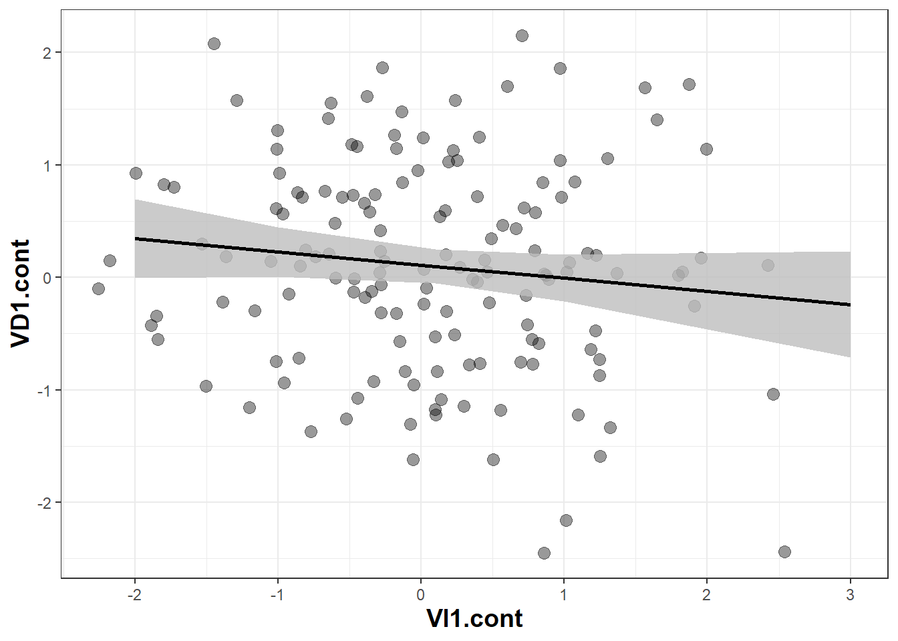
4.1.7.9 Interpretation
[1] “VI1.cont n’est pas significativement associée à VD1.cont lorsque l’on ajuste par l’effet de VI2.cat et VI3.cat (b = -0.117, SE = 0.077, beta = -0.124, p = 0.133, N = 150)”
4.2 Une seule VD catégorielle
4.2.1 Chi-deux 1
4.2.1.1 Type de variables
Variable Dépendante : Catégorielle (2 catégories)
Variable Indépendante : Catégorielle (2 catégories ou +)
4.2.1.3 Données réelles
# choisissez la ligne appropriée au format de votre fichier de données.
# si vos données sont dans un fichier .txt
my_data.chideux1 <- read.delim(file.choose())
# si vos données sont dans un fichier .csv
my_data.chideux1 <- read.csv(file.choose())
# si vos données sont dans un fichier .xls / .xlsx
my_data.chideux1 <- read_excel(file.choose())
# une fois vos données chargées, vous pouvez renommer vos noms de colonnes afin qu'ils correspondent à ceux utilisés dans le code ci-dessous
# Si vous ne souhaitez pas renommer vos noms de colonnes, sautez cette étape mais adaptez le code des parties suivantes en lui indiquant les noms de colonnes de vos données.
# On crée une nouvelle colonne pour votre variable dépendante catégorielle (remplacez 'votre.nom.de.colonne' par le nom approprié)
my_data.chideux1$VD1.cat <- my_data.chideux1$'votre.nom.de.colonne'
# On crée une nouvelle colonne pour votre variable indépendante catégorielle (remplacez 'votre.nom.de.colonne' par le nom approprié)
my_data.chideux1$VI1.cat <- my_data.chideux1$'votre.nom.de.colonne'4.2.1.4 Données fictives
set.seed(4321)
my_data.chideux1 <- data.frame(
VD1.cat = rbinom(55, 1, 0.5) + 1,
VI1.cat = rbinom(55, 1, 0.3) + 1)
# on renomme les catégories de VD1.cat et VI1.cat pour que les résultats soient plus lisibles
my_data.chideux1$VD1.cat <- fct_recode(factor(my_data.chideux1$VD1.cat),
"Positif" = "1",
"Negatif" = "2")
my_data.chideux1$VI1.cat <- fct_recode(factor(my_data.chideux1$VI1.cat),
"Groupe 1" = "1",
"Groupe 2" = "2") 4.2.1.5 Déclaration du type de variables
4.2.1.6 Inspection des données
## Les graphiques situés sur la diagonale représentent la distribution des variables
## Les graphiques (ou les valeurs de corrélation) situés au dessus et en dessous de la diagonale représentent l'association entre les différentes variables
ggpairs(my_data.chideux1,
lower = list(continuous = wrap("smooth", alpha = 0.7), combo = "box_no_facet"),
upper = list(combo = "facetdensity", discrete = "facetbar"),
mapping = aes(alpha = 0.8)) + theme_bw()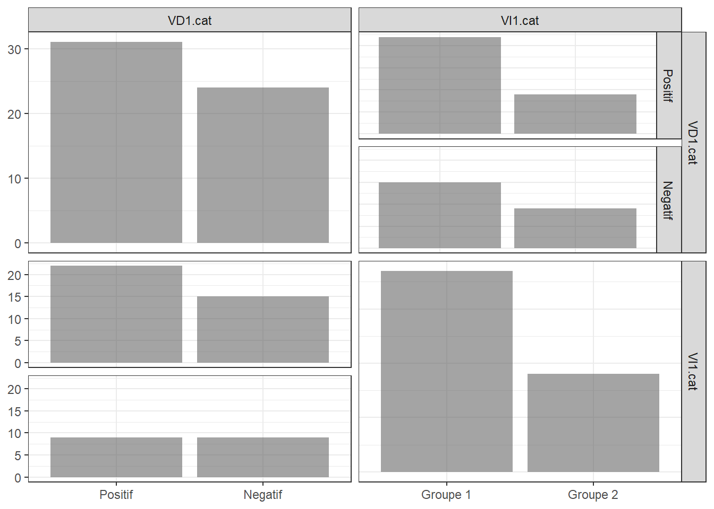
4.2.1.7 Analyse des données
# on range les données sous forme de table
my_table.chideux1 <- with(my_data.chideux1, table(VI1.cat, VD1.cat))
# calcul du test de chi-deux et stockage des résultats dans l’objet chideux1.test
# la correction de Yates peut être obtenue en indiquant l'argument "correct = TRUE"
chideux1.test <- chisq.test(my_table.chideux1, correct = FALSE)
# calcul des proportions de VD1.cat dans chaque modalité de VI1.cat
description.chideux1 <- data.frame(my_table.chideux1) %>%
group_by(VI1.cat) %>%
summarise(proportion = Freq / sum(Freq),
VD1.cat = VD1.cat)
# calcul de la taille d'effet de VI1.cat sur VD1.cat (odds ratio)
odds.ratio.chideux1 <- (my_table.chideux1[1,1]/my_table.chideux1[1,2])/(my_table.chideux1[2,1]/my_table.chideux1[2,2])
# obtention des résultats tableau de contigence et des proportions
my_table.chideux1; description.chideux1## VD1.cat
## VI1.cat Positif Negatif
## Groupe 1 22 15
## Groupe 2 9 9## # A tibble: 4 x 3
## # Groups: VI1.cat [2]
## VI1.cat proportion VD1.cat
## <fct> <dbl> <fct>
## 1 Groupe 1 0.595 Positif
## 2 Groupe 1 0.405 Negatif
## 3 Groupe 2 0.5 Positif
## 4 Groupe 2 0.5 Negatif##
## Pearson's Chi-squared test
##
## data: my_table.chideux1
## X-squared = 0.44055, df = 1, p-value = 0.5069## [1] 1.4666674.2.1.8 Graphique
ggplot(my_data.chideux1, aes(x = factor(VI1.cat), fill = VD1.cat)) +
geom_bar(stat = "count", position = position_dodge2()) +
scale_fill_grey(start = 0.8, end = 0.5) +
ylab("Nombre de personnes") + xlab("VI1.cat") +
theme_bw() +
theme(axis.title.y = element_text(size = 14, hjust = 0.5, face = "bold"),
axis.title.x = element_text(face = "bold", size = 14, hjust = 0.5))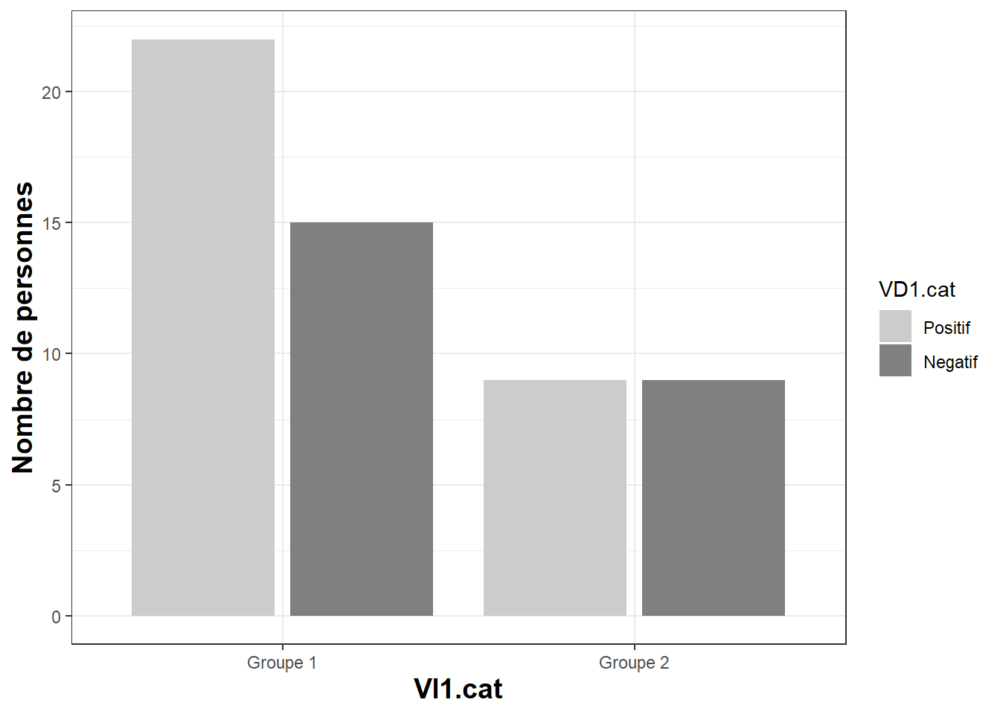
4.2.1.9 Interpretation
[1] “La proportion de cas ayant une modalité de VD1.cat égale à 1 (positif) ne diffère pas statistiquement entre les groupes 1 et 2 (groupe 1 = 59.5%, groupe 2 = 50%, X² = 0.441, p = 0.507, Odds Ratio = 1.467)”
4.2.2 Régression logistique binaire
4.2.2.1 Type de variables
Variable Dépendante : Catégorielle (2 catégories)
Variable Indépendante : Numérique
4.2.2.2 Packages nécessaires
4.2.2.3 Données réelles
# choisissez la ligne appropriée au format de votre fichier de données.
# si vos données sont dans un fichier .txt
my_data.reglog <- read.delim(file.choose())
# si vos données sont dans un fichier .csv
my_data.reglog <- read.csv(file.choose())
# si vos données sont dans un fichier .xls / .xlsx
my_data.reglog <- read_excel(file.choose())
# une fois vos données chargées, vous pouvez renommer vos noms de colonnes afin qu'ils correspondent à ceux utilisés dans le code ci-dessous
# Si vous ne souhaitez pas renommer vos noms de colonnes, sautez cette étape mais adaptez le code des parties suivantes en lui indiquant les noms de colonnes de vos données.
# On crée une nouvelle colonne pour votre variable dépendante catégorielle (remplacez 'votre.nom.de.colonne' par le nom approprié)
my_data.reglog$VD1.cat <- my_data.reglog$'votre.nom.de.colonne'
# On crée une nouvelle colonne pour votre variable indépendante continue (remplacez 'votre.nom.de.colonne' par le nom approprié)
my_data.reglog$VI1.cont <- my_data.reglog$'votre.nom.de.colonne'4.2.2.4 Données fictives
set.seed(4321)
my_data.reglog <- data.frame(
VD1.cat = rep(c(1, 2), each = 80),
VI1.cont = c(rnorm(80) + 0.25, rnorm(80) - 0.25))
# on renomme les catégories de VD1.cat pour que les résultats soient plus lisibles
my_data.reglog$VD1.cat <- fct_recode(factor(my_data.reglog$VD1.cat),
"Positif" = "1",
"Negatif" = "2") 4.2.2.5 Déclaration du type de variables
4.2.2.6 Inspection des données
## Les graphiques situés sur la diagonale représentent la distribution des variables
## Les graphiques (ou les valeurs de corrélation) situés au dessus et en dessous de la diagonale représentent l'association entre les différentes variables
ggpairs(my_data.reglog,
lower = list(continuous = wrap("smooth", alpha = 0.7), combo = "box_no_facet"),
upper = list(combo = "facetdensity", discrete = "facetbar"),
mapping = aes(alpha = 0.8)) + theme_bw()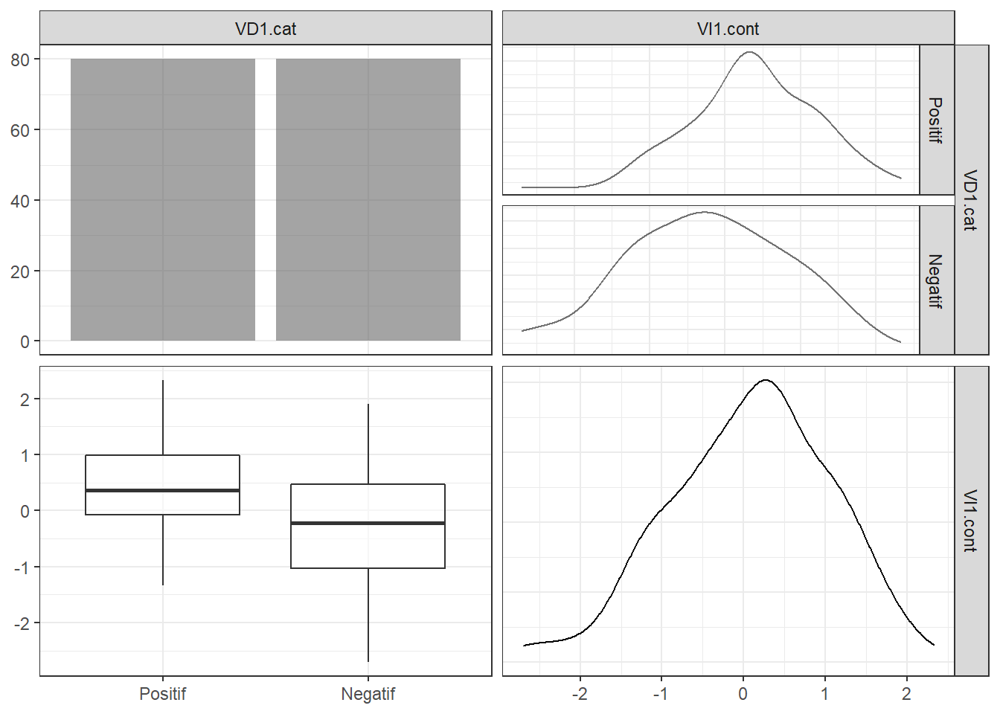
4.2.2.7 Analyse des données
# calcul de la régression logistique binaire et stockage des résultats dans l’objet reglog.test
reglog.test <- glm(formula = VD1.cat ~ VI1.cont,
family= "binomial",
data = my_data.reglog)
# calcul de la taille d'effet de VD1.cont sur VI1.cat (odds ratio)
odds.ratio.reglog <- exp(coef(reglog.test))[2]
# obtention des résultats de la régression logistique binaire
summary(reglog.test)##
## Call:
## glm(formula = VD1.cat ~ VI1.cont, family = "binomial", data = my_data.reglog)
##
## Deviance Residuals:
## Min 1Q Median 3Q Max
## -1.64933 -1.08682 -0.05088 1.07827 1.77801
##
## Coefficients:
## Estimate Std. Error z value Pr(>|z|)
## (Intercept) 0.06646 0.16855 0.394 0.693
## VI1.cont -0.74510 0.18973 -3.927 8.6e-05 ***
## ---
## Signif. codes: 0 '***' 0.001 '**' 0.01 '*' 0.05 '.' 0.1 ' ' 1
##
## (Dispersion parameter for binomial family taken to be 1)
##
## Null deviance: 221.81 on 159 degrees of freedom
## Residual deviance: 203.78 on 158 degrees of freedom
## AIC: 207.78
##
## Number of Fisher Scoring iterations: 4## VI1.cont
## 0.47468634.2.2.8 Graphique
# la droite représente la pente de l'effet de VI1.cont ajusté sur VD1.cat. La partie grisée autour de la droite représente l'intervalle de confiance à 95%
crude.slope.reglog <- as.data.frame(
effect(
term = "VI1.cont",
mod = reglog.test,
data = my_data.reglog))
ggplot() +
geom_ribbon(data=crude.slope.reglog,
aes(x=VI1.cont, y=fit, ymin=lower, ymax=upper), fill="grey", alpha=0.8) +
geom_line(data=crude.slope.reglog,
aes(x=VI1.cont, y=fit)) +
ylab("Probabilité que VD1.cat soit négatif") + xlab("VI1.cont") +
theme_bw() +
theme(axis.title.y = element_text(size = 14, hjust = 0.5, face="bold"),
axis.title.x = element_text(face="bold", size = 14, hjust = 0.5))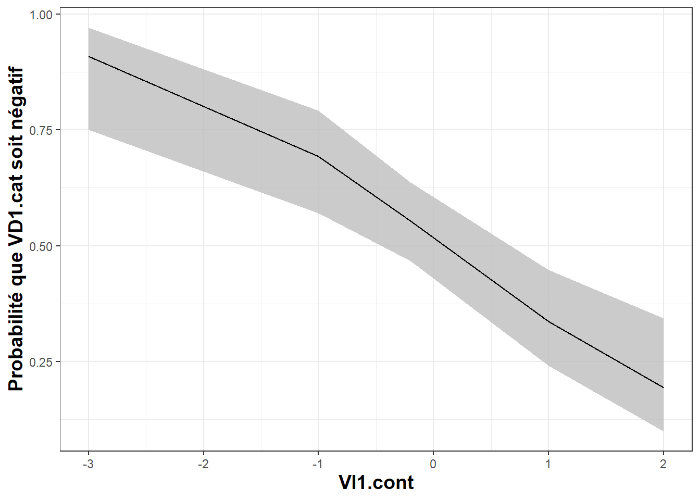
4.2.2.9 Interpretation
[1] “Les valeurs de VI1.cont sont liées à celles de VD1.cat: plus la valeur de VI1.cont est élevée, plus la probabilité que VD1.cat soit négatif est faible (b = -0.745, SE = 0.19, Odds Ratio = 0.475, p = 8.6e-05)”
4.2.3 Régression logistique binaire multiple 1
4.2.3.1 Type de variables
Variable Dépendante : Catégorielle (2 catégories)
Variables Indépendantes : Catégorielles (2 catégories ou +)
4.2.3.2 Packages nécessaires
4.2.3.3 Données réelles
# choisissez la ligne appropriée au format de votre fichier de données.
# si vos données sont dans un fichier .txt
my_data.reglog.mult1 <- read.delim(file.choose())
# si vos données sont dans un fichier .csv
my_data.reglog.mult1 <- read.csv(file.choose())
# si vos données sont dans un fichier .xls / .xlsx
my_data.reglog.mult1 <- read_excel(file.choose())
# une fois vos données chargées, vous pouvez renommer vos noms de colonnes afin qu'ils correspondent à ceux utilisés dans le code ci-dessous
# Si vous ne souhaitez pas renommer vos noms de colonnes, sautez cette étape mais adaptez le code des parties suivantes en lui indiquant les noms de colonnes de vos données.
# On crée une nouvelle colonne pour votre variable dépendante catégorielle (remplacez 'votre.nom.de.colonne' par le nom approprié)
my_data.reglog.mult1$VD1.cat <- my_data.reglog.mult1$'votre.nom.de.colonne'
# On crée une nouvelle colonne pour vos variables indépendantes catégorielles(remplacez 'votre.nom.de.colonne' par les noms appropriés)
my_data.reglog.mult1$VI1.cat <- my_data.reglog.mult1$'votre.nom.de.colonne'
my_data.reglog.mult1$VI2.cat <- my_data.reglog.mult1$'votre.nom.de.colonne'4.2.3.4 Données fictives
set.seed(4321)
my_data.reglog.mult1 <- data.frame(
VD1.cat = rbinom(200, 1, 0.5) + 1,
VI1.cat = rbinom(200, 1, 0.3) + 1,
VI2.cat = rbinom(200, 1, 0.3) + 1)
# On renomme les catégories de VD1.cat, VI1.cat et VI2.cat pour que les résultats soient plus lisibles
my_data.reglog.mult1$VD1.cat <- fct_recode(factor(my_data.reglog.mult1$VD1.cat),
"Positif" = "1",
"Negatif" = "2")
my_data.reglog.mult1$VI1.cat <- fct_recode(factor(my_data.reglog.mult1$VI1.cat),
"Groupe 1" = "1",
"Groupe 2" = "2")
my_data.reglog.mult1$VI2.cat <- fct_recode(factor(my_data.reglog.mult1$VI2.cat),
"Modalite 1" = "1",
"Modalite 2" = "2") 4.2.3.5 Déclaration du type de variables
4.2.3.6 Inspection des données
## Les graphiques situés sur la diagonale représentent la distribution des variables
## Les graphiques (ou les valeurs de corrélation) situés au dessus et en dessous de la diagonale représentent l'association entre les différentes variables
ggpairs(my_data.reglog.mult1,
lower = list(continuous = wrap("smooth", alpha = 0.7), combo = "box_no_facet"),
upper = list(combo = "facetdensity", discrete = "facetbar"),
mapping = aes(alpha = 0.8)) + theme_bw()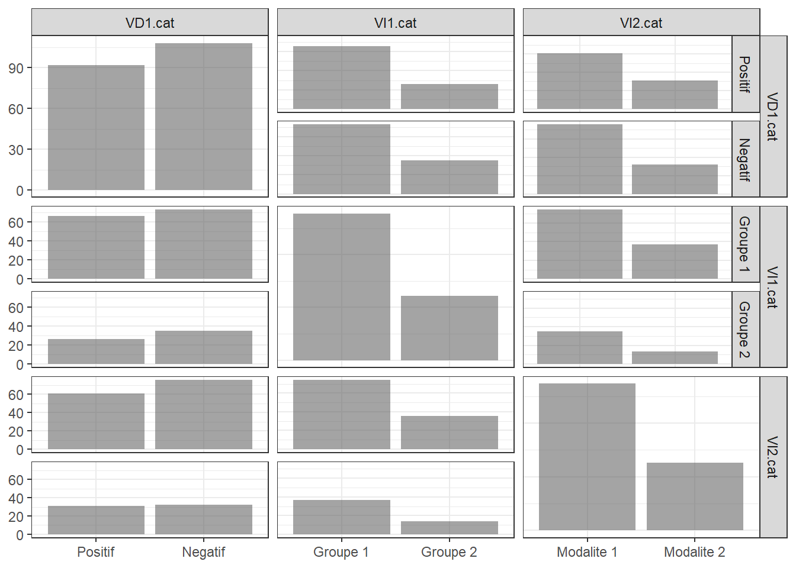
4.2.3.7 Analyse des données
# calcul du test de régression logistique et stockage des résultats dans l’objet reglog.mult1.test
reglog.mult1.test <- glm(formula = VD1.cat ~ VI1.cat*VI2.cat,
family = "binomial",
contrasts = list(
VI1.cat = "contr.sum",
VI2.cat = "contr.sum"),
data = my_data.reglog.mult1)
# calcul des proportions de VD1.cat dans chaque modalité de VI1.cat et VI2.cat
description.reglog.mult1 <- my_data.reglog.mult1 %>%
group_by(VI1.cat, VI2.cat, VD1.cat) %>%
summarise(N=n()) %>%
mutate(proportion = N / sum(N))
# calcul de la taille d'effet de VI1.cat sur VD1.cat au sein de chaque modalité de VI2.cat (odds ratio)
posthoc.reglog.mult1 <- emmeans(reglog.mult1.test, consec ~ VI1.cat | VI2.cat, type="response")
# obtention des proportions
description.reglog.mult1## # A tibble: 8 x 5
## # Groups: VI1.cat, VI2.cat [4]
## VI1.cat VI2.cat VD1.cat N proportion
## <fct> <fct> <fct> <int> <dbl>
## 1 Groupe 1 Modalite 1 Positif 41 0.441
## 2 Groupe 1 Modalite 1 Negatif 52 0.559
## 3 Groupe 1 Modalite 2 Positif 25 0.543
## 4 Groupe 1 Modalite 2 Negatif 21 0.457
## 5 Groupe 2 Modalite 1 Positif 20 0.455
## 6 Groupe 2 Modalite 1 Negatif 24 0.545
## 7 Groupe 2 Modalite 2 Positif 6 0.353
## 8 Groupe 2 Modalite 2 Negatif 11 0.647# obtention des résultats de la régression logistique binaire multiple
Anova(reglog.mult1.test, type = 3)## Analysis of Deviance Table (Type III tests)
##
## Response: VD1.cat
## LR Chisq Df Pr(>Chisq)
## VI1.cat 1.11427 1 0.2912
## VI2.cat 0.00029 1 0.9864
## VI1.cat:VI2.cat 1.48152 1 0.2235# obtention des tailles d'effet (odds ratio)
# modalite 1
summary(posthoc.reglog.mult1)$contrasts$odds.ratio[1]## [1] 0.9461538## [1] 2.182544.2.3.8 Graphique
ggplot(subset(description.reglog.mult1, VD1.cat == "Positif"),
aes(x = VI1.cat, y = proportion, fill = VI1.cat)) +
geom_bar(stat = "identity", position=position_dodge2()) +
facet_wrap(~VI2.cat) +
scale_fill_grey(start = 0.8, end = 0.5) +
ylab("Proportion de personnes ayant\n un score positif") + xlab("VI1.cat") +
theme_bw() +
theme(axis.title.y = element_text(size = 14, hjust = 0.5, face = "bold"),
axis.title.x = element_text(face = "bold", size = 14, hjust = 0.5)) +
guides(fill = FALSE)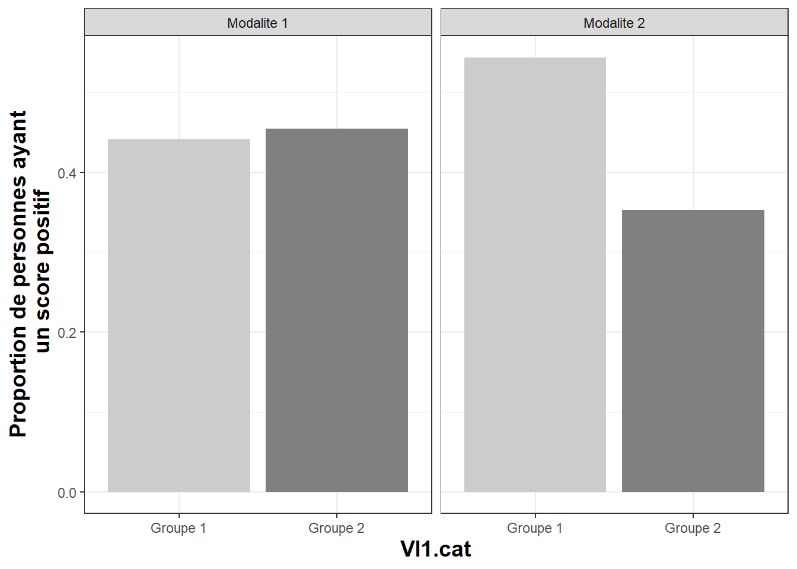
4.2.3.9 Interpretation
[1] “La différence de proportion de cas positifs entre les groupes ne diffère pas statistiquement entre la modalité 1 (groupe 1 = 44.1%, groupe 2 = 45.5%, Odds Ratio = 0.946) et la modalité 2 de VI2.cat (groupe 2 = 54.3%, groupe 2 = 35.3%, Odds Ratio = 2.183; X² = 1.482, p = 0.224)”
4.2.4 Régression logistique binaire multiple 2
4.2.4.1 Type de variables
Variable Dépendante : Catégorielle (2 catégories)
Variables Indépendantes : Numériques
4.2.4.3 Données réelles
# choisissez la ligne appropriée au format de votre fichier de données.
# si vos données sont dans un fichier .txt
my_data.reglog.mult2 <- read.delim(file.choose())
# si vos données sont dans un fichier .csv
my_data.reglog.mult2 <- read.csv(file.choose())
# si vos données sont dans un fichier .xls / .xlsx
my_data.reglog.mult2 <- read_excel(file.choose())
# une fois vos données chargées, vous pouvez renommer vos noms de colonnes afin qu'ils correspondent à ceux utilisés dans le code ci-dessous
# Si vous ne souhaitez pas renommer vos noms de colonnes, sautez cette étape mais adaptez le code des parties suivantes en lui indiquant les noms de colonnes de vos données.
# On crée une nouvelle colonne pour votre variable dépendante catégorielle (remplacez 'votre.nom.de.colonne' par le nom approprié)
my_data.reglog.mult2$VD1.cat <- my_data.reglog.mult2$'votre.nom.de.colonne'
# On crée une nouvelle colonne pour votre variable indépendante continue (remplacez 'votre.nom.de.colonne' par le nom approprié)
my_data.reglog.mult2$VI1.cont <- my_data.reglog.mult2$'votre.nom.de.colonne'4.2.4.4 Données fictives
set.seed(4321)
my_data.reglog.mult2 <- data.frame(
VD1.cat = rbinom(25, 1, 0.7) + 1,
VI1.cont = rnorm(25),
VI2.cont = rnorm(25))
# on renomme les catégories de VD1.cat pour que les résultats soient plus lisibles
my_data.reglog.mult2$VD1.cat <- fct_recode(factor(my_data.reglog.mult2$VD1.cat),
"Positif" = "1",
"Negatif" = "2") 4.2.4.5 Déclaration du type de variables
4.2.4.6 Inspection des données
## Les graphiques situés sur la diagonale représentent la distribution des variables
## Les graphiques (ou les valeurs de corrélation) situés au dessus et en dessous de la diagonale représentent l'association entre les différentes variables
ggpairs(my_data.reglog.mult2,
lower = list(continuous = wrap("smooth", alpha = 0.7), combo = "box_no_facet"),
upper = list(combo = "facetdensity", discrete = "facetbar"),
mapping = aes(alpha = 0.8)) + theme_bw()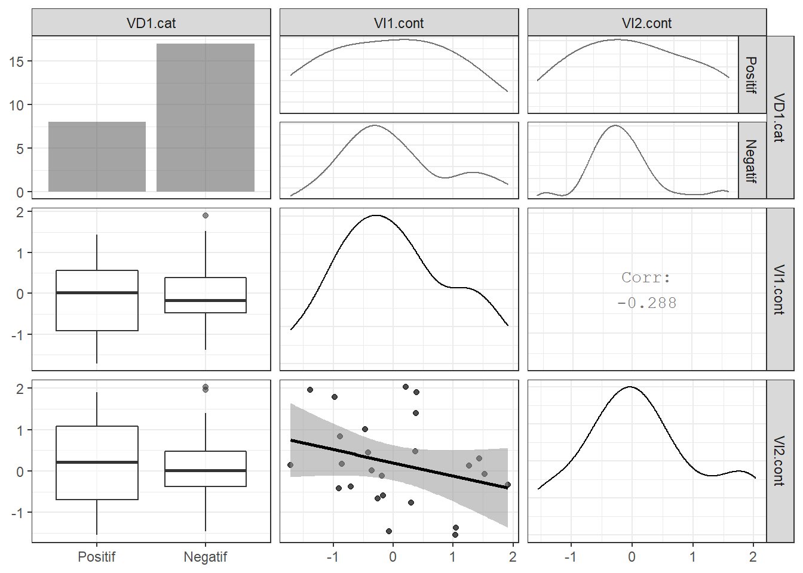
4.2.4.7 Analyse des données
# calcul de la régression logistique binaire multiple et stockage des résultats dans l’objet reglog.mult2.test
reglog.mult2.test <- glm(formula = VD1.cat ~ VI1.cont + VI2.cont,
family= "binomial",
data = my_data.reglog.mult2)
# calcul de la taille d'effet de VI1.cont sur VD1.cat (odds ratio ajusté par VI2.cont)
odds.ratio.reglog.mult2 <- exp(coef(reglog.mult2.test))[2]
# obtention des résultats de la régression logistique binaire multiple
summary(reglog.mult2.test)##
## Call:
## glm(formula = VD1.cat ~ VI1.cont + VI2.cont, family = "binomial",
## data = my_data.reglog.mult2)
##
## Deviance Residuals:
## Min 1Q Median 3Q Max
## -1.6190 -1.4139 0.8582 0.8977 0.9867
##
## Coefficients:
## Estimate Std. Error z value Pr(>|z|)
## (Intercept) 0.76151 0.44031 1.729 0.0837 .
## VI1.cont 0.17030 0.48817 0.349 0.7272
## VI2.cont -0.03048 0.43743 -0.070 0.9444
## ---
## Signif. codes: 0 '***' 0.001 '**' 0.01 '*' 0.05 '.' 0.1 ' ' 1
##
## (Dispersion parameter for binomial family taken to be 1)
##
## Null deviance: 31.343 on 24 degrees of freedom
## Residual deviance: 31.189 on 22 degrees of freedom
## AIC: 37.189
##
## Number of Fisher Scoring iterations: 4## VI1.cont
## 1.1856564.2.4.8 Graphique
# la droite représente la pente de l'effet de VI1.cont ajusté par l'effet de VI2.cont sur VD1.cat. La partie grisée autour de la droite représente l'intervalle de confiance à 95%
adjusted.slope.reglog.mult2 <- as.data.frame(
effect(
term = "VI1.cont",
mod = reglog.mult2.test,
data = my_data.reglog.mult2))
ggplot(adjusted.slope.reglog.mult2, aes(x = VI1.cont, y = fit)) +
geom_ribbon( aes(ymin = lower, ymax = upper), fill = "grey", alpha = 0.8) +
geom_line() +
ylab("Probabilité que VD1.cat soit négatif") + xlab("VI1.cont") +
theme_bw() +
theme(axis.title.y = element_text(size = 14, hjust = 0.5, face = "bold"),
axis.title.x = element_text(face = "bold", size = 14, hjust = 0.5))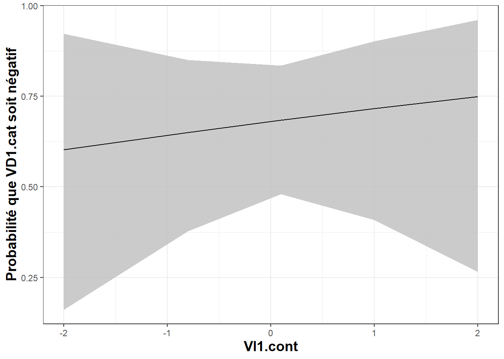
4.2.4.9 Interpretation
[1] “VI1.cont n’est pas lié à VD1.cat lorsque l’on ajuste par l’effet de VI2.cont (b = 0.17, SE = 0.488, Odds Ratio = 1.186, p = 0.727203)”
4.2.5 Régression logistique binaire multiple 3
4.2.5.1 Type de variables
Variable Dépendante : Catégorielle (2 catégories)
Variables Indépendantes : Numériques / Catégorielles
4.2.5.3 Données réelles
# choisissez la ligne appropriée au format de votre fichier de données.
# si vos données sont dans un fichier .txt
my_data.reglog.mult3 <- read.delim(file.choose())
# si vos données sont dans un fichier .csv
my_data.reglog.mult3 <- read.csv(file.choose())
# si vos données sont dans un fichier .xls / .xlsx
my_data.reglog.mult3 <- read_excel(file.choose())
# une fois vos données chargées, vous pouvez renommer vos noms de colonnes afin qu'ils correspondent à ceux utilisés dans le code ci-dessous
# Si vous ne souhaitez pas renommer vos noms de colonnes, sautez cette étape mais adaptez le code des parties suivantes en lui indiquant les noms de colonnes de vos données.
# On crée une nouvelle colonne pour votre variable dépendante continue (remplacez 'votre.nom.de.colonne' par le nom approprié)
my_data.reglog.mult3$VD1.cat <- my_data.reglog.mult3$'votre.nom.de.colonne'
# On crée une nouvelle colonne pour vos variables indépendantes continues (remplacez 'votre.nom.de.colonne' par les noms appropriés)
my_data.reglog.mult3$VI1.cont <- my_data.reglog.mult3$'votre.nom.de.colonne'
my_data.reglog.mult3$VI3.cont <- my_data.reglog.mult3$'votre.nom.de.colonne'
# On crée une nouvelle colonne pour votre variable indépendante catégorielle (remplacez 'votre.nom.de.colonne' par le nom approprié)
my_data.reglog.mult3$VI2.cat <- my_data.reglog.mult3$'votre.nom.de.colonne'4.2.5.4 Données fictives
set.seed(4321)
my_data.reglog.mult3 <- data.frame(
VD1.cat = rep(c(1,2), each = 150),
VI1.cont = c(rnorm(150) + 0.2, rnorm(150) - 0.2),
VI2.cat = rbinom(300, 1, 0.4) + 1,
VI3.cont = rnorm(300))
# on renomme les catégories de VD1.cat et VI2.cat pour que les résultats soient plus lisibles
my_data.reglog.mult3$VD1.cat <- fct_recode(factor(my_data.reglog.mult3$VD1.cat),
"Positif" = "1",
"Negatif" = "2")
my_data.reglog.mult3$VI2.cat <- fct_recode(factor(my_data.reglog.mult3$VI2.cat),
"Modalite 1" = "1",
"Modalite 2" = "2") 4.2.5.5 Déclaration du type de variables
my_data.reglog.mult3$VD1.cat <- factor(my_data.reglog.mult3$VD1.cat)
my_data.reglog.mult3$VI1.cont <- as.numeric(as.character(my_data.reglog.mult3$VI1.cont))
my_data.reglog.mult3$VI2.cat <- factor(my_data.reglog.mult3$VI2.cat)
my_data.reglog.mult3$VI3.cont <- as.numeric(as.character(my_data.reglog.mult3$VI3.cont))4.2.5.6 Inspection des données
## Les graphiques situés sur la diagonale représentent la distribution des variables
## Les graphiques (ou les valeurs de corrélation) situés au dessus et en dessous de la diagonale représentent l'association entre les différentes variables
ggpairs(my_data.reglog.mult3,
lower = list(continuous = wrap("smooth", alpha = 0.7), combo = "box_no_facet"),
upper = list(combo = "facetdensity", discrete = "facetbar"),
mapping = aes(alpha = 0.8)) + theme_bw()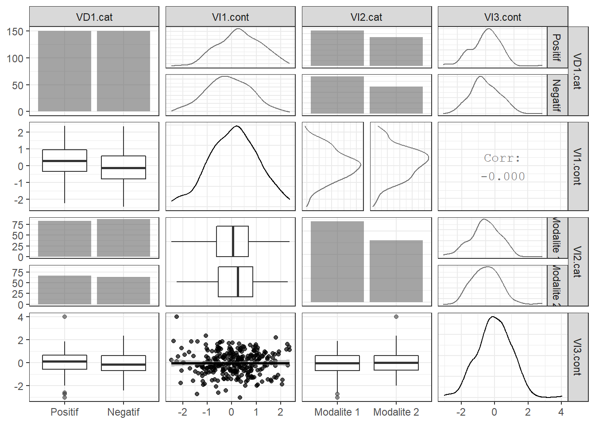
4.2.5.7 Analyse des données
# calcul de la régression logistique binaire multiple et stockage des résultats dans l’objet reglog.mult3.test
reglog.mult3.test <- glm(formula = VD1.cat ~ VI1.cont + VI2.cat + VI3.cont,
family= "binomial",
data = my_data.reglog.mult3)
# calcul de la taille d'effet de VI1.cont sur VD1. cat (odds ratio ajusté par VI2.cat et VI3.cont)
odds.ratio.reglog.mult3 <- exp(coef(reglog.mult3.test))[2]
# obtention des résultats de la régression logistique binaire multiple
summary(reglog.mult3.test)##
## Call:
## glm(formula = VD1.cat ~ VI1.cont + VI2.cat + VI3.cont, family = "binomial",
## data = my_data.reglog.mult3)
##
## Deviance Residuals:
## Min 1Q Median 3Q Max
## -1.6685 -1.1308 -0.0127 1.1321 1.6838
##
## Coefficients:
## Estimate Std. Error z value Pr(>|z|)
## (Intercept) 0.05500 0.15752 0.349 0.726970
## VI1.cont -0.47028 0.12607 -3.730 0.000191 ***
## VI2.catModalite 2 -0.03680 0.23982 -0.153 0.878030
## VI3.cont -0.06012 0.11884 -0.506 0.612939
## ---
## Signif. codes: 0 '***' 0.001 '**' 0.01 '*' 0.05 '.' 0.1 ' ' 1
##
## (Dispersion parameter for binomial family taken to be 1)
##
## Null deviance: 415.89 on 299 degrees of freedom
## Residual deviance: 400.56 on 296 degrees of freedom
## AIC: 408.56
##
## Number of Fisher Scoring iterations: 4## VI1.cont
## 0.62483024.2.5.8 Graphique
# la droite représente la pente de l'effet de VI1.cont ajusté par l'effet de VI2.cat et VI3.cont sur VD1.cat. La partie grisée autour de la droite représente l'intervalle de confiance à 95%
adjusted.slope.reglog.mult3 <- as.data.frame(
effect(
term = "VI1.cont",
mod = reglog.mult3.test,
data = my_data.reglog.mult3))
ggplot(adjusted.slope.reglog.mult3, aes(x = VI1.cont, y = fit)) +
geom_ribbon(aes(ymin = lower, ymax = upper), fill = "grey", alpha = 0.8) +
geom_line(aes(x = VI1.cont, y = fit)) +
ylab("Probabilité que VD1.cat soit négatif") + xlab("VI1.cont") +
theme_bw() +
theme(axis.title.y = element_text(size = 14, hjust = 0.5, face = "bold"),
axis.title.x = element_text(face = "bold", size = 14, hjust = 0.5))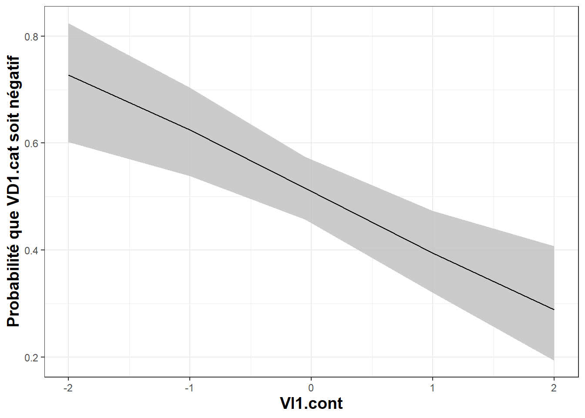
4.2.5.9 Interpretation
[1] “VI1.cont est lié à VD1.cat lorsque l’on ajuste par l’effet de VI2.cat et VI3.cont: plus VI1.cont est elevé et plus la probabilité que VD1.cat soit négatif est faible (b = -0.47, SE = 0.126, Odds Ratio = 0.625, p = 0.000191)”
4.2.6 Chi-deux 2
4.2.6.1 Type de variables
Variable Dépendante : Catégorielle (3 catégories ou +)
Variable Indépendante : Catégorielle (2 catégories ou +)
4.2.6.2 Packages nécessaires
## Warning: package 'rcompanion' was built under R version 3.6.34.2.6.3 Données réelles
# choisissez la ligne appropriée au format de votre fichier de données.
# si vos données sont dans un fichier .txt
my_data.chideux2 <- read.delim(file.choose())
# si vos données sont dans un fichier .csv
my_data.chideux2 <- read.csv(file.choose())
# si vos données sont dans un fichier .xls / .xlsx
my_data.chideux2 <- read_excel(file.choose())
# une fois vos données chargées, vous pouvez renommer vos noms de colonnes afin qu'ils correspondent à ceux utilisés dans le code ci-dessous
# Si vous ne souhaitez pas renommer vos noms de colonnes, sautez cette étape mais adaptez le code des parties suivantes en lui indiquant les noms de colonnes de vos données.
# On crée une nouvelle colonne pour votre variable dépendante catégorielle (remplacez 'votre.nom.de.colonne' par le nom approprié)
my_data.chideux2$VD1.cat <- my_data.chideux2$'votre.nom.de.colonne'
# On crée une nouvelle colonne pour votre variable indépendante catégorielle (remplacez 'votre.nom.de.colonne' par le nom approprié)
my_data.chideux2$VI1.multicat <- my_data.chideux2$'votre.nom.de.colonne'4.2.6.4 Données fictives
set.seed(4321)
my_data.chideux2 <- data.frame(
VD1.cat = rbinom(80, 1, 0.5) + 1,
VI1.multicat = rbinom(80, 2, 0.5) + 1)
# on renomme les catégories de VD1.cat et VI1.cat pour que les résultats soient plus lisibles
my_data.chideux2$VD1.cat <- fct_recode(factor(my_data.chideux2$VD1.cat),
"Positif" = "1",
"Negatif" = "2")
my_data.chideux2$VI1.multicat <- fct_recode(factor(my_data.chideux2$VI1.multicat),
"Groupe 1" = "1",
"Groupe 2" = "2",
"Groupe 3" = "3") 4.2.6.5 Déclaration du type de variables
4.2.6.6 Inspection des données
## Les graphiques situés sur la diagonale représentent la distribution des variables
## Les graphiques (ou les valeurs de corrélation) situés au dessus et en dessous de la diagonale représentent l'association entre les différentes variables
ggpairs(my_data.chideux2,
lower = list(continuous = wrap("smooth", alpha = 0.7), combo = "box_no_facet"),
upper = list(combo = "facetdensity", discrete = "facetbar"),
mapping = aes(alpha = 0.8)) + theme_bw()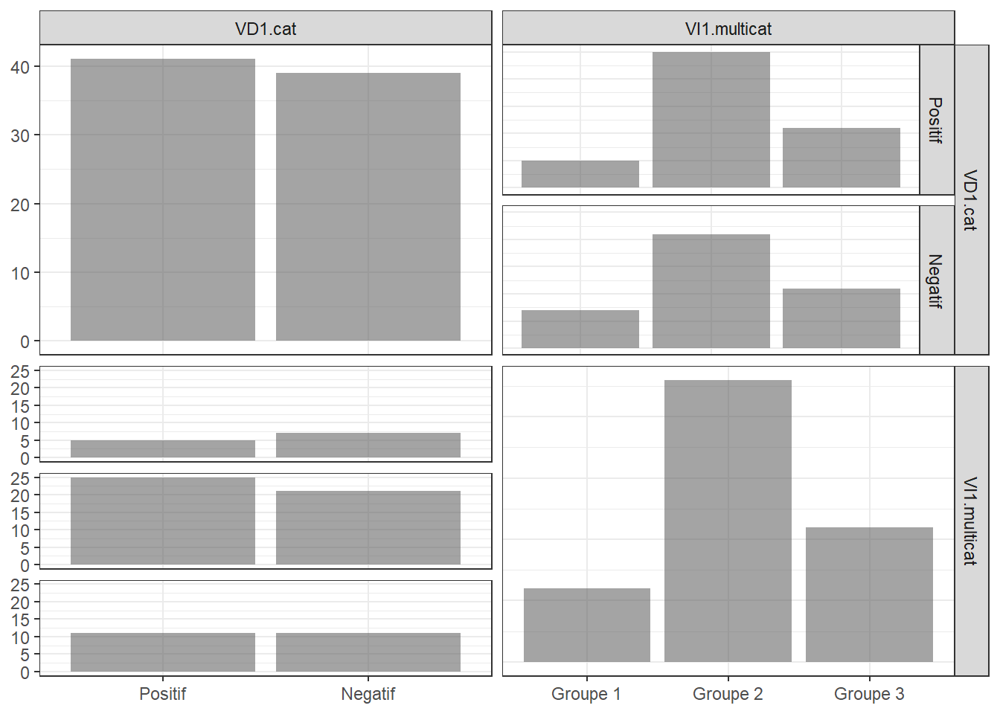
4.2.6.7 Analyse des données
# on range les données sous forme de table
my_table.chideux2 <- with(my_data.chideux2, table(VI1.multicat, VD1.cat))
# calcul du test de chi-deux et stockage des résultats dans l’objet chideux2.test
# la correction de Yates peut être obtenue en indiquant l'argument "correct = TRUE"
chideux2.test <- chisq.test(my_table.chideux2, correct = FALSE)
# calcul des proportions de VD1.cat dans chaque modalité de VI1.cat
description.chideux2 <- data.frame(my_table.chideux2) %>%
group_by(VI1.multicat) %>%
summarise(proportion = Freq / sum(Freq),
VD1.cat = VD1.cat)
# tests post hoc comparant toutes les modalités de VI1.multicat entre elles (sans correction de yates mais en corrigeant la p-value ajustée avec une méthode de bonferroni)
posthoc.chideux2 <- pairwiseNominalIndependence(my_table.chideux2,
fisher = FALSE,
gtest = FALSE,
correct = "none",
method = "bonferroni")
# calcul de la taille d'effet de VI1.multicat sur VD1.cat (odds ratio comparant le groupe 1 au groupe 2, le groupe 1 au groupe 3 et le groupe 2 au groupe 3)
odds.ratio.chideux2.grp1.grp2 <- (my_table.chideux2[1,1]/my_table.chideux2[1,2])/(my_table.chideux2[2,1]/my_table.chideux2[2,2])
odds.ratio.chideux2.grp1.grp3 <- (my_table.chideux2[1,1]/my_table.chideux2[1,2])/(my_table.chideux2[3,1]/my_table.chideux2[3,2])
odds.ratio.chideux2.grp2.grp3 <- (my_table.chideux2[2,1]/my_table.chideux2[2,2])/(my_table.chideux2[3,1]/my_table.chideux2[3,2])
# obtention des résultats tableau de contigence et des proportions
my_table.chideux2; description.chideux2## VD1.cat
## VI1.multicat Positif Negatif
## Groupe 1 5 7
## Groupe 2 25 21
## Groupe 3 11 11## # A tibble: 6 x 3
## # Groups: VI1.multicat [3]
## VI1.multicat proportion VD1.cat
## <fct> <dbl> <fct>
## 1 Groupe 1 0.417 Positif
## 2 Groupe 1 0.583 Negatif
## 3 Groupe 2 0.543 Positif
## 4 Groupe 2 0.457 Negatif
## 5 Groupe 3 0.5 Positif
## 6 Groupe 3 0.5 Negatif##
## Pearson's Chi-squared test
##
## data: my_table.chideux2
## X-squared = 0.63155, df = 2, p-value = 0.7292## Comparison p.Chisq p.adj.Chisq
## 1 Groupe 1 : Groupe 2 0.647 1
## 2 Groupe 1 : Groupe 3 0.916 1
## 3 Groupe 2 : Groupe 3 0.939 1# obtention des tailles d'effet
odds.ratio.chideux2.grp1.grp2; odds.ratio.chideux2.grp1.grp3; odds.ratio.chideux2.grp2.grp3## [1] 0.6## [1] 0.7142857## [1] 1.1904764.2.6.8 Graphique
ggplot(my_data.chideux2, aes(x = factor(VI1.multicat), fill = VD1.cat)) +
geom_bar(stat = "count", position = position_dodge2()) +
scale_fill_grey(start = 0.8, end = 0.5) +
ylab("Nombre de personnes") + xlab("VI1.cat") +
theme_bw() +
theme(axis.title.y = element_text(size = 14, hjust = 0.5, face = "bold"),
axis.title.x = element_text(face = "bold", size = 14, hjust = 0.5))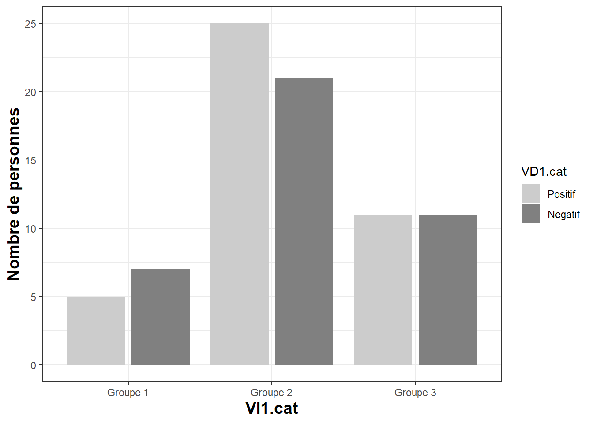
4.2.6.9 Interpretation
[1] “La proportion de cas ayant une modalité de VD1.cat égale à 1 (positif) ne diffère pas statistiquement entre les groupes 1, 2 et 3 (X² = 0.632, p = 0.729). Plus précisément, ni la différence entre les groupes 1 et 2 (odds ratio = 0.6, p non ajusté = 0.647), ni la différence entre les groupes 1 et 3 (odds ratio = 0.714, p non ajusté = 0.916), ni la différence entre les groupes 2 et 3 (odds ratio = 1.19, p non ajusté = 0.939), n’atteint la significativité.”
4.2.7 Régression logistique multinomiale 1
4.2.7.1 Type de variables
Variable Dépendante : Catégorielle (3 catégories ou +)
Variable Indépendante : Numérique
4.2.7.2 Packages nécessaires
library(ggplot2)
library(GGally)
library(forcats)
library(car)
library(emmeans)
library(nnet)
library(tidyr)## Warning: package 'tidyr' was built under R version 3.6.34.2.7.3 Données réelles
# choisissez la ligne appropriée au format de votre fichier de données.
# si vos données sont dans un fichier .txt
my_data.regmultinom1 <- read.delim(file.choose())
# si vos données sont dans un fichier .csv
my_data.regmultinom1 <- read.csv(file.choose())
# si vos données sont dans un fichier .xls / .xlsx
my_data.regmultinom1 <- read_excel(file.choose())
# une fois vos données chargées, vous pouvez renommer vos noms de colonnes afin qu'ils correspondent à ceux utilisés dans le code ci-dessous
# Si vous ne souhaitez pas renommer vos noms de colonnes, sautez cette étape mais adaptez le code des parties suivantes en lui indiquant les noms de colonnes de vos données.
# On crée une nouvelle colonne pour votre variable dépendante multicatégorielle (remplacez 'votre.nom.de.colonne' par le nom approprié)
my_data.regmultinom1$VD1.multicat <- my_data.regmultinom1$'votre.nom.de.colonne'
# On crée une nouvelle colonne pour votre variable indépendante continue (remplacez 'votre.nom.de.colonne' par le nom approprié)
my_data.regmultinom1$VI1.cont <- my_data.regmultinom1$'votre.nom.de.colonne'4.2.7.4 Données fictives
set.seed(4321)
my_data.regmultinom1 <- data.frame(
VD1.multicat = rep(c(1, 2, 3), each=100),
VI1.cont = c(rnorm(100) - 0.25, rnorm(100), rnorm(100) + 0.25))
# on renomme les catégories de VD1.cat pour que les résultats soient plus lisibles
my_data.regmultinom1$VD1.multicat <- fct_recode(factor(my_data.regmultinom1$VD1.multicat),
"Categorie 1" = "1",
"Categorie 2" = "2",
"Categorie 3" = "3") 4.2.7.5 Déclaration du type de variables
4.2.7.6 Inspection des données
## Les graphiques situés sur la diagonale représentent la distribution des variables
## Les graphiques (ou les valeurs de corrélation) situés au dessus et en dessous de la diagonale représentent l'association entre les différentes variables
ggpairs(my_data.regmultinom1,
lower = list(continuous = wrap("smooth", alpha = 0.7), combo = "box_no_facet"),
upper = list(combo = "facetdensity", discrete = "facetbar"),
mapping = aes(alpha = 0.8)) + theme_bw()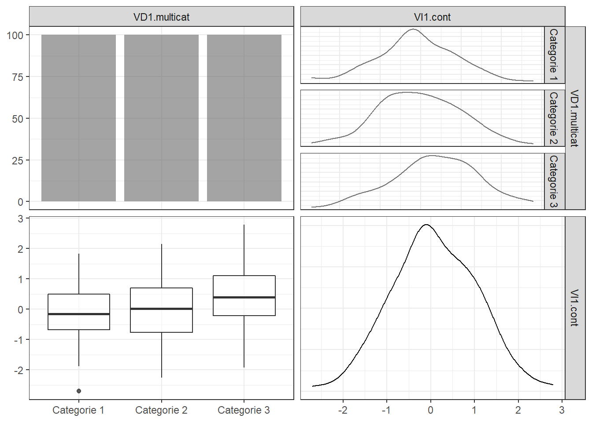
4.2.7.7 Analyse des données
# calcul de la régression logistique multinomiale et stockage des résultats dans l’objet regmultinom1.test
regmultinom1.test <- multinom(formula = VD1.multicat ~ VI1.cont,
data = my_data.regmultinom1)## # weights: 9 (4 variable)
## initial value 329.583687
## final value 321.470377
## converged## # weights: 6 (2 variable)
## initial value 329.583687
## final value 329.583687
## converged## # weights: 6 (2 variable)
## initial value 329.583687
## final value 329.583687
## converged# tests post hoc explorant l'effet de VD1.cont sur chaque modalité de VD1.multicat
posthoc.regmultinom1 <- emtrends(regmultinom1.test,
var = "VI1.cont", ~ VD1.multicat)
# tailles d'effet de VI1.cont sur VD1.multicat (odds ratio comparant l'effet de VI1.cont sur VD1.multicat entre les groupes 1 et 2 puis entre les groupes 1 et 3)
odds.ratio.regmultinom1 <- exp(coef(summary(regmultinom1.test)))
# Obtention des résultats de la régression logistique multinomiale évaluant l'effet global de VI1.cont sur VD1.cat
data.frame(cbind(
Variable = "VI1.cont",
"X2" = X2.regmultinom1,
"p" = p.regmultinom1))## Variable X2 p
## 1 VI1.cont 16.226618550692 0.000299526017216273# obtention des tests post hoc :
## explorant l'effet de VD1.cont sur chaque modalité de VD1.multicat
test(posthoc.regmultinom1, adjust = "mvt")## VD1.multicat VI1.cont.trend SE df t.ratio p.value
## Categorie 1 -0.0752 0.0287 4 -2.616 0.1212
## Categorie 2 -0.0372 0.0285 4 -1.302 0.4654
## Categorie 3 0.1123 0.0291 4 3.855 0.0389
##
## P value adjustment: mvt method for 3 tests## contrast estimate SE df t.ratio p.value
## Categorie 1 - Categorie 2 -0.038 0.0493 4 -0.771 0.7385
## Categorie 1 - Categorie 3 -0.187 0.0503 4 -3.724 0.0436
## Categorie 2 - Categorie 3 -0.149 0.0500 4 -2.990 0.0843
##
## P value adjustment: tukey method for comparing a family of 3 estimates## (Intercept) VI1.cont
## Categorie 2 1.0083688 1.122676
## Categorie 3 0.9252016 1.7687504.2.7.8 Graphique
crude.slope.regmultinom1 <- as.data.frame(
effect(
term = "VI1.cont",
mod = regmultinom1.test))
crude.slope.regmultinom1.long <-crude.slope.regmultinom1 %>%
dplyr::select(VI1.cont,
prob.Categorie.1,
prob.Categorie.2,
prob.Categorie.3) %>%
pivot_longer(-VI1.cont,
names_to="var",
values_to="VD")
crude.slope.regmultinom1.long$var<- fct_recode(crude.slope.regmultinom1.long$var,
"Categorie 1" = "prob.Categorie.1",
"Categorie 2" = "prob.Categorie.2",
"Categorie 3" = "prob.Categorie.3")
ggplot(crude.slope.regmultinom1.long) +
geom_line(aes(x = VI1.cont, y = VD, color = var), size = 1) +
facet_wrap(~var) +
ylab("Probabilité") +
xlab("VI1.cont") +
theme_bw() +
theme(axis.title.y = element_text(size = 14, hjust = 0.5, face="bold"),
axis.title.x = element_text(face="bold", size = 14, hjust = 0.5)) +
guides(color=FALSE) 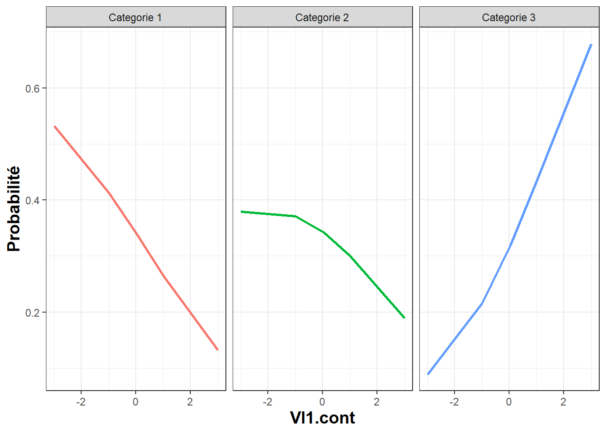
4.2.7.9 Interpretation
[1] “Les valeurs de VI1.cont sont liées à celles de VD1.multicat (X² = 16.227, p = 3e-04). Plus précisement, plus VI1.cont est élevée et plus la probabilité de Catégorie 3 augmente (valeur p ajustée = 0.039). En revanche, aucun lien statistiquement significatif entre VI1.cont et les catégories 1 et 2 de VD1.multicat (toutes valeurs p ajustées > 0.121). Ces différences entre les catégories 1 et 2 vs. catégorie 3 sont significatives ou marginalement significatives (toutes valeurs p ajustées < 0.084)”
4.2.8 Régression logistique multinomiale 2
4.2.8.1 Type de variables
Variable Dépendante : Catégorielle (3 catégories ou +)
Variables Indépendantes : Catégorielles (2 catégories ou +)
4.2.8.2 Packages nécessaires
4.2.8.3 Données réelles
# choisissez la ligne appropriée au format de votre fichier de données.
# si vos données sont dans un fichier .txt
my_data.regmultinom2 <- read.delim(file.choose())
# si vos données sont dans un fichier .csv
my_data.regmultinom2 <- read.csv(file.choose())
# si vos données sont dans un fichier .xls / .xlsx
my_data.regmultinom2 <- read_excel(file.choose())
# une fois vos données chargées, vous pouvez renommer vos noms de colonnes afin qu'ils correspondent à ceux utilisés dans le code ci-dessous
# Si vous ne souhaitez pas renommer vos noms de colonnes, sautez cette étape mais adaptez le code des parties suivantes en lui indiquant les noms de colonnes de vos données.
# On crée une nouvelle colonne pour votre variable dépendante multicatégorielle (remplacez 'votre.nom.de.colonne' par le nom approprié)
my_data.regmultinom2$VD1.multicat <- my_data.regmultinom2$'votre.nom.de.colonne'
# On crée une nouvelle colonne pour vos variables indépendantes catégorielles (remplacez 'votre.nom.de.colonne' par les noms appropriés)
my_data.regmultinom2$VI1.multicat <- my_data.regmultinom2$'votre.nom.de.colonne'
my_data.regmultinom2$VI2.cat <- my_data.regmultinom2$'votre.nom.de.colonne'4.2.8.4 Données fictives
set.seed(4321)
multinom2 <- rbinom(300, 1, 0.8)
my_data.multinom2 <- data.frame(
VD1.multicat = (rbinom(300, 2, 0.5)*multinom2 + 1),
VI1.multicat = (rbinom(300, 2, 0.5)*multinom2 + 1),
VI2.cat = (rbinom(300, 1, 0.6) + 1))
# on renomme les catégories de VD1.multicat, VI1.multicat et VI2.cat pour que les résultats soient plus lisibles
my_data.multinom2$VD1.multicat <- fct_recode(factor(my_data.multinom2$VD1.multicat),
"Categorie 1" = "1",
"Categorie 2" = "2",
"Categorie 3" = "3")
my_data.multinom2$VI1.multicat <- fct_recode(factor(my_data.multinom2$VI1.multicat),
"Groupe 1" = "1",
"Groupe 2" = "2",
"Groupe 3" = "3")
my_data.multinom2$VI2.cat <- fct_recode(factor(my_data.multinom2$VI2.cat),
"Caracteristique 1" = "1",
"Caracteristique 2" = "2")4.2.8.5 Déclaration du type de variables
4.2.8.6 Inspection des données
## Les graphiques situés sur la diagonale représentent la distribution des variables
## Les graphiques (ou les valeurs de corrélation) situés au dessus et en dessous de la diagonale représentent l'association entre les différentes variables
ggpairs(my_data.multinom2,
lower = list(continuous = wrap("smooth", alpha = 0.7), combo = "box_no_facet"),
upper = list(combo = "facetdensity", discrete = "facetbar"),
mapping = aes(alpha = 0.8)) + theme_bw()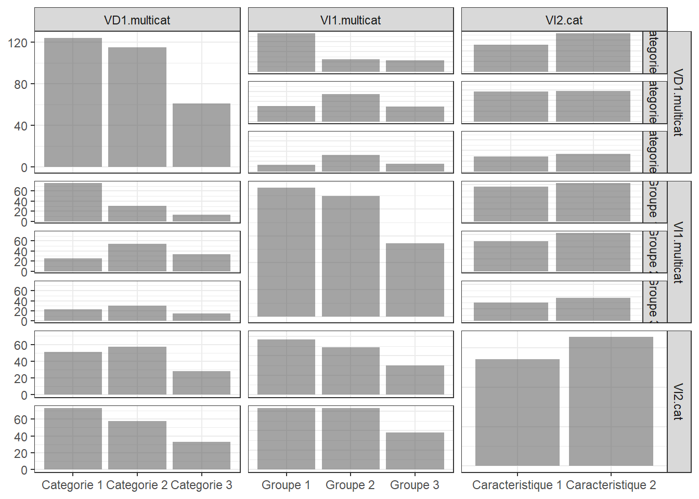
4.2.8.7 Analyse des données
# calcul du test de log-linéaire et stockage des résultats dans l’objet multinom2.test
regmultinom2.test <- multinom(formula = VD1.multicat ~ VI1.multicat + VI2.cat,
data = my_data.multinom2)## # weights: 15 (8 variable)
## initial value 329.583687
## iter 10 value 293.652364
## final value 293.604376
## convergedX2.regmultinom2 <- as.numeric(as.character(Anova(regmultinom2.test)$'LR Chisq'))
p.regmultinom2 <- as.numeric(as.character(Anova(regmultinom2.test)$'Pr(>Chisq)'))
# calcul des proportions de VD1.cat dans chaque modalité de VI1.cat
description.multinom2 <- my_data.multinom2 %>%
group_by(VI1.multicat, VD1.multicat) %>%
summarise(N = n()) %>%
mutate(proportion = N / sum(N))
# tailles d'effet de VI1.cont sur VD1.multicat (odds ratio comparant l'effet de VI1.cont sur VD1.multicat entre les groupes 1 et 2 puis entre les groupes 1 et 3)
odds.ratio.regmultinom2 <- exp(coef(summary(regmultinom2.test)))
posthoc.regmultinom2 <- emmeans(regmultinom2.test, pairwise~VD1.multicat|VI1.multicat)
# Obtention des résultats de la régression logistique multinomiale évaluant l'effet global de VI1.cont sur VD1.cat
data.frame(cbind(
Variable = "VI1.multicat",
"X2" = X2.regmultinom2,
"p" = p.regmultinom2))## Variable X2 p
## 1 VI1.multicat 45.0440877077601 3.89292187700322e-09
## 2 VI1.multicat 2.64905426287987 0.265928678673529## # A tibble: 9 x 4
## # Groups: VI1.multicat [3]
## VI1.multicat VD1.multicat N proportion
## <fct> <fct> <int> <dbl>
## 1 Groupe 1 Categorie 1 76 0.633
## 2 Groupe 1 Categorie 2 31 0.258
## 3 Groupe 1 Categorie 3 13 0.108
## 4 Groupe 2 Categorie 1 25 0.223
## 5 Groupe 2 Categorie 2 54 0.482
## 6 Groupe 2 Categorie 3 33 0.295
## 7 Groupe 3 Categorie 1 23 0.338
## 8 Groupe 3 Categorie 2 30 0.441
## 9 Groupe 3 Categorie 3 15 0.221## Analysis of Deviance Table (Type II tests)
##
## Response: VD1.multicat
## LR Chisq Df Pr(>Chisq)
## VI1.multicat 45.044 4 3.893e-09 ***
## VI2.cat 2.649 2 0.2659
## ---
## Signif. codes: 0 '***' 0.001 '**' 0.01 '*' 0.05 '.' 0.1 ' ' 1## $emmeans
## VI1.multicat = Groupe 1:
## VD1.multicat prob SE df lower.CL upper.CL
## Categorie 1 0.631 0.0439 8 0.5297 0.732
## Categorie 2 0.260 0.0400 8 0.1680 0.353
## Categorie 3 0.109 0.0285 8 0.0431 0.174
##
## VI1.multicat = Groupe 2:
## VD1.multicat prob SE df lower.CL upper.CL
## Categorie 1 0.219 0.0388 8 0.1296 0.308
## Categorie 2 0.486 0.0473 8 0.3772 0.595
## Categorie 3 0.295 0.0433 8 0.1950 0.395
##
## VI1.multicat = Groupe 3:
## VD1.multicat prob SE df lower.CL upper.CL
## Categorie 1 0.333 0.0568 8 0.2021 0.464
## Categorie 2 0.446 0.0603 8 0.3069 0.585
## Categorie 3 0.221 0.0505 8 0.1048 0.338
##
## Results are averaged over the levels of: VI2.cat
## Confidence level used: 0.95
##
## $contrasts
## VI1.multicat = Groupe 1:
## contrast estimate SE df t.ratio p.value
## Categorie 1 - Categorie 2 0.3707 0.0791 8 4.689 0.0039
## Categorie 1 - Categorie 3 0.5222 0.0623 8 8.385 0.0001
## Categorie 2 - Categorie 3 0.1515 0.0538 8 2.815 0.0532
##
## VI1.multicat = Groupe 2:
## contrast estimate SE df t.ratio p.value
## Categorie 1 - Categorie 2 -0.2673 0.0749 8 -3.568 0.0179
## Categorie 1 - Categorie 3 -0.0758 0.0672 8 -1.128 0.5249
## Categorie 2 - Categorie 3 0.1915 0.0819 8 2.337 0.1074
##
## VI1.multicat = Groupe 3:
## contrast estimate SE df t.ratio p.value
## Categorie 1 - Categorie 2 -0.1128 0.1056 8 -1.068 0.5585
## Categorie 1 - Categorie 3 0.1118 0.0889 8 1.257 0.4558
## Categorie 2 - Categorie 3 0.2246 0.0956 8 2.350 0.1054
##
## Results are averaged over the levels of: VI2.cat
## P value adjustment: tukey method for comparing a family of 3 estimates## (Intercept) VI1.multicatGroupe 2 VI1.multicatGroupe 3
## Categorie 2 0.5113441 5.480052 3.289059
## Categorie 3 0.2018970 7.905919 3.889369
## VI2.catCaracteristique 2
## Categorie 2 0.6401833
## Categorie 3 0.72833094.2.8.8 Graphique
ggplot(description.multinom2,
aes(x = VI1.multicat, y=proportion, fill = VD1.multicat)) +
geom_bar(stat = "identity", position = position_dodge2(preserve = "single")) +
scale_fill_grey(start = 0.8, end = 0.4) +
ylab("Proportion") + xlab("VI1.multicat") +
theme_bw() +
theme(axis.title.y = element_text(size = 14, hjust = 0.5, face ="bold"),
axis.title.x = element_text(face ="bold", size = 14, hjust = 0.5))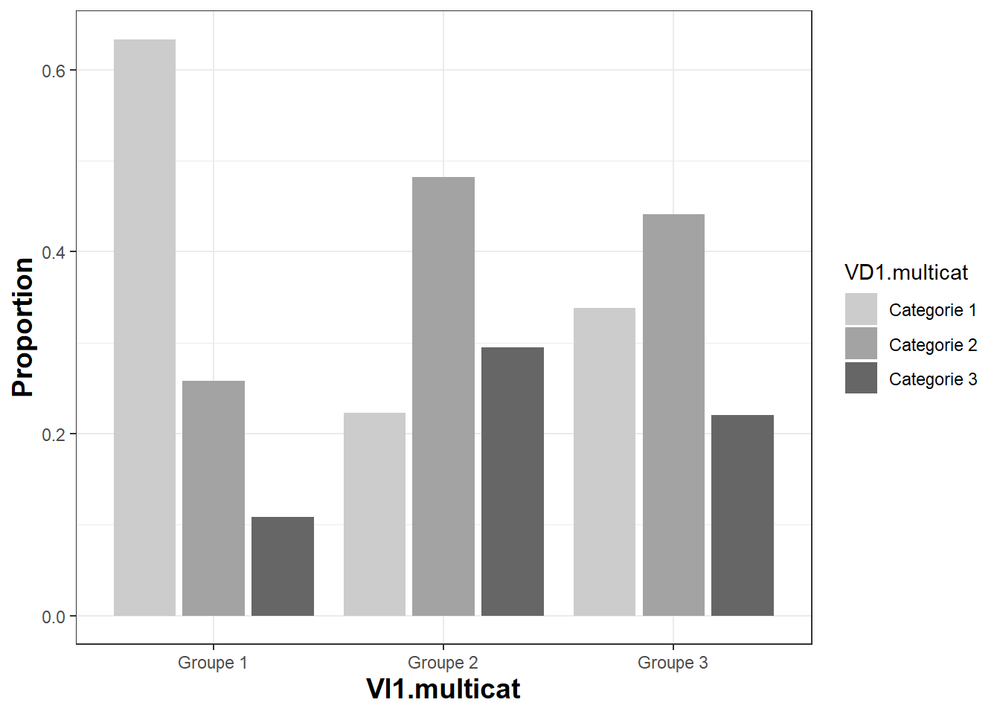
4.2.8.9 Interpretation
[1] “L’effet principal de VI1.multicat sur VD1.multicat atteint la significativite malgré l’ajustement par l’effet de VI2.cat (X² = 45.044, p = 4e-09). Au sein du groupe 1, la proportions d’individus en Catégorie 1 est plus élevée que la proportion d’individus en Catégorie 2 (p = 0.00394), elle-même marginalement plus élevée que la proportion d’individus en Catégorie 3 (p = 0.053). En revanche, au sein du groupe 2, seul le nombre d’individus en Catégorie 2 est plus élevé que le nombre d’individus en Catégorie 1 (p = 0.018). Pour le groupe 3 aucune différence significative n’était retrouvée (toutes valeurs p ajustées = 0.105).”
4.2.9 Régression logistique multinomiale 3
4.2.9.1 Type de variables
Variable Dépendante : Catégorielle (3 catégories ou +)
Variables Indépendantes : Numériques
4.2.9.2 Packages nécessaires
4.2.9.3 Données réelles
# choisissez la ligne appropriée au format de votre fichier de données.
# si vos données sont dans un fichier .txt
my_data.regmultinom3 <- read.delim(file.choose())
# si vos données sont dans un fichier .csv
my_data.regmultinom3 <- read.csv(file.choose())
# si vos données sont dans un fichier .xls / .xlsx
my_data.regmultinom3 <- read_excel(file.choose())
# une fois vos données chargées, vous pouvez renommer vos noms de colonnes afin qu'ils correspondent à ceux utilisés dans le code ci-dessous
# Si vous ne souhaitez pas renommer vos noms de colonnes, sautez cette étape mais adaptez le code des parties suivantes en lui indiquant les noms de colonnes de vos données.
# On crée une nouvelle colonne pour votre variable dépendante multicatégorielle (remplacez 'votre.nom.de.colonne' par le nom approprié)
my_data.regmultinom3$VD1.multicat <- my_data.regmultinom3$'votre.nom.de.colonne'
# On crée une nouvelle colonne pour vos variables indépendantes continues (remplacez 'votre.nom.de.colonne' par les noms appropriés)
my_data.regmultinom3$VI1.cont <- my_data.regmultinom3$'votre.nom.de.colonne'
my_data.regmultinom3$VI2.cont <- my_data.regmultinom3$'votre.nom.de.colonne'4.2.9.4 Données fictives
set.seed(4321)
my_data.regmultinom3 <- data.frame(
VD1.multicat = rbinom(330, 2, 0.5) + 1,
VI1.cont = rnorm(330),
VI2.cont = rnorm(330))
# On renomme les catégories de VD1.multicat pour que les résultats soient plus lisibles
my_data.regmultinom3$VD1.multicat <- fct_recode(factor(my_data.regmultinom3$VD1.multicat),
"Categorie 1" = "1",
"Categorie 2" = "2",
"Categorie 3" = "3") 4.2.9.5 Déclaration du type de variables
4.2.9.6 Inspection des données
## Les graphiques situés sur la diagonale représentent la distribution des variables
## Les graphiques (ou les valeurs de corrélation) situés au dessus et en dessous de la diagonale représentent l'association entre les différentes variables
ggpairs(my_data.regmultinom3,
lower = list(continuous = wrap("smooth", alpha = 0.7), combo = "box_no_facet"),
upper = list(combo = "facetdensity", discrete = "facetbar"),
mapping = aes(alpha = 0.8)) + theme_bw()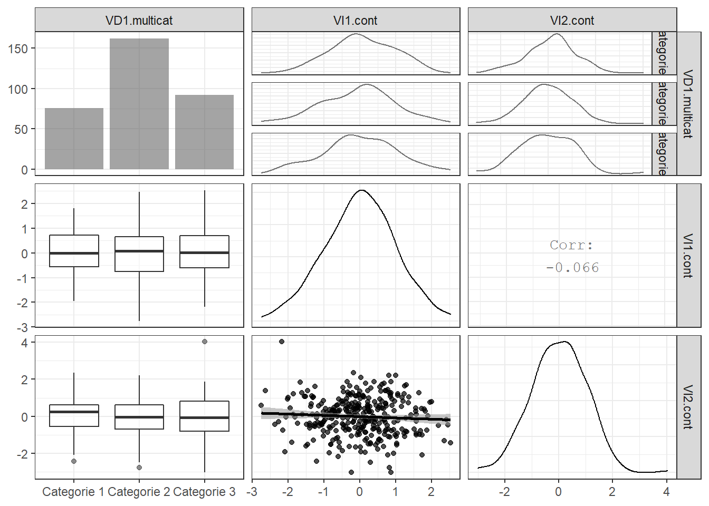
4.2.9.7 Analyse des données
# calcul de la régression logistique multinomiale et stockage des résultats dans l’objet regmultinom3.test
regmultinom3.test <- multinom(formula = VD1.multicat ~ VI1.cont + VI2.cont,
data = my_data.regmultinom3)## # weights: 12 (6 variable)
## initial value 362.542055
## iter 10 value 343.124110
## final value 343.124107
## convergedX2.regmultinom3 <- as.numeric(as.character(Anova(regmultinom3.test)$'LR Chisq'))
p.regmultinom3 <- as.numeric(as.character(Anova(regmultinom3.test)$'Pr(>Chisq)'))
# tests post hoc explorant l'effet de VD1.cont sur chaque modalité de VD1.multicat
posthoc.regmultinom3 <- emtrends(regmultinom3.test,
var = "VI1.cont", ~ VD1.multicat)
# tailles d'effet de VI1.cont sur VD1.multicat (odds ratio comparant l'effet de VI1.cont sur VD1.multicat entre les groupes 1 et 2 puis entre les groupes 1 et 3)
odds.ratio.regmultinom3 <- exp(coef(summary(regmultinom3.test)))
# Obtention des résultats de la régression logistique multinomiale évaluant l'effet global de VI1.cont sur VD1.cat
data.frame(cbind(
Variable = c("VI1.cont", "VI2.cont"),
"X2" = X2.regmultinom3,
"p" = p.regmultinom3))## Variable X2 p
## 1 VI1.cont 1.05878865026409 0.588961580899968
## 2 VI2.cont 1.54550290941927 0.461740859838403# obtention des tests post hoc :
## explorant l'effet de VD1.cont sur chaque modalité de VD1.multicat
test(posthoc.regmultinom3, adjust = "mvt")## VD1.multicat VI1.cont.trend SE df t.ratio p.value
## Categorie 1 0.02008 0.0237 6 0.848 0.6878
## Categorie 2 -0.02658 0.0282 6 -0.944 0.6336
## Categorie 3 0.00651 0.0252 6 0.258 0.9641
##
## P value adjustment: mvt method for 3 tests## contrast estimate SE df t.ratio p.value
## Categorie 1 - Categorie 2 0.0467 0.0455 6 1.026 0.5890
## Categorie 1 - Categorie 3 0.0136 0.0400 6 0.339 0.9392
## Categorie 2 - Categorie 3 -0.0331 0.0480 6 -0.690 0.7778
##
## P value adjustment: tukey method for comparing a family of 3 estimates## (Intercept) VI1.cont VI2.cont
## Categorie 2 2.150149 0.8677836 0.8618484
## Categorie 3 1.220189 0.9375591 0.83946654.2.9.8 Graphique
adjusted.slope.regmultinom3 <- as.data.frame(
effect(
term="VI1.cont",
mod = regmultinom3.test))
adjusted.slope.regmultinom3.long <- adjusted.slope.regmultinom3 %>%
dplyr::select(VI1.cont, prob.Categorie.1,prob.Categorie.2,prob.Categorie.3) %>%
pivot_longer(-VI1.cont,
names_to="var",
values_to="VD")
adjusted.slope.regmultinom3.long$var<- fct_recode(adjusted.slope.regmultinom3.long$var,
"Categorie 1" = "prob.Categorie.1",
"Categorie 2" = "prob.Categorie.2",
"Categorie 3" = "prob.Categorie.3")
ggplot(adjusted.slope.regmultinom3.long) +
geom_line(aes(x = VI1.cont, y = VD, color = var), size = 1) +
facet_wrap(~ var) +
ylab("Probabilité") +
xlab("VI1.cont") +
theme_bw() +
theme(axis.title.y = element_text(size = 14, hjust = 0.5, face="bold"),
axis.title.x = element_text(face="bold", size = 14, hjust = 0.5)) +
guides(color=FALSE) 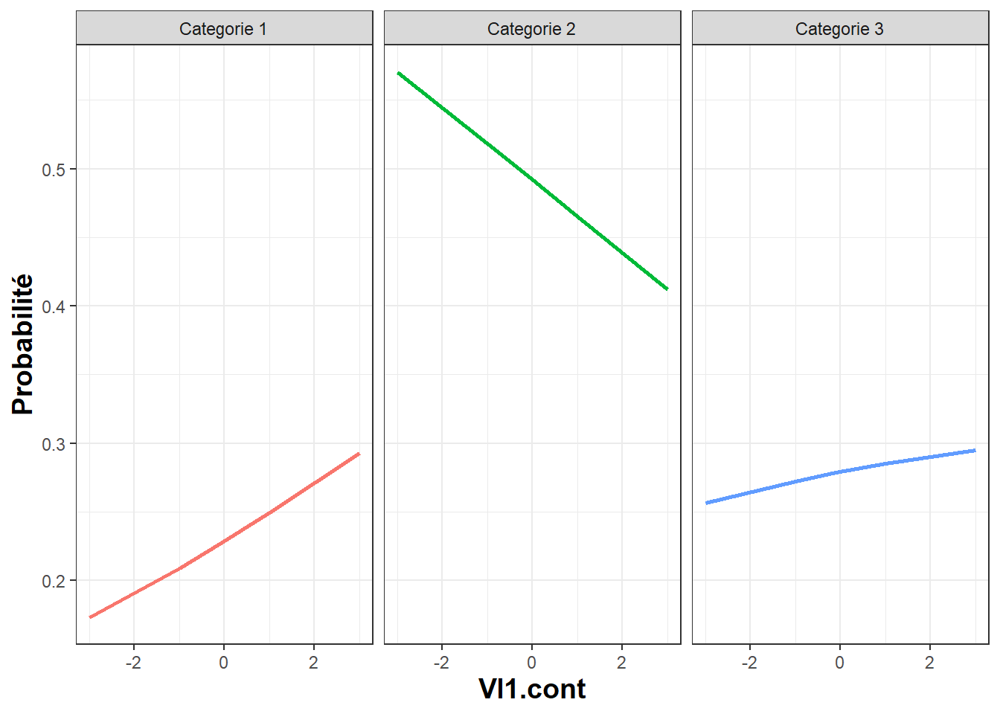
4.2.9.9 Interpretation
[1] “Les valeurs de VI1.cont ne sont pas liées à celles de VD1.multicat lorsque l’on ajuste par l’effet du VI2.cont (X² = 1.059, p = 0.58896). Plus précisement, quelle que soit la modalité de VD1.multicat, l’effet de VI1.cont n’est pas statistiquement significatif (valeur p ajustée > 0.634”
4.2.10 Régression logistique multinomiale 4
4.2.10.1 Type de variables
Variable Dépendante : Catégorielle (3 catégories ou +)
Variables Indépendantes : Numériques / Catégorielles
4.2.10.2 Packages nécessaires
4.2.10.3 Données réelles
# choisissez la ligne appropriée au format de votre fichier de données.
# si vos données sont dans un fichier .txt
my_data.regmultinom4 <- read.delim(file.choose())
# si vos données sont dans un fichier .csv
my_data.regmultinom4 <- read.csv(file.choose())
# si vos données sont dans un fichier .xls / .xlsx
my_data.regmultinom4 <- read_excel(file.choose())
# une fois vos données chargées, vous pouvez renommer vos noms de colonnes afin qu'ils correspondent à ceux utilisés dans le code ci-dessous
# Si vous ne souhaitez pas renommer vos noms de colonnes, sautez cette étape mais adaptez le code des parties suivantes en lui indiquant les noms de colonnes de vos données.
# On crée une nouvelle colonne pour votre variable dépendante multicatégorielle (remplacez 'votre.nom.de.colonne' par le nom approprié)
my_data.regmultinom4$VD1.multicat <- my_data.regmultinom4$'votre.nom.de.colonne'
# On crée une nouvelle colonne pour vos variables indépendantes continues (remplacez 'votre.nom.de.colonne' par les noms appropriés)
my_data.regmultinom4$VI1.cont <- my_data.regmultinom4$'votre.nom.de.colonne'
my_data.regmultinom4$VI2.cont <- my_data.regmultinom4$'votre.nom.de.colonne'
# On crée une nouvelle colonne pour votre variable catégorielle (remplacez 'votre.nom.de.colonne' par le nom approprié)
my_data.regmultinom4$VI3.cat <- my_data.regmultinom4$'votre.nom.de.colonne'4.2.10.4 Données fictives
set.seed(4321)
my_data.regmultinom4 <- data.frame(
VD1.multicat = rep(c(1,2,3), each = 40),
VI1.cont = c(rnorm(40)+0.35, rnorm(40)-0.35, rnorm(40)-0.35),
VI2.cont = rnorm(120),
VI3.cat = rbinom(120, 1, .4) + 1)
# On renomme les catégories de VD1.multicat pour que les résultats soient plus lisibles
my_data.regmultinom4$VD1.multicat <- fct_recode(factor(my_data.regmultinom4$VD1.multicat),
"Categorie 1" = "1",
"Categorie 2" = "2",
"Categorie 3" = "3")
my_data.regmultinom4$VI3.cat <- fct_recode(factor(my_data.regmultinom4$VI3.cat),
"Caracteristique 1" = "1",
"Caracteristique 2" = "2") 4.2.10.5 Déclaration du type de variables
my_data.regmultinom4$VD1.multicat <- factor(my_data.regmultinom4$VD1.multicat)
my_data.regmultinom4$VI1.cont <- as.numeric(as.character(my_data.regmultinom4$VI1.cont))
my_data.regmultinom4$VI2.cont <- as.numeric(as.character(my_data.regmultinom4$VI2.cont))
my_data.regmultinom4$VI3.cat <- factor(my_data.regmultinom4$VI3.cat)4.2.10.6 Inspection des données
## Les graphiques situés sur la diagonale représentent la distribution des variables
## Les graphiques (ou les valeurs de corrélation) situés au dessus et en dessous de la diagonale représentent l'association entre les différentes variables
ggpairs(my_data.regmultinom4,
lower = list(continuous = wrap("smooth", alpha = 0.7), combo = "box_no_facet"),
upper = list(combo = "facetdensity", discrete = "facetbar"),
mapping = aes(alpha = 0.8)) + theme_bw()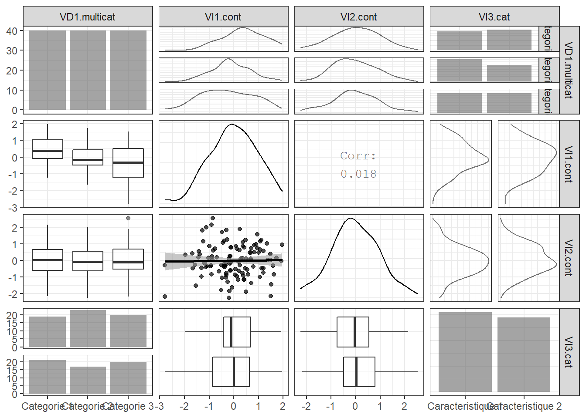
4.2.10.7 Analyse des données
# calcul de la régression logistique multinomiale et stockage des résultats dans l’objet regmultinom4.test
regmultinom4.test <- multinom(formula = VD1.multicat ~ VI1.cont + VI2.cont + VI3.cat,
data = my_data.regmultinom4)## # weights: 15 (8 variable)
## initial value 131.833475
## iter 10 value 124.324194
## final value 124.309827
## convergedX2.regmultinom4 <- as.numeric(as.character(Anova(regmultinom4.test)$'LR Chisq'))
p.regmultinom4 <- as.numeric(as.character(Anova(regmultinom4.test)$'Pr(>Chisq)'))
# tests post hoc explorant l'effet de VD1.cont sur chaque modalité de VD1.multicat
posthoc.regmultinom4 <- emtrends(regmultinom4.test,
var = "VI1.cont", ~ VD1.multicat)
# tailles d'effet de VI1.cont sur VD1.multicat (odds ratio comparant l'effet de VI1.cont sur VD1.multicat entre les groupes 1 et 2 puis entre les groupes 1 et 3)
odds.ratio.regmultinom4 <- exp(coef(summary(regmultinom4.test)))
# Obtention des résultats de la régression logistique multinomiale évaluant l'effet global de VI1.cont sur VD1.cat
data.frame(cbind(
Variable = c("VI1.cont", "VI2.cont", "VI3.cat"),
"X2" = X2.regmultinom4,
"p" = p.regmultinom4))## Variable X2 p
## 1 VI1.cont 14.1257841581388 0.000856298027825813
## 2 VI2.cont 0.0470392679264364 0.976754796912821
## 3 VI3.cat 1.02404809973623 0.599281375034191# obtention des tests post hoc :
## explorant l'effet de VD1.cont sur chaque modalité de VD1.multicat
test(posthoc.regmultinom4, adjust = "mvt")## VD1.multicat VI1.cont.trend SE df t.ratio p.value
## Categorie 1 0.1727 0.0502 8 3.441 0.0214
## Categorie 2 -0.0446 0.0473 8 -0.943 0.6302
## Categorie 3 -0.1280 0.0480 8 -2.669 0.0659
##
## Results are averaged over the levels of: VI3.cat
## P value adjustment: mvt method for 3 tests## contrast estimate SE df t.ratio p.value
## Categorie 1 - Categorie 2 0.2173 0.0849 8 2.559 0.0776
## Categorie 1 - Categorie 3 0.3007 0.0860 8 3.495 0.0198
## Categorie 2 - Categorie 3 0.0834 0.0810 8 1.030 0.5800
##
## Results are averaged over the levels of: VI3.cat
## P value adjustment: tukey method for comparing a family of 3 estimates## (Intercept) VI1.cont VI2.cont VI3.catCaracteristique 2
## Categorie 2 1.38505 0.5075991 0.9521526 0.6244487
## Categorie 3 1.16946 0.3935861 0.9897427 0.79597444.2.10.8 Graphique
adjusted.slope.regmultinom4 <- as.data.frame(
effect(
term="VI1.cont",
mod = regmultinom4.test))
adjusted.slope.regmultinom4.long <- adjusted.slope.regmultinom4 %>%
dplyr::select(VI1.cont, prob.Categorie.1,prob.Categorie.2,prob.Categorie.3) %>%
pivot_longer(-VI1.cont,
names_to="var",
values_to="VD")
adjusted.slope.regmultinom4.long$var<- fct_recode(adjusted.slope.regmultinom4.long$var,
"Categorie 1" = "prob.Categorie.1",
"Categorie 2" = "prob.Categorie.2",
"Categorie 3" = "prob.Categorie.3")
ggplot(adjusted.slope.regmultinom4.long) +
geom_line(aes(x = VI1.cont, y = VD, color = var), size = 1) +
facet_wrap(~ var) +
ylab("Probabilité") +
xlab("VI1.cont") +
theme_bw() +
theme(axis.title.y = element_text(size = 14, hjust = 0.5, face="bold"),
axis.title.x = element_text(face="bold", size = 14, hjust = 0.5)) +
guides(color=FALSE) 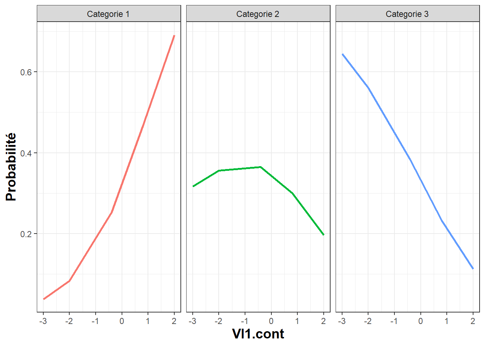
4.2.10.9 Interpretation
[1] “Les valeurs de VI1.cont sont liées à celles de VD1.multicat lorsque l’on ajuste par l’effet de VI2.cont et VI3.cat (X² = 14.126, p = 0.00086). Plus précisement, plus VI1.cont est élevée et plus la probabilité de Catégorie 1 augmente (valeur p ajustée = 0.022) et plus la probabilité de Catégorie 3 diminue (valeur p ajustée marginalement significative = 0.066). La probabilité de Catégorie 2 n’est pas liée à celle de VI1.cont (valeur p ajustée = 0.63). Concernant la différence entre les catégories de VD1.multicat, l’évolution des probabilités des Catégories 2 et 3 selon VI1.cont est différente de l’évolution de la probabilité de la Catégorie 1 (toutes valeurs p ajustées < 0.078)”
4.2.11 Régression logistique ordinale 1
4.2.11.1 Type de variables
Variable Dépendante : Ordinale (3 catégories ou +)
Variables Indépendantes : Catégorielles
4.2.11.2 Packages nécessaires
4.2.11.3 Données réelles
# choisissez la ligne appropriée au format de votre fichier de données.
# si vos données sont dans un fichier .txt
my_data.regord1 <- read.delim(file.choose())
# si vos données sont dans un fichier .csv
my_data.regord1 <- read.csv(file.choose())
# si vos données sont dans un fichier .xls / .xlsx
my_data.regord1 <- read_excel(file.choose())
# une fois vos données chargées, vous pouvez renommer vos noms de colonnes afin qu'ils correspondent à ceux utilisés dans le code ci-dessous
# Si vous ne souhaitez pas renommer vos noms de colonnes, sautez cette étape mais adaptez le code des parties suivantes en lui indiquant les noms de colonnes de vos données.
# On crée une nouvelle colonne pour votre variable dépendante ordinale (remplacez 'votre.nom.de.colonne' par le nom approprié)
my_data.regord1$VD1.ord <- my_data.regord1$'votre.nom.de.colonne'
# On crée une nouvelle colonne pour votre variable indépendante catégorielle (remplacez 'votre.nom.de.colonne' par le nom approprié)
my_data.regord1$VI1.cat <- my_data.regord1$'votre.nom.de.colonne'4.2.11.4 Données fictives
set.seed(4321)
regord1 <- rbinom(200, 1, 0.8)
my_data.regord1 <- data.frame(
VD1.ord = (rbinom(200, 2, 0.5)*regord1 + 1),
VI1.cat = (rbinom(200, 1, 0.6)*regord1 + 1))
# on recode les catégories de VD1.ord et VI1.cat pour que les résultats soient plus lisibles
my_data.regord1$VI1.cat <- fct_recode(factor(my_data.regord1$VI1.cat),
"Groupe 1" = "1",
"Groupe 2" = "2")
my_data.regord1$VD1.ord <- fct_recode(ordered(my_data.regord1$VD1.ord),
"Faible" = "1",
"Modere" = "2",
"Severe" = "3") 4.2.11.5 Déclaration du type de variables
4.2.11.6 Inspection des données
## Les graphiques situés sur la diagonale représentent la distribution des variables
## Les graphiques (ou les valeurs de corrélation) situés au dessus et en dessous de la diagonale représentent l'association entre les différentes variables
ggpairs(my_data.regord1,
lower = list(continuous = wrap("smooth", alpha = 0.7), combo = "box_no_facet"),
upper = list(combo = "facetdensity", discrete = "facetbar"),
mapping = aes(alpha = 0.8)) + theme_bw()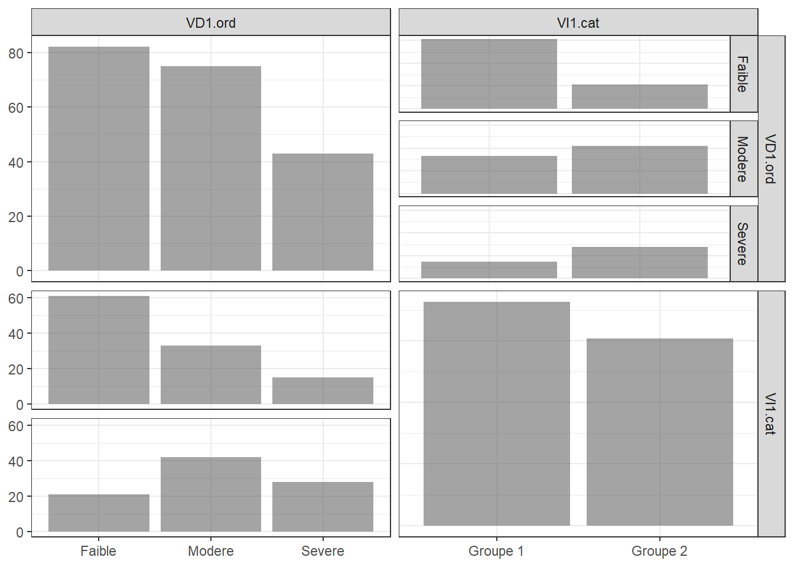
4.2.11.7 Analyse des données
# Pour vérifier que vos catégories de VD1.ord ont bien été hierarchisées correctement
str(my_data.regord1$VD1.ord)## Ord.factor w/ 3 levels "Faible"<"Modere"<..: 3 1 2 2 1 2 2 1 3 2 ...# calcul de la régression ordinale et stockage des résultats dans l’objet regord1.test
regord1.test <- MASS::polr(formula = VD1.ord ~ VI1.cat,
data = my_data.regord1)
# Anova(MASS::polr(formula = VD1.ord.ON ~ VI1.cat, data = my_data.regord1))
# wilcox.test(VD1.ord ~ VI1.cat, data = my_data.regord1)
# calcul de la taille d'effet de VI1.cat sur VD1.ord (odds ratio)
oddsratio.regord1 <- exp(coef(summary(regord1.test)))
# Obtention des résultats de la regression ordinale
Anova(regord1.test)## Analysis of Deviance Table (Type II tests)
##
## Response: VD1.ord
## LR Chisq Df Pr(>Chisq)
## VI1.cat 22.569 1 2.027e-06 ***
## ---
## Signif. codes: 0 '***' 0.001 '**' 0.01 '*' 0.05 '.' 0.1 ' ' 1## Value Std. Error t value
## VI1.catGroupe 2 3.633876 1.320968 103.057160
## Faible|Modere 1.219093 1.210530 2.820439
## Modere|Severe 7.510103 1.276284 3885.1982144.2.11.8 Graphique
crude.slope.regord1 <- as.data.frame(
effect(
term="VI1.cat",
mod = regord1.test))
crude.slope.regord1.long.prob <- crude.slope.regord1 %>%
dplyr::select(VI1.cat,
prob.Faible,
prob.Modere,
prob.Severe) %>%
pivot_longer(-VI1.cat,
names_to="VD1.ord",
values_to="VD")
crude.slope.regord1.long.se <- crude.slope.regord1 %>%
dplyr::select(VI1.cat,
se.prob.Faible,
se.prob.Modere,
se.prob.Severe) %>%
pivot_longer(-VI1.cat,
names_to="VD1.ord.se",
values_to="SE")
crude.slope.regord1.long <- cbind(crude.slope.regord1.long.prob, crude.slope.regord1.long.se[,c('VD1.ord.se', 'SE')])
crude.slope.regord1.long$VD1.ord<- fct_recode(crude.slope.regord1.long$VD1.ord,
"Faible" = "prob.Faible",
"Modere" = "prob.Modere",
"Severe" = "prob.Severe")
crude.slope.regord1.long$VD1.ord <- ordered(crude.slope.regord1.long$VD1.ord,
levels = c("Faible", "Modere", "Severe"))
ggplot(crude.slope.regord1.long,
aes(x = VI1.cat, y = VD, color = VD1.ord)) +
geom_errorbar(aes(
ymin = VD - SE,
ymax = VD + SE),
width = 0, position = position_dodge(0.3)) +
geom_point(size = 2, position = position_dodge(0.3)) +
ylab("Probabilité") + xlab("VI1.cat") +
theme_bw() +
theme(
axis.title.y = element_text(size = 14, hjust = 0.5, face ="bold"),
axis.title.x = element_text(face ="bold", size = 14, hjust = 0.5)) +
scale_color_grey(start=0.7, end=0.01) +
scale_y_continuous(limits=c(0,1))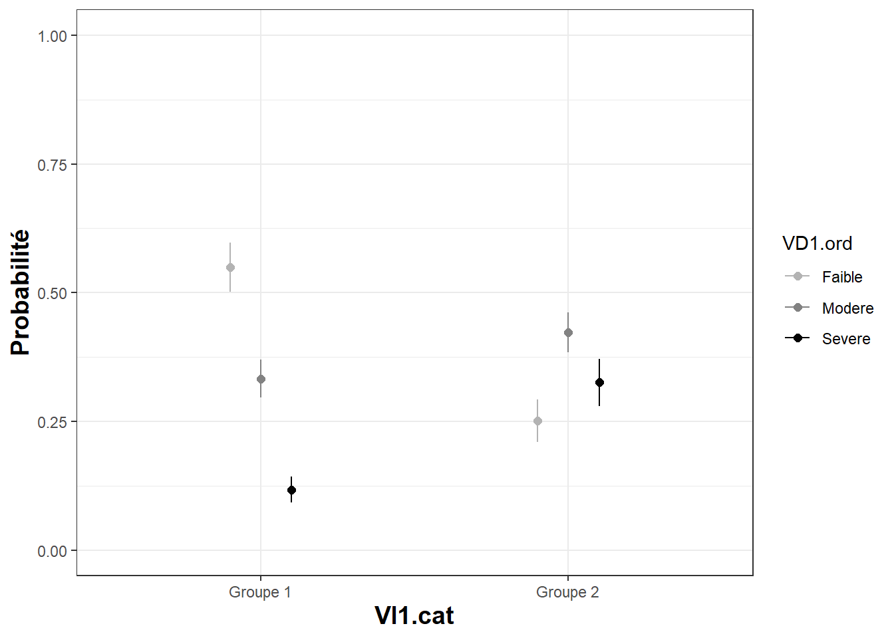
4.2.11.9 Interpretation
[1] “La probabilité d’obtenir un score faible à VD1.ord (comparativement à un score modéré ou sévère) est plus importante dans le groupe 1 que dans le groupe 2 (X² = 22.569, Odds ratio = 3.634, p = 2e-06).”
4.2.12 Régression logistique ordinale 2
4.2.12.1 Type de variables
Variable Dépendante : Ordinale (3 catégories ou +)
Variables Indépendantes: Numériques
4.2.12.2 Packages nécessaires
4.2.12.3 Données réelles
# choisissez la ligne appropriée au format de votre fichier de données.
# si vos données sont dans un fichier .txt
my_data.regord2 <- read.delim(file.choose())
# si vos données sont dans un fichier .csv
my_data.regord2 <- read.csv(file.choose())
# si vos données sont dans un fichier .xls / .xlsx
my_data.regord2 <- read_excel(file.choose())
# une fois vos données chargées, vous pouvez renommer vos noms de colonnes afin qu'ils correspondent à ceux utilisés dans le code ci-dessous
# Si vous ne souhaitez pas renommer vos noms de colonnes, sautez cette étape mais adaptez le code des parties suivantes en lui indiquant les noms de colonnes de vos données.
# On crée une nouvelle colonne pour votre variable dépendante ordinale (remplacez 'votre.nom.de.colonne' par le nom approprié)
my_data.regord2$VD1.ord <- my_data.regord2$'votre.nom.de.colonne'
# On crée une nouvelle colonne pour votre variable indépendante continue (remplacez 'votre.nom.de.colonne' par le nom approprié)
my_data.regord2$VI1.cont <- my_data.regord2$'votre.nom.de.colonne'4.2.12.4 Données fictives
set.seed(4321)
my_data.regord2 <- data.frame(
VD1.ord = rep(c(1,2,3), each=35),
VI1.cont = c(rnorm(35)-0.3, rnorm(35), rnorm(35)+0.3))
# on recode les catégories de VD1.ord pour que les résultats soient plus lisibles
my_data.regord2$VD1.ord <- fct_recode(factor(my_data.regord2$VD1.ord),
"Faible" = "1",
"Modere" = "2",
"Severe" = "3") 4.2.12.5 Déclaration du type de variables
4.2.12.6 Inspection des données
## Les graphiques situés sur la diagonale représentent la distribution des variables
## Les graphiques (ou les valeurs de corrélation) situés au dessus et en dessous de la diagonale représentent l'association entre les différentes variables
ggpairs(my_data.regord2,
lower = list(continuous = wrap("smooth", alpha = 0.7), combo = "box_no_facet"),
upper = list(combo = "facetdensity", discrete = "facetbar"),
mapping = aes(alpha = 0.8)) + theme_bw()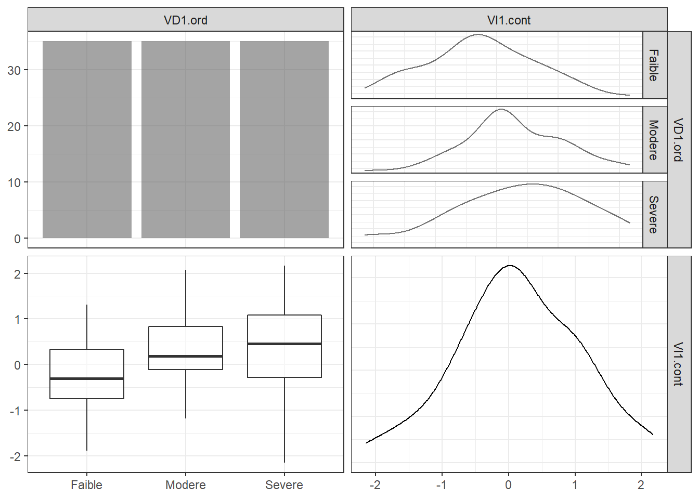
4.2.12.7 Analyse des données
# Pour vérifier que vos catégories de VD1.ord ont bien été hierarchisées correctement
str(my_data.regord2$VD1.ord)## Ord.factor w/ 3 levels "Faible"<"Modere"<..: 1 1 1 1 1 1 1 1 1 1 ...# calcul du test de régression ordinale et stockage des résultats dans l’objet regord2.test
regord2.test <- MASS::polr(formula = ordered(VD1.ord) ~ VI1.cont,
data = my_data.regord2)
# calcul des odds ratio
oddsratio.regord2 <- exp(coef(summary(regord2.test)))
# obtention des résultats de la régression logistique ordinale
Anova(regord2.test)## Analysis of Deviance Table (Type II tests)
##
## Response: ordered(VD1.ord)
## LR Chisq Df Pr(>Chisq)
## VI1.cont 8.9571 1 0.002764 **
## ---
## Signif. codes: 0 '***' 0.001 '**' 0.01 '*' 0.05 '.' 0.1 ' ' 1## Value Std. Error t value
## VI1.cont 1.8565100 1.237809 18.17457892
## Faible|Modere 0.5343113 1.237832 0.05299107
## Modere|Severe 2.3600219 1.249030 47.536787524.2.12.8 Graphique
crude.slope.regord2 <- as.data.frame(
effect(
term="VI1.cont",
mod = regord2.test))
crude.slope.regord2.long <- crude.slope.regord2 %>%
dplyr::select(VI1.cont,
prob.Faible,
prob.Modere,
prob.Severe) %>%
pivot_longer(-VI1.cont,
names_to="VD1.ord",
values_to="VD")
crude.slope.regord2.long$VD1.ord<- fct_recode(crude.slope.regord2.long$VD1.ord,
"Faible" = "prob.Faible",
"Modere" = "prob.Modere",
"Severe" = "prob.Severe")
crude.slope.regord2.long$VD1.ord <- ordered(crude.slope.regord2.long$VD1.ord,
levels = c("Faible", "Modere", "Severe"))
ggplot(crude.slope.regord2.long) +
geom_line(aes(x = VI1.cont, y = VD, color = VD1.ord), size = 1) +
ylab("Probabilité") + xlab("VI1.cont") +
theme_bw() +
theme(
axis.title.y = element_text(size = 14, hjust = 0.5, face ="bold"),
axis.title.x = element_text(face ="bold", size = 14, hjust = 0.5)) +
scale_color_grey(start=0.9, end=0.1) +
scale_y_continuous(limits=c(0,1))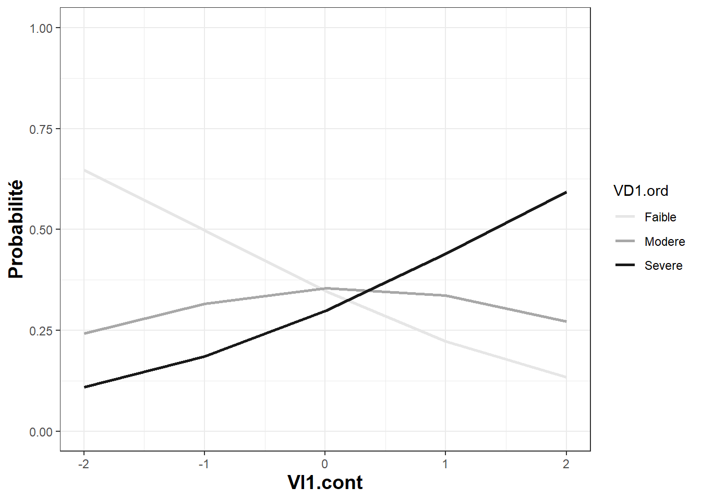
4.2.12.9 Interpretation
[1] “La probabilité d’obtenir un score sévère à VD1.ord (comparativement à un score faible ou modéré) augmente à mesure que VI1.cont augmente (X² = 8.957, OR = 1.857, p = 0.0028).”
4.2.13 Régression logistique ordinale 3
4.2.13.1 Type de variables
Variable Dépendante : Ordinale (3 catégories ou +)
Variables Indépendantes : Numériques / Catégorielles (2 catégories ou +)
4.2.13.2 Packages nécessaires
4.2.13.3 Données réelles
# choisissez la ligne appropriée au format de votre fichier de données.
# si vos données sont dans un fichier .txt
my_data.regord3 <- read.delim(file.choose())
# si vos données sont dans un fichier .csv
my_data.regord3 <- read.csv(file.choose())
# si vos données sont dans un fichier .xls / .xlsx
my_data.regord3 <- read_excel(file.choose())
# une fois vos données chargées, vous pouvez renommer vos noms de colonnes afin qu'ils correspondent à ceux utilisés dans le code ci-dessous
# Si vous ne souhaitez pas renommer vos noms de colonnes, sautez cette étape mais adaptez le code des parties suivantes en lui indiquant les noms de colonnes de vos données.
# On crée une nouvelle colonne pour votre variable dépendante ordinale (remplacez 'votre.nom.de.colonne' par le nom approprié)
my_data.regord3$VD1.ord <- my_data.regord3$'votre.nom.de.colonne'
# On crée une nouvelle colonne pour vos variables indépendantes catégorielles (remplacez 'votre.nom.de.colonne' par les noms appropriés)
my_data.regord3$VI1.cat <- my_data.regord3$'votre.nom.de.colonne'
my_data.regord3$VI2.multicat <- my_data.regord3$'votre.nom.de.colonne'
# On crée une nouvelle colonne pour votre variable indépendante continue (remplacez 'votre.nom.de.colonne' par le nom approprié)
my_data.regord3$VI1.cont <- my_data.regord3$'votre.nom.de.colonne'4.2.13.4 Données fictives
set.seed(4321)
regord3 <- rbinom(200, 1, 0.8)
my_data.regord3 <- data.frame(
VD1.ord = (rbinom(200, 2, 0.5)*regord3 + 1),
VI1.cat = (rbinom(200, 1, 0.6)*regord3 + 1),
VI2.multicat = (rbinom(200, 3, 0.5)*regord3),
VI3.cont = rnorm(200))
# on recode les catégories de VD1.ord, VI1.cat et VI2.multicat pour que les résultats soient plus lisibles
my_data.regord3$VD1.ord <- fct_recode(factor(my_data.regord3$VD1.ord),
"Faible" = "1",
"Modere" = "2",
"Severe" = "3")
my_data.regord3$VI1.cat <- fct_recode(factor(my_data.regord3$VI1.cat),
"Groupe 1" = "1",
"Groupe 2" = "2")
my_data.regord3$VI2.multicat <- fct_recode(factor(my_data.regord3$VI2.multicat),
"Caracteristique 1" = "0",
"Caracteristique 2" = "1",
"Caracteristique 3" = "2",
"Caracteristique 4" = "3") 4.2.13.5 Déclaration du type de variables
my_data.regord3$VD1.ord <- ordered(my_data.regord3$VD1.ord,
levels = c("Faible", "Modere", "Severe"))
my_data.regord3$VI1.cat <- factor(my_data.regord3$VI1.cat)
my_data.regord3$VI2.multicat <- factor(my_data.regord3$VI2.multicat)
my_data.regord3$VI3.cont <-as.numeric(as.character(my_data.regord3$VI3.cont))4.2.13.6 Inspection des données
## Les graphiques situés sur la diagonale représentent la distribution des variables
## Les graphiques (ou les valeurs de corrélation) situés au dessus et en dessous de la diagonale représentent l'association entre les différentes variables
ggpairs(my_data.regord3,
lower = list(continuous = wrap("smooth", alpha = 0.7), combo = "box_no_facet"),
upper = list(combo = "facetdensity", discrete = "facetbar"),
mapping = aes(alpha = 0.8)) + theme_bw()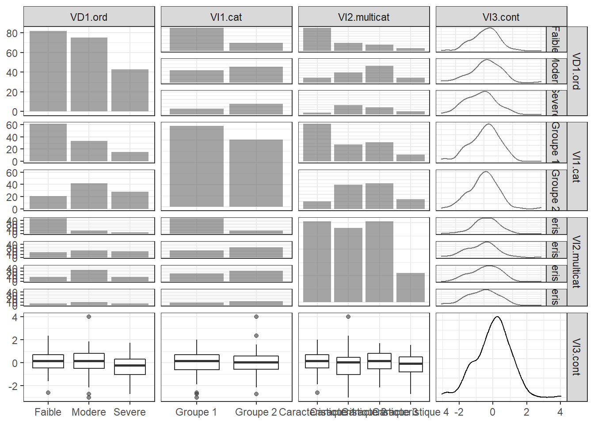
4.2.13.7 Analyse des données
# pour vérifier que vos catégories de VD1.ord ont bien été hierarchisées correctement
str(my_data.regord3$VD1.ord)## Ord.factor w/ 3 levels "Faible"<"Modere"<..: 3 1 2 2 1 2 2 1 3 2 ...# calcul du test de régression ordinale et stockage des résultats dans l’objet regord3.test
regord3.test <- MASS::polr(formula = VD1.ord ~ VI1.cat + VI2.multicat + VI3.cont,
data = my_data.regord3)
# calcul de la taille d'effet de VI1.cat sur VD1.ord (odds ratio ajusté par l'effet de VI2.multicat)
oddsratio.regord3 <- exp(coef(summary(regord3.test)))
# obtention des résultats de la régression logistique ordinale
Anova(regord3.test)## Analysis of Deviance Table (Type II tests)
##
## Response: VD1.ord
## LR Chisq Df Pr(>Chisq)
## VI1.cat 7.3574 1 0.006679 **
## VI2.multicat 31.3003 3 7.349e-07 ***
## VI3.cont 1.8682 1 0.171680
## ---
## Signif. codes: 0 '***' 0.001 '**' 0.01 '*' 0.05 '.' 0.1 ' ' 1## Value Std. Error t value
## VI1.catGroupe 2 2.242658 1.348506 14.8980760
## VI2.multicatCaracteristique 2 7.341798 1.525543 112.1918529
## VI2.multicatCaracteristique 3 6.756080 1.501548 109.9224311
## VI2.multicatCaracteristique 4 6.053035 1.681173 32.0084911
## VI3.cont 0.833781 1.142465 0.2554152
## Faible|Modere 3.698366 1.367037 65.5821571
## Modere|Severe 28.004948 1.452782 7498.89586114.2.13.8 Graphique
##
## Re-fitting to get Hessianadjusted.slope.regord3.long.prob <- adjusted.slope.regord3 %>%
dplyr::select(VI1.cat,
prob.Faible,
prob.Modere,
prob.Severe) %>%
pivot_longer(-VI1.cat,
names_to="VD1.ord",
values_to="VD")
adjusted.slope.regord3.long.se <- adjusted.slope.regord3 %>%
dplyr::select(VI1.cat,
se.prob.Faible,
se.prob.Modere,
se.prob.Severe) %>%
pivot_longer(-VI1.cat,
names_to="VD1.ord.se",
values_to="SE")
adjusted.slope.regord3.long <- cbind(adjusted.slope.regord3.long.prob, adjusted.slope.regord3.long.se[,c('VD1.ord.se', 'SE')])
adjusted.slope.regord3.long$VD1.ord<- fct_recode(adjusted.slope.regord3.long$VD1.ord,
"Faible" = "prob.Faible",
"Modere" = "prob.Modere",
"Severe" = "prob.Severe")
adjusted.slope.regord3.long$VD1.ord <- factor(adjusted.slope.regord3.long$VD1.ord,
levels = c("Faible", "Modere", "Severe"))
ggplot(adjusted.slope.regord3.long,
aes(x = VI1.cat, y = VD, color = VD1.ord)) +
geom_errorbar(aes(
ymin = VD - SE,
ymax = VD + SE),
width = 0, position = position_dodge(0.3)) +
geom_point(size = 2, position = position_dodge(0.3)) +
ylab("Probabilité") + xlab("VI1.cat") +
theme_bw() +
theme(
axis.title.y = element_text(size = 14, hjust = 0.5, face ="bold"),
axis.title.x = element_text(face ="bold", size = 14, hjust = 0.5)) +
scale_color_grey(start=0.7, end=0.01) +
scale_y_continuous(limits=c(0,1))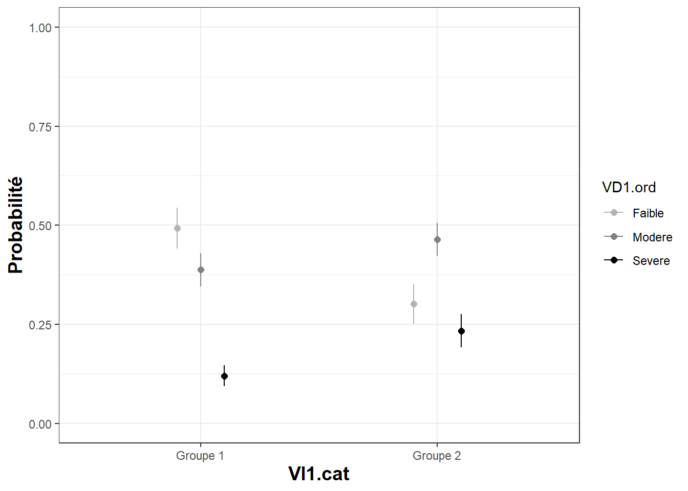
4.2.13.9 Interpretation
[1] “La probabilité d’obtenir un score faible à VD1.ord (comparativement à un score modéré ou sévère) est plus importante dans le groupe 1 que dans le groupe 2 même lorsque l’on ajuste par VI2.multicat (X² = 7.357, Odds ratio = 2.243, p = 0.0066788).”
4.3 Plusieurs VD numériques
4.3.1 MANOVA
4.3.1.1 Type de variables
Variables Dépendantes : Numérique
Variables Indépendantes : Catégorielles
4.3.1.2 Packages nécessaires
4.3.1.3 Données réelles
# choisissez la ligne appropriée au format de votre fichier de données.
# si vos données sont dans un fichier .txt
my_data.manova <- read.delim(file.choose())
# si vos données sont dans un fichier .csv
my_data.manova <- read.csv(file.choose())
# si vos données sont dans un fichier .xls / .xlsx
my_data.manova <- read_excel(file.choose())
# une fois vos données chargées, vous pouvez renommer vos noms de colonnes afin qu'ils correspondent à ceux utilisés dans le code ci-dessous
# Si vous ne souhaitez pas renommer vos noms de colonnes, sautez cette étape mais adaptez le code des parties suivantes en lui indiquant les noms de colonnes de vos données.
# On crée une nouvelle colonne pour vos variables dépendantes continues (remplacez 'votre.nom.de.colonne' par les noms appropriés)
my_data.manova$VD1.cont <- my_data.manova$'votre.nom.de.colonne'
my_data.manova$VD2.cont <- my_data.manova$'votre.nom.de.colonne'
# On crée une nouvelle colonne pour vos variables indépendantes catégorielles (remplacez 'votre.nom.de.colonne' par les noms appropriés)
my_data.manova$VI1.cat <- my_data.manova$'votre.nom.de.colonne'
my_data.manova$VI2.cat <- my_data.manova$'votre.nom.de.colonne'4.3.1.4 Données fictives
set.seed(4321)
manova <- rnorm(50)
my_data.manova <- data.frame(
VD1.cont = rnorm(50)*2 + 1*manova,
VD2.cont = rnorm(50)+ 0.2*manova,
VI1.cat = rep(c(1,2), each=25),
VI2.cat = rbinom(50, 1, 0.5) + 1)
# on recode les catégories de VI1.cat et VI2.cat pour que les résultats soient plus lisibles
my_data.manova$VI1.cat <- fct_recode(factor(my_data.manova$VI1.cat),
"Groupe 1" = "1",
"Groupe 2" = "2")
my_data.manova$VI2.cat <- fct_recode(factor(my_data.manova$VI2.cat),
"Caracteristique 1" = "1",
"Caracteristique 2" = "2") 4.3.1.5 Déclaration du type de variables
4.3.1.6 Inspection des données
## Les graphiques situés sur la diagonale représentent la distribution des variables
## Les graphiques (ou les valeurs de corrélation) situés au dessus et en dessous de la diagonale représentent l'association entre les différentes variables
ggpairs(my_data.manova,
lower = list(continuous = wrap("smooth", alpha = 0.7), combo = "box_no_facet"),
upper = list(combo = "facetdensity", discrete = "facetbar"),
mapping = aes(alpha = 0.8)) + theme_bw()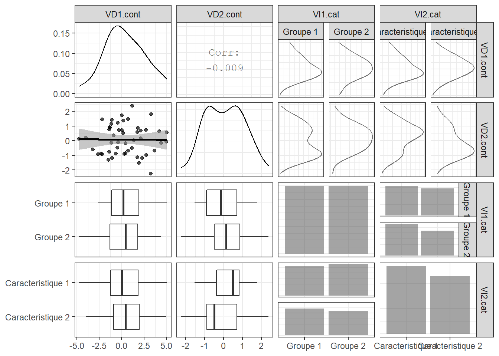
4.3.1.7 Analyse des données
# calcul de la manova et stockage des résultats dans l’objet manova.test
manova.test <- lm(formula = cbind(VD1.cont, VD2.cont) ~ VI1.cat*VI2.cat,
contrasts = list(
VI1.cat = "contr.sum",
VI2.cat = "contr.sum"),
data = my_data.manova)
# tests post-hocs évaluant l'effet principal de VI1.cat pour chaque modalité de VI2.cat et pour chaque variable dépendante (p-values non ajustées)
posthoc.manova <- emmeans(manova.test, consec ~ VI1.cat|VD.mult*VI2.cat, mult.names = "VD.mult")
# obtention des résultats de la manova
## résultats multivariés
Anova(manova.test, type = 3)##
## Type III MANOVA Tests: Pillai test statistic
## Df test stat approx F num Df den Df Pr(>F)
## (Intercept) 1 0.034148 0.79550 2 45 0.4576
## VI1.cat 1 0.012499 0.28480 2 45 0.7535
## VI2.cat 1 0.042506 0.99883 2 45 0.3763
## VI1.cat:VI2.cat 1 0.036214 0.84542 2 45 0.4361## Response VD1.cont :
##
## Call:
## lm(formula = VD1.cont ~ VI1.cat * VI2.cat, data = my_data.manova,
## contrasts = list(VI1.cat = "contr.sum", VI2.cat = "contr.sum"))
##
## Residuals:
## Min 1Q Median 3Q Max
## -4.6451 -1.2643 -0.1874 1.3982 4.6416
##
## Coefficients:
## Estimate Std. Error t value Pr(>|t|)
## (Intercept) 0.40036 0.32863 1.218 0.229
## VI1.cat1 0.15666 0.32863 0.477 0.636
## VI2.cat1 -0.08085 0.32863 -0.246 0.807
## VI1.cat1:VI2.cat1 0.27755 0.32863 0.845 0.403
##
## Residual standard error: 2.314 on 46 degrees of freedom
## Multiple R-squared: 0.02295, Adjusted R-squared: -0.04077
## F-statistic: 0.3602 on 3 and 46 DF, p-value: 0.782
##
##
## Response VD2.cont :
##
## Call:
## lm(formula = VD2.cont ~ VI1.cat * VI2.cat, data = my_data.manova,
## contrasts = list(VI1.cat = "contr.sum", VI2.cat = "contr.sum"))
##
## Residuals:
## Min 1Q Median 3Q Max
## -2.05660 -0.77576 -0.08148 0.68083 2.57804
##
## Coefficients:
## Estimate Std. Error t value Pr(>|t|)
## (Intercept) 0.05850 0.14363 0.407 0.686
## VI1.cat1 -0.08385 0.14363 -0.584 0.562
## VI2.cat1 0.20125 0.14363 1.401 0.168
## VI1.cat1:VI2.cat1 -0.14165 0.14363 -0.986 0.329
##
## Residual standard error: 1.012 on 46 degrees of freedom
## Multiple R-squared: 0.06956, Adjusted R-squared: 0.008876
## F-statistic: 1.146 on 3 and 46 DF, p-value: 0.3405## $emmeans
## VD.mult = VD1.cont, VI2.cat = Caracteristique 1:
## VI1.cat emmean SE df lower.CL upper.CL
## Groupe 1 0.7537 0.642 46 -0.5384 2.046
## Groupe 2 -0.1147 0.619 46 -1.3598 1.130
##
## VD.mult = VD2.cont, VI2.cat = Caracteristique 1:
## VI1.cat emmean SE df lower.CL upper.CL
## Groupe 1 0.0342 0.281 46 -0.5305 0.599
## Groupe 2 0.4852 0.270 46 -0.0589 1.029
##
## VD.mult = VD1.cont, VI2.cat = Caracteristique 2:
## VI1.cat emmean SE df lower.CL upper.CL
## Groupe 1 0.3603 0.668 46 -0.9845 1.705
## Groupe 2 0.6021 0.698 46 -0.8026 2.007
##
## VD.mult = VD2.cont, VI2.cat = Caracteristique 2:
## VI1.cat emmean SE df lower.CL upper.CL
## Groupe 1 -0.0849 0.292 46 -0.6727 0.503
## Groupe 2 -0.2006 0.305 46 -0.8145 0.413
##
## Confidence level used: 0.95
##
## $contrasts
## VD.mult = VD1.cont, VI2.cat = Caracteristique 1:
## contrast estimate SE df t.ratio p.value
## Groupe 2 - Groupe 1 -0.868 0.891 46 -0.974 0.3351
##
## VD.mult = VD2.cont, VI2.cat = Caracteristique 1:
## contrast estimate SE df t.ratio p.value
## Groupe 2 - Groupe 1 0.451 0.390 46 1.158 0.2530
##
## VD.mult = VD1.cont, VI2.cat = Caracteristique 2:
## contrast estimate SE df t.ratio p.value
## Groupe 2 - Groupe 1 0.242 0.966 46 0.250 0.8035
##
## VD.mult = VD2.cont, VI2.cat = Caracteristique 2:
## contrast estimate SE df t.ratio p.value
## Groupe 2 - Groupe 1 -0.116 0.422 46 -0.274 0.78554.3.1.8 Graphique
# graphique représentant les effets multivariés
crude.manova <- do.call(rbind, data.frame(effect(term="VI1.cat*VI2.cat", mod= manova.test)))
crude.manova$Outcome <- rep(c("VD1.cont", "VD2.cont"), each = nrow(crude.manova)/2)
ggplot(crude.manova,
aes(x = VI1.cat, y = fit, fill = VI1.cat)) +
geom_hline(aes(yintercept = 0)) +
geom_bar(stat = "identity", color = "black", alpha = 0.7,
position = position_dodge2()) +
geom_errorbar(aes(ymin = fit - se,
ymax = fit + se),
position = position_dodge2(),
color = "black") +
facet_wrap(~ VI2.cat) +
ylab("VD multivariée") + xlab("VI1.cat") +
theme_bw() +
theme(axis.title.y = element_text(size = 14, hjust = 0.5, face="bold"),
axis.title.x = element_text(face="bold", size = 14, hjust = 0.5)) +
scale_fill_grey(start=0.8, end = 0.4) +
guides(fill=FALSE)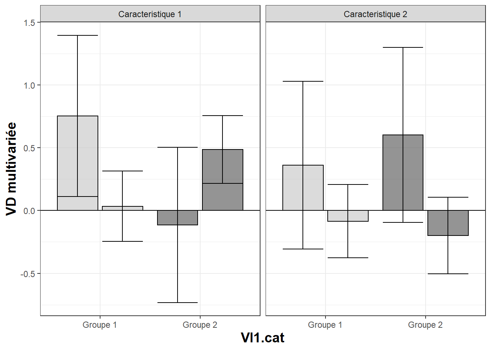
my_data.manova.long <- my_data.manova %>%
pivot_longer(cols = -c(VI1.cat, VI2.cat),
names_to = "VD",
values_to = "VD.values")
# graphique représentant les effets univariés
ggplot(my_data.manova.long, aes(x = VI1.cat, y = VD.values, fill = VD)) +
geom_boxplot(color="black", outlier.color="red") +
facet_wrap(~ VI2.cat) +
ylab("Valeur de chaque VD") + xlab("VI1.cat") +
theme_bw() +
theme(axis.title.y = element_text(size = 14, hjust = 0.5, face="bold"),
axis.title.x = element_text(face="bold", size = 14, hjust = 0.5)) +
scale_fill_grey(start=0.8, end = 0.4)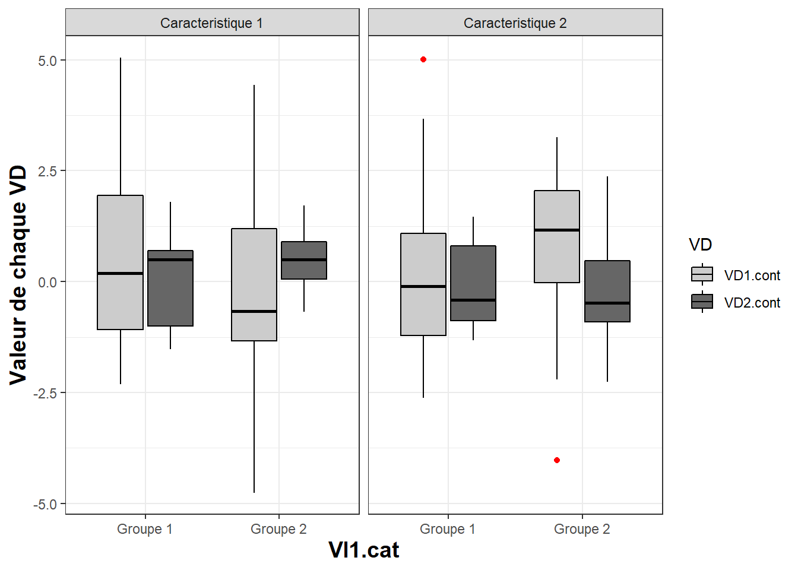
4.3.1.9 Interprétation
[1] “L’effet multivarié de l’interaction VI1.cat x VI2.cat sur VD1.cont et VD2.cont n’est pas significatif (F = 0.845, p = 0.436). Quelle que soit la variable dépendante ou la modalité de VI2.cat, l’effet de VI1.cat n’était pas significatif (toutes valeurs p non ajustées > 0.253)”
4.3.2 Regression linéaire multivariée 1
4.3.2.1 Type de variables
Variables Dépendantes : Numérique
Variables Indépendantes : Numériques
4.3.2.2 Packages nécessaires
4.3.2.3 Données réelles
# choisissez la ligne appropriée au format de votre fichier de données.
# si vos données sont dans un fichier .txt
regmultivariate1 <- read.delim(file.choose())
# si vos données sont dans un fichier .csv
regmultivariate1 <- read.csv(file.choose())
# si vos données sont dans un fichier .xls / .xlsx
regmultivariate1 <- read_excel(file.choose())
# une fois vos données chargées, vous pouvez renommer vos noms de colonnes afin qu'ils correspondent à ceux utilisés dans le code ci-dessous
# Si vous ne souhaitez pas renommer vos noms de colonnes, sautez cette étape mais adaptez le code des parties suivantes en lui indiquant les noms de colonnes de vos données.
# On crée une nouvelle colonne pour vos variables dépendantes continues (remplacez 'votre.nom.de.colonne' par les noms appropriés)
regmultivariate1$VD1.cont <- regmultivariate1$'votre.nom.de.colonne'
regmultivariate1$VD2.cont <- regmultivariate1$'votre.nom.de.colonne'
# On crée une nouvelle colonne pour vos variables indépendantes continues (remplacez 'votre.nom.de.colonne' par les noms appropriés)
regmultivariate1$VI1.cont <- regmultivariate1$'votre.nom.de.colonne'
regmultivariate1$VI2.cont <- regmultivariate1$'votre.nom.de.colonne'4.3.2.4 Données fictives
4.3.2.5 Déclaration du type de variables
4.3.2.6 Inspection des données
## Les graphiques situés sur la diagonale représentent la distribution des variables
## Les graphiques (ou les valeurs de corrélation) situés au dessus et en dessous de la diagonale représentent l'association entre les différentes variables
ggpairs(my_data.regmultivariate1,
lower = list(continuous = wrap("smooth", alpha = 0.7), combo = "box_no_facet"),
upper = list(combo = "facetdensity", discrete = "facetbar"),
mapping = aes(alpha = 0.8)) + theme_bw()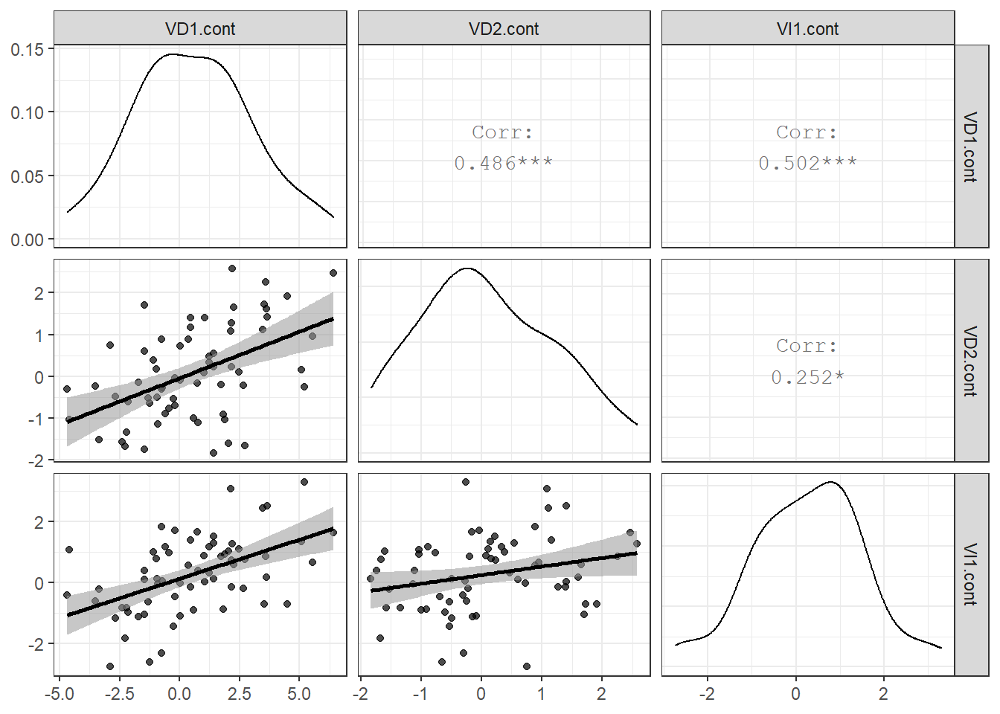
4.3.2.7 Analyse des données
# calcul de la régression multivariée et stockage des résultats dans l’objet regmultivariate1.test
regmultivariate1.test <- lm(formula = cbind(VD1.cont, VD2.cont) ~ VI1.cont,
data = my_data.regmultivariate1)
# obtention des résultats de la régression linéaire multivariée
# effet multivarié
Anova(regmultivariate1.test)##
## Type II MANOVA Tests: Pillai test statistic
## Df test stat approx F num Df den Df Pr(>F)
## VI1.cont 1 0.2523 10.461 2 62 0.0001218 ***
## ---
## Signif. codes: 0 '***' 0.001 '**' 0.01 '*' 0.05 '.' 0.1 ' ' 1## Response VD1.cont :
##
## Call:
## lm(formula = VD1.cont ~ VI1.cont, data = my_data.regmultivariate1)
##
## Residuals:
## Min 1Q Median 3Q Max
## -5.9440 -1.3316 -0.1302 1.0871 4.9018
##
## Coefficients:
## Estimate Std. Error t value Pr(>|t|)
## (Intercept) 0.2786 0.2709 1.028 0.308
## VI1.cont 0.9833 0.2133 4.610 2.02e-05 ***
## ---
## Signif. codes: 0 '***' 0.001 '**' 0.01 '*' 0.05 '.' 0.1 ' ' 1
##
## Residual standard error: 2.13 on 63 degrees of freedom
## Multiple R-squared: 0.2522, Adjusted R-squared: 0.2403
## F-statistic: 21.25 on 1 and 63 DF, p-value: 2.021e-05
##
##
## Response VD2.cont :
##
## Call:
## lm(formula = VD2.cont ~ VI1.cont, data = my_data.regmultivariate1)
##
## Residuals:
## Min 1Q Median 3Q Max
## -1.8773 -0.7352 -0.1386 0.7147 2.2754
##
## Coefficients:
## Estimate Std. Error t value Pr(>|t|)
## (Intercept) 0.01706 0.13886 0.123 0.9026
## VI1.cont 0.22598 0.10935 2.067 0.0429 *
## ---
## Signif. codes: 0 '***' 0.001 '**' 0.01 '*' 0.05 '.' 0.1 ' ' 1
##
## Residual standard error: 1.092 on 63 degrees of freedom
## Multiple R-squared: 0.06349, Adjusted R-squared: 0.04862
## F-statistic: 4.271 on 1 and 63 DF, p-value: 0.042884.3.2.8 Graphique
# Chaque droite représente l'effet de VI1.cont sur chacune des deux variables dépendantes. Les zones plus claires autour des droites représentent les intervalles de confiance à 95%
crude.slope.regmultivariate1 <- do.call(rbind,
as.data.frame(
effect(
term = "VI1.cont",
mod = regmultivariate1.test)))
crude.slope.regmultivariate1$Outcome <- rep(c("VD1.cont", "VD2.cont"), each = nrow(crude.slope.regmultivariate1)/2)
my_data.regmultivariate1.long <- my_data.regmultivariate1 %>%
pivot_longer(cols = c(VD1.cont, VD2.cont),
names_to = "VD.names",
values_to = "VD")
ggplot() +
geom_point(data = my_data.regmultivariate1.long,
aes(x = VI1.cont, y = VD, color = VD.names),
size = 3, alpha = 0.4) +
geom_ribbon(data = crude.slope.regmultivariate1,
aes(x = VI1.cont, y = fit,
fill = Outcome,
ymin = lower, ymax = upper),
alpha=0.7) +
geom_line(data = crude.slope.regmultivariate1,
aes(x = VI1.cont , y = fit, color = Outcome),
size = 1) +
ylab("VD1.cont") + xlab("VI1.cont") +
theme_bw() +
theme(axis.title.y = element_text(size = 14, hjust = 0.5, face="bold"),
axis.title.x = element_text(face="bold", size = 14, hjust = 0.5)) +
scale_color_manual(values = c("black", "red")) +
scale_fill_manual(values = c("lightgrey", "#FDA2A2")) +
guides(fill=FALSE)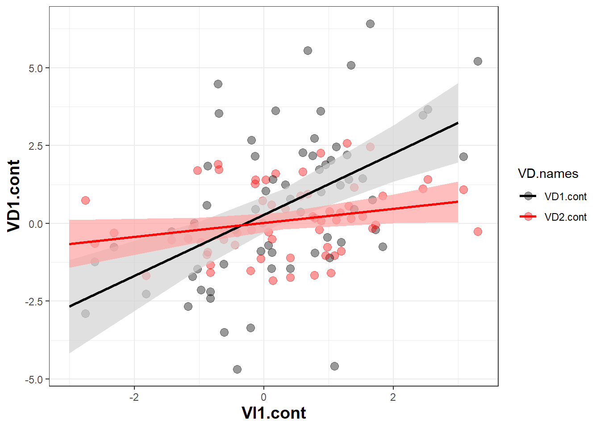
4.3.2.9 Interprétation
[1] “L’effet multivarié de VI1.cont sur VD1.cont et VD2.cont est statistiquement significatif (F = 10.461, p = 0.000122). Quelle que soit la variable dépendante, l’effet univarié de VI1.cont était significatif ou marginalement significatif (toutes valeurs p non ajustées < 0.0429)”
4.3.3 MANCOVA
ATTENTION : si votre variable indépendante principale est Numérique OU que vous faites une hypothèse d’interaction entre votre VI principale catégorielle et une autre covariable, reportez-vous à la section suivante Régression linéaire multivariée 2.
Dans le cas contraire (votre VI principale est catégorielle ET vous ne faites pas d’hypothèse d’interaction entre votre VI catégorielle et une covariable), utilisez une MANCOVA décrite dans cette vignette.
4.3.3.1 Type de variables
Variables Dépendantes : Numériques
Variable indépendante principale: Catégorielle
Autres variables indépendantes (covariables) : Numériques / Catégorielles
4.3.3.2 Packages nécessaires
4.3.3.3 Données réelles
# choisissez la ligne appropriée au format de votre fichier de données.
# si vos données sont dans un fichier .txt
my_data.mancova <- read.delim(file.choose())
# si vos données sont dans un fichier .csv
my_data.mancova <- read.csv(file.choose())
# si vos données sont dans un fichier .xls / .xlsx
my_data.mancova <- read_excel(file.choose())
# une fois vos données chargées, vous pouvez renommer vos noms de colonnes afin qu'ils correspondent à ceux utilisés dans le code ci-dessous
# Si vous ne souhaitez pas renommer vos noms de colonnes, sautez cette étape mais adaptez le code des parties suivantes en lui indiquant les noms de colonnes de vos données.
# On crée une nouvelle colonne pour vos variables dépendantes continues (remplacez 'votre.nom.de.colonne' par les noms appropriés)
my_data.mancova$VD1.cont <- my_data.mancova$'votre.nom.de.colonne'
my_data.mancova$VD2.cont <- my_data.mancova$'votre.nom.de.colonne'
# On crée une nouvelle colonne pour votre variable indépendante catégorielle (remplacez 'votre.nom.de.colonne' par le nom approprié)
my_data.mancova$VI1.cat <- my_data.mancova$'votre.nom.de.colonne'
# On crée une nouvelle colonne pour votre variable indépendante continue (remplacez 'votre.nom.de.colonne' par le nom approprié)
my_data.mancova$VI1.cont <- my_data.mancova$'votre.nom.de.colonne'4.3.3.4 Données fictives
set.seed(4321)
mancova <- rnorm(50)
my_data.mancova <- data.frame(
VD1.cont = rnorm(50)*2 + 1*mancova,
VD2.cont = rnorm(50)+ 0.2*mancova,
VI1.cat = rbinom(50, 1, 0.5) + 1,
VI2.cont = rnorm(50)+ 0.6*mancova)
my_data.mancova$VI1.cat <- fct_recode(factor(my_data.mancova$VI1.cat),
"Groupe 1" = "1",
"Groupe 2" = "2") 4.3.3.5 Déclaration du type de variables
4.3.3.6 Inspection des données
## Les graphiques situés sur la diagonale représentent la distribution des variables
## Les graphiques (ou les valeurs de corrélation) situés au dessus et en dessous de la diagonale représentent l'association entre les différentes variables
ggpairs(my_data.mancova,
lower = list(continuous = wrap("smooth", alpha = 0.7), combo = "box_no_facet"),
upper = list(combo = "facetdensity", discrete = "facetbar"),
mapping = aes(alpha = 0.8)) + theme_bw()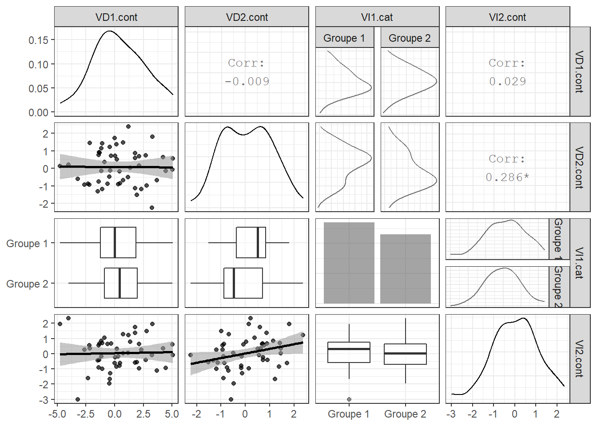
4.3.3.7 Analyse des données
# calcul de la mancova et stockage des résultats dans l’objet mancova.test
mancova.test <- lm(formula = cbind(VD1.cont, VD2.cont) ~ VI1.cat + VI2.cont,
data = my_data.mancova)
# obtention des résultats de la mancova
## résultats multivariés
Anova(mancova.test)##
## Type II MANOVA Tests: Pillai test statistic
## Df test stat approx F num Df den Df Pr(>F)
## VI1.cat 1 0.042032 1.0091 2 46 0.3725
## VI2.cont 1 0.082378 2.0648 2 46 0.1384## Response VD1.cont :
##
## Call:
## lm(formula = VD1.cont ~ VI1.cat + VI2.cont, data = my_data.mancova)
##
## Residuals:
## Min 1Q Median 3Q Max
## -5.1823 -1.5719 -0.2031 1.5844 4.7531
##
## Coefficients:
## Estimate Std. Error t value Pr(>|t|)
## (Intercept) 0.29885 0.44581 0.670 0.506
## VI1.catGroupe 2 0.17677 0.65682 0.269 0.789
## VI2.cont 0.06324 0.30540 0.207 0.837
##
## Residual standard error: 2.314 on 47 degrees of freedom
## Multiple R-squared: 0.002376, Adjusted R-squared: -0.04008
## F-statistic: 0.05597 on 2 and 47 DF, p-value: 0.9456
##
##
## Response VD2.cont :
##
## Call:
## lm(formula = VD2.cont ~ VI1.cat + VI2.cont, data = my_data.mancova)
##
## Residuals:
## Min 1Q Median 3Q Max
## -2.09123 -0.68646 -0.07975 0.62216 2.19576
##
## Coefficients:
## Estimate Std. Error t value Pr(>|t|)
## (Intercept) 0.2491 0.1876 1.328 0.1908
## VI1.catGroupe 2 -0.3907 0.2764 -1.413 0.1642
## VI2.cont 0.2624 0.1285 2.041 0.0468 *
## ---
## Signif. codes: 0 '***' 0.001 '**' 0.01 '*' 0.05 '.' 0.1 ' ' 1
##
## Residual standard error: 0.9738 on 47 degrees of freedom
## Multiple R-squared: 0.119, Adjusted R-squared: 0.08156
## F-statistic: 3.176 on 2 and 47 DF, p-value: 0.050864.3.3.8 Graphique
# graphique représentant les effets multivariés
adjusted.mancova <- do.call(rbind, data.frame(effect(term="VI1.cat", mod= mancova.test)))
adjusted.mancova$Outcome <- rep(c("VD1.cont", "VD2.cont"), each = nrow(adjusted.mancova)/2)
ggplot(adjusted.mancova,
aes(x = VI1.cat, y = fit, fill = VI1.cat)) +
geom_hline(aes(yintercept = 0)) +
geom_bar(stat = "identity", color = "black", alpha = 0.7,
position = position_dodge2()) +
geom_errorbar(aes(ymin = fit - se,
ymax = fit + se),
width = 0.1,
position = position_dodge2(width = 0.9),
color = "black") +
facet_wrap(~ Outcome) +
ylab("VD multivariée") + xlab("VI1.cat") +
theme_bw() +
theme(axis.title.y = element_text(size = 14, hjust = 0.5, face="bold"),
axis.title.x = element_text(face="bold", size = 14, hjust = 0.5)) +
scale_fill_grey(start=0.8, end = 0.4) +
guides(fill=FALSE)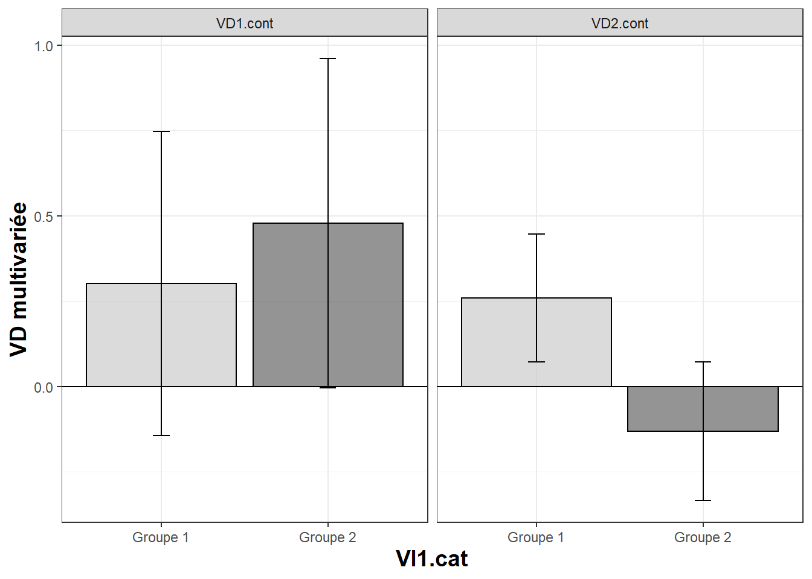
4.3.3.9 Interprétation
[1] “L’effet multivarié de VI1.cat sur VD1.cont et VD2.cont n’est pas significatif (F = 1.009, p = 0.372). Plus précisément, l’effet univarié de VI1.cat était non significatif sur VD1.cont (b = 0.177, SE = 0.657, p = 0.789), et sur VD2.cont (b = -0.391, SE = 0.276, p = 0.164)”
4.3.4 Regression linéaire multivariée 2
ATTENTION : si votre variable indépendante principale est catégorielle ET que vous ne faites pas d’hypothèse d’interaction entre cette VI principale catégorielle et une autre covariable, reportez-vous à la section précédente MANCOVA.
Dans le cas contraire (votre VI principale est numérique OU vous faites une hypothèse d’interaction entre votre VI catégorielle et une covariable), utilisez une régression linéaire multivariée décrite dans cette vignette.
4.3.4.1 Type de variables
Variables Dépendantes : Numérique
Variables Indépendantes : Numérique / Catégorielles
4.3.4.2 Packages nécessaires
4.3.4.3 Données réelles
# choisissez la ligne appropriée au format de votre fichier de données.
# si vos données sont dans un fichier .txt
my_data.regmultivariate2 <- read.delim(file.choose())
# si vos données sont dans un fichier .csv
my_data.regmultivariate2 <- read.csv(file.choose())
# si vos données sont dans un fichier .xls / .xlsx
my_data.regmultivariate2 <- read_excel(file.choose())
# une fois vos données chargées, vous pouvez renommer vos noms de colonnes afin qu'ils correspondent à ceux utilisés dans le code ci-dessous
# Si vous ne souhaitez pas renommer vos noms de colonnes, sautez cette étape mais adaptez le code des parties suivantes en lui indiquant les noms de colonnes de vos données.
# On crée une nouvelle colonne pour vos variables dépendantes continues (remplacez 'votre.nom.de.colonne' par les noms appropriés)
my_data.regmultivariate2$VD1.cont <- my_data.regmultivariate2$'votre.nom.de.colonne'
my_data.regmultivariate2$VD2.cont <- my_data.regmultivariate2$'votre.nom.de.colonne'
# On crée une nouvelle colonne pour vos variables indépendantes continues (remplacez 'votre.nom.de.colonne' par les noms appropriés)
my_data.regmultivariate2$VI1.cont <- my_data.regmultivariate2$'votre.nom.de.colonne'
my_data.regmultivariate2$VI2.cont <- my_data.regmultivariate2$'votre.nom.de.colonne'
# On crée une nouvelle colonne pour votre variable indépendante catégorielle (remplacez 'votre.nom.de.colonne' par le nom approprié)
my_data.regmultivariate2$VI3.cat <- my_data.regmultivariate2$'votre.nom.de.colonne'4.3.4.4 Données fictives
4.3.4.5 Déclaration du type de variables
my_data.regmultivariate2$VD1.cont <- as.numeric(as.character(my_data.regmultivariate2$VD1.cont))
my_data.regmultivariate2$VD2.cont <- as.numeric(as.character(my_data.regmultivariate2$VD2.cont))
my_data.regmultivariate2$VI1.cont <- as.numeric(as.character(my_data.regmultivariate2$VI1.cont))
my_data.regmultivariate2$VI2.cont <- as.numeric(as.character(my_data.regmultivariate2$VI2.cont))
my_data.regmultivariate2$VI3.cat <- factor(my_data.regmultivariate2$VI3.cat)4.3.4.6 Inspection des données
## Les graphiques situés sur la diagonale représentent la distribution des variables
## Les graphiques (ou les valeurs de corrélation) situés au dessus et en dessous de la diagonale représentent l'association entre les différentes variables
ggpairs(my_data.regmultivariate2,
lower = list(continuous = wrap("smooth", alpha = 0.7), combo = "box_no_facet"),
upper = list(combo = "facetdensity", discrete = "facetbar"),
mapping = aes(alpha = 0.8)) + theme_bw()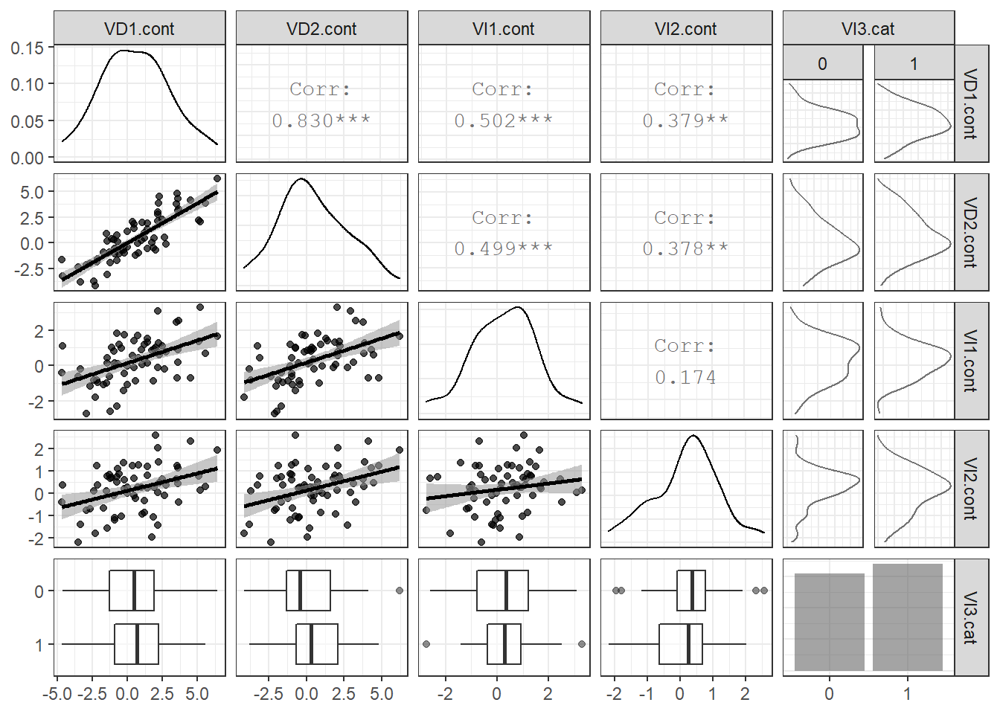
4.3.4.7 Analyse des données
# calcul de la régression multivariée et stockage des résultats dans l’objet regmultivariate2.test
regmultivariate2.test <- lm(formula = cbind(VD1.cont, VD2.cont) ~ VI1.cont + VI2.cont + VI3.cat,
data = my_data.regmultivariate2)
# obtention des résultats de la régression linéaire multivariée
# effet multivarié
Anova(regmultivariate2.test)##
## Type II MANOVA Tests: Pillai test statistic
## Df test stat approx F num Df den Df Pr(>F)
## VI1.cont 1 0.249791 9.9889 2 60 0.0001801 ***
## VI2.cont 1 0.142223 4.9741 2 60 0.0100284 *
## VI3.cat 1 0.044884 1.4098 2 60 0.2521622
## ---
## Signif. codes: 0 '***' 0.001 '**' 0.01 '*' 0.05 '.' 0.1 ' ' 1## Response VD1.cont :
##
## Call:
## lm(formula = VD1.cont ~ VI1.cont + VI2.cont + VI3.cat, data = my_data.regmultivariate2)
##
## Residuals:
## Min 1Q Median 3Q Max
## -5.8585 -1.3109 -0.2386 1.1488 4.4687
##
## Coefficients:
## Estimate Std. Error t value Pr(>|t|)
## (Intercept) 0.05097 0.37549 0.136 0.89247
## VI1.cont 0.87522 0.20699 4.228 8.02e-05 ***
## VI2.cont 0.74093 0.25746 2.878 0.00551 **
## VI3.cat1 0.21593 0.50938 0.424 0.67312
## ---
## Signif. codes: 0 '***' 0.001 '**' 0.01 '*' 0.05 '.' 0.1 ' ' 1
##
## Residual standard error: 2.031 on 61 degrees of freedom
## Multiple R-squared: 0.3416, Adjusted R-squared: 0.3092
## F-statistic: 10.55 on 3 and 61 DF, p-value: 1.104e-05
##
##
## Response VD2.cont :
##
## Call:
## lm(formula = VD2.cont ~ VI1.cont + VI2.cont + VI3.cat, data = my_data.regmultivariate2)
##
## Residuals:
## Min 1Q Median 3Q Max
## -4.0828 -1.0812 -0.0543 0.9173 4.1102
##
## Coefficients:
## Estimate Std. Error t value Pr(>|t|)
## (Intercept) -0.2791 0.3458 -0.807 0.4228
## VI1.cont 0.7994 0.1906 4.193 9.05e-05 ***
## VI2.cont 0.7229 0.2371 3.048 0.0034 **
## VI3.cat1 0.6605 0.4692 1.408 0.1643
## ---
## Signif. codes: 0 '***' 0.001 '**' 0.01 '*' 0.05 '.' 0.1 ' ' 1
##
## Residual standard error: 1.87 on 61 degrees of freedom
## Multiple R-squared: 0.3579, Adjusted R-squared: 0.3263
## F-statistic: 11.33 on 3 and 61 DF, p-value: 5.264e-064.3.4.8 Graphique
# la ligne représente la pente de l'effet de VI1.cont ajusté par l'effet de VI2.cat sur VD1.cont
adjusted.slope.regmultivariate2 <- do.call(rbind,
as.data.frame(
effect(
term = "VI1.cont",
mod = regmultivariate2.test)))
adjusted.slope.regmultivariate2$Outcome <- rep(c("VD1.cont", "VD2.cont"), each = nrow(adjusted.slope.regmultivariate2)/2)
my_data.regmultivariate2.long <- my_data.regmultivariate2 %>%
pivot_longer(cols = c(VD1.cont, VD2.cont),
names_to = "VD.names",
values_to = "VD")
ggplot() +
geom_point(data = my_data.regmultivariate2.long,
aes(x = VI1.cont, y = VD, color = VD.names),
size = 3, alpha = 0.4) +
geom_ribbon(data = adjusted.slope.regmultivariate2,
aes(x = VI1.cont, y = fit,
fill = Outcome,
ymin = lower, ymax = upper),
alpha=0.5) +
geom_line(data = adjusted.slope.regmultivariate2,
aes(x = VI1.cont , y = fit, color = Outcome),
size = 1) +
ylab("VD1.cont") + xlab("VI1.cont") +
theme_bw() +
theme(axis.title.y = element_text(size = 14, hjust = 0.5, face="bold"),
axis.title.x = element_text(face="bold", size = 14, hjust = 0.5)) +
scale_color_manual(values = c("black", "red")) +
scale_fill_manual(values = c("lightgrey", "#FDA2A2")) +
guides(fill=FALSE)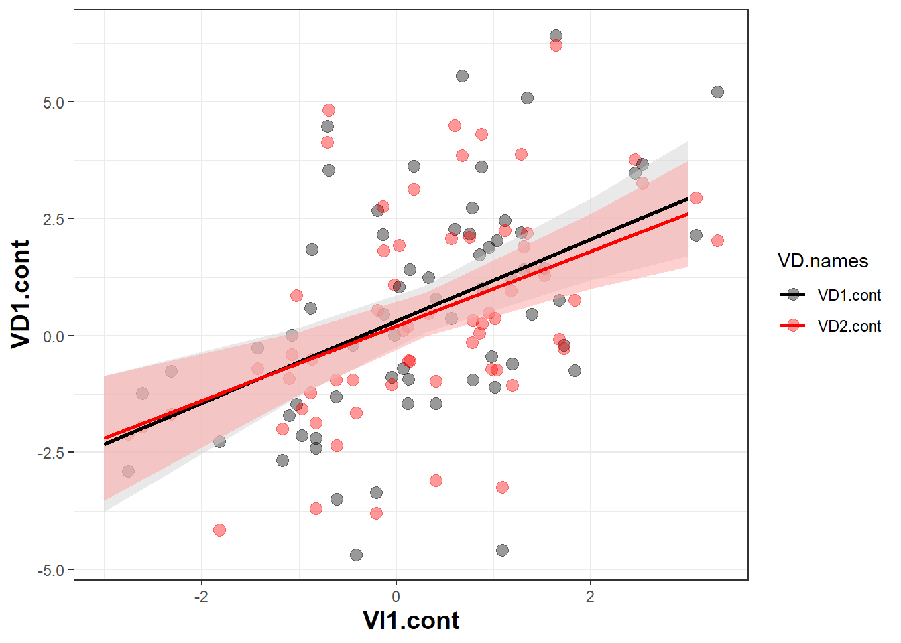
4.3.4.9 Interpretation
[1] “L’effet multivarié de VI1.cont sur VD1.cont et VD2.cont est statistiquement significatif (F = 9.989, p = 0.00018). Quelle que soit la variable dépendante, l’effet univarié de VI1.cont était significatif (toutes valeurs p non ajustées < 1e-04)”